| Ｃｈａｏｓ；Ｃｈｉｌｄ －Ｃｈｉｌｄｒｅｎ'ｓ Ｒｅｖｉｖｅ－ (講談社ラノベ文庫) | |
| ＭＡＧＥＳ． & Ｃｈｉｙｏ ｓｔ．ｉｎｃ & 梅原英司 | |
| 講談社 (2017) | |
本作品は、縦書き表示での閲覧を推奨いたします。横書き表示にした際には、表示が一部くずれる恐れがあります。
ご利用になるブラウザまたはビューワにより、表示が異なることがあります。
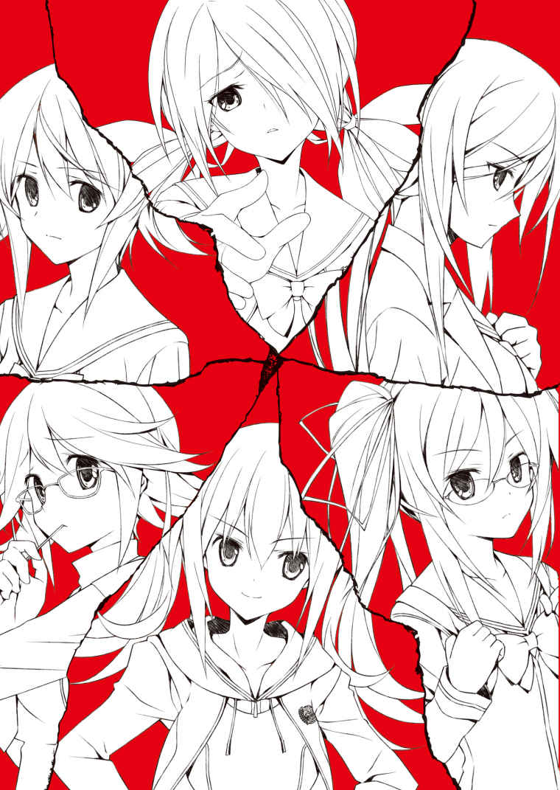
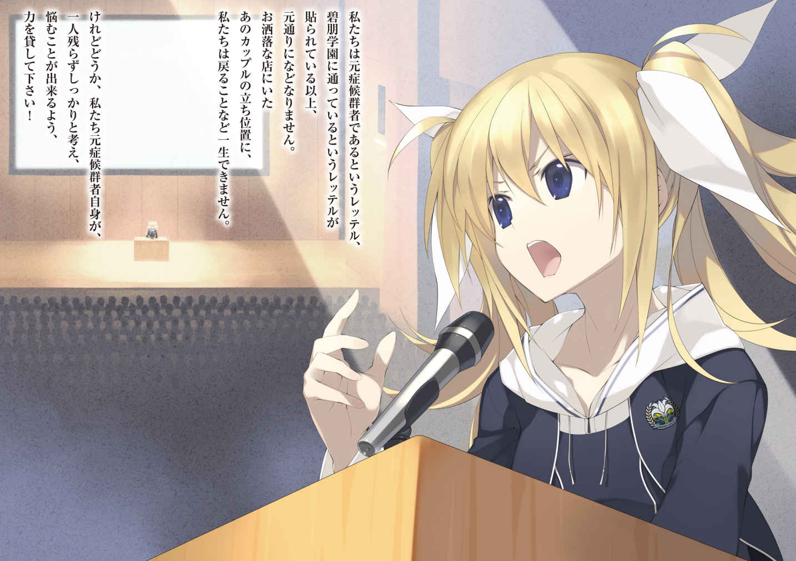
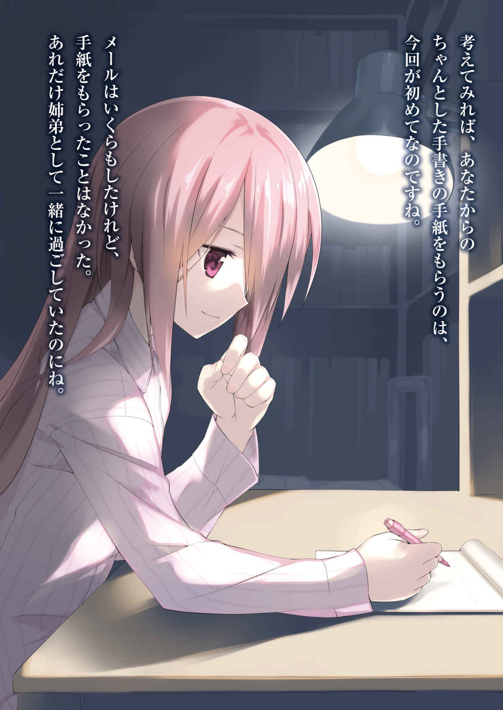
イラスト／ささきむつみ
デザイン／福永真未・小沼由季乃（ＲｅｄＲｏｏｓｔｅｒ）
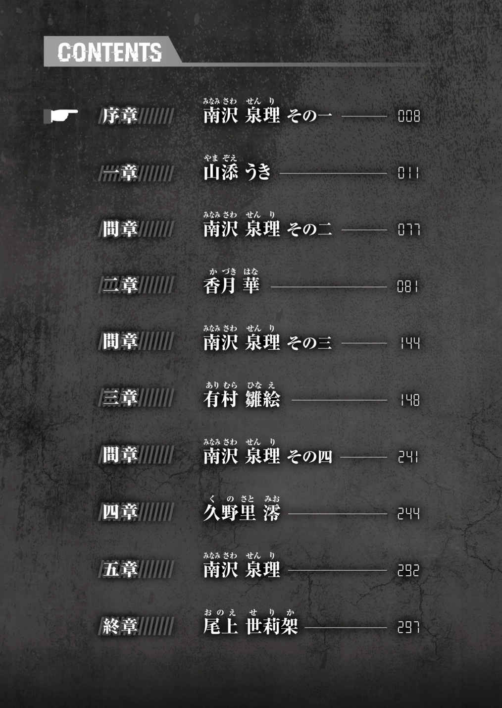
前略
返事、ありがとう。手紙が無事に届いているようで安心しました。
こちらはつつがなく過ごしています。どうするか悩んでいたおこたですが、結局、昨日買ってしまいました。共同の新しい家具を買うのは本当に久しぶりで、結 人 もうきも選んでいるときからうるさかったのだけれど、もしかしたら内心は私がいちばんはしゃいでいたのかもしれません。
それに合わせて、居間を少し模様替えしました。ソファの前の小さなテーブルがあったでしょう？ あの、天板の端に傷があったやつ。あれを物置にしまって、そこにおこたを置きました。そしてソファは逆側の壁に。ちょっと狭苦しくなるかなと思ったのだけれど、二日も経つとそれらしく見えるものなのね。
今、ご飯はそこで食べています。有 村 や香 月 が遊びに来るたび、帰る時間になってもおこたから出ようとしないので、引っ張り出すのに苦労しています。勝手に座椅子を買ってこようとしているので、それはなんとかやめさせようとしているのだけれど。
本当に、変わりないです。家のみんなも、学校の友人たちも、みんな元気です。
返事を貰 って気がついたのだけれど、考えてみれば、あなたからのちゃんとした手書きの手紙を貰うのは、今回が初めてなのですね。メールはいくらもしたけれど、手紙を貰ったことはなかった。あれだけ姉弟としていっしょに過ごしていたのにね。
拓 留 。
どんなことでも教えてね。くだらないことでも頼ってね。手紙のこともそうだけれど、私が気づいていないあなたのことが、きっとまだたくさんあるんでしょう。
正直に言うと、それは少し悔しい。だけど、どこかそれが楽しみでもあるの。
今さらだと思うことを教え合いましょう。前にお互いに聞いた話を、もう一度初めからしましょう。思いつかなくなったら、何度でも同じ話をしましょう。その中で、私はゆっくりとあなたに気づいていきたいと思っているの。勝手なこと言って、ごめんね。
急に冷え込んで来ました。
くれぐれも、身体には気をつけて。お腹を出して寝ないように。
また、手紙書きます。
草々
南 沢 泉 理
数年間にわたったその生活が自分に何をもたらしたのか、山 添 うきは上手く言葉にできなかった。冷静になって考えられる時間が経った今でもそれは変わらない。軟禁状態であったことは事実なのだから、おそらく外の人間からすれば、人権を無視された酷い生活に見えたのだろう。
しかしうきはそう感じたことはなかった。病院の地下の狭い部屋。与えられたことは実験の被験者であった患者の世話だけ。閉じた場所で繰り返される日常。当時のうきにとってそれは完璧だった。
自分の居場所はここであると、うきは思っていた。
ひどく印象に残っている一人の患者がいた。
老婆だった。正確な年齢はわからなかったが、孫がいてもおかしくない年頃だった。胸まで伸ばした黒髪が綺 麗 な、容姿も美しい女性だった。髪が自慢なのだろう、週に一度は決まった黒色で染め直すことをせがみ、枝毛一本許せない性格だった。刃物を渡すことは禁止されていたため、うきは四六時中その女性の枝毛を切ってあげていた。
「動物園行く？」
それが彼女の口癖だった。というよりその言葉しか話さなかった。髪を染めて、枝毛を切って、お腹がすいた、トイレに行きたい、まだ寝たくない、そのすべてを「動物園行く？」という言葉で表現した。うきが意図を摑 めず困惑していると、彼女は自分の右手の甲を血が滲 むまで嚙 んで不満を示した。
地下にいたすべての患者同様、精神に異常をきたしていた。なんとかコミュニケーションを図るため、うきは地下を管理していた研究者の一人に彼女のことを尋ねた。動物園というのが彼女にとってなんなのか知りたかった。研究者は教えることを渋ったが、手を嚙む行為がエスカレートしてはまずいと思ったのか、「ここに来る前は、家族で上野にある動物園によく通っていたらしい」ということだけを教えてくれた。
「上野の動物園には今度行きましょうね」
今度というのがいつになるかわからないまま、うきは彼女に言った。しかし反応はなかった。ただ「動物園行く？」という言葉が繰り返された。少し考え、うきは続けた。
「お孫さんと行っていたんですか？」
問われた彼女は反応を示した。手を伸ばし、柔らかくうきの頰 に触れてきた。目が合った。その色が明らかにふだんとは違っていた。思わずうきは頰に伸ばされた彼女の手を握った。
「......ごめんなさい。私は、あなたのお孫さんじゃないんです」
気づけばうきはそう言っていた。目をまっすぐに見返したまま、事実を告げていた。噓 を言ってはいけない気がしたのだ。直後に、手を振り払われた。そして彼女は自分の手の甲を嚙んで「動物園、行く......？」と繰り返し始めた。いつもより嚙む力が強く、そのまま肉を食いちぎった。慌てて力ずくでやめさせなければならなかった。
二週間後に彼女は死んだ。投薬の加減を失敗したと、研究者は使っているコップが割れてしまった程度の失望をこめて言った。
うきは彼女の遺体に会うことを望んだ。生えてくる白髪を一本でも許せなくて黒く染めることにこだわっていた彼女の髪を、もう一度染めてあげたかった。しかしそれは許可されなかった。すでに遺体は廃棄されていた。無駄なことを考えるなと言われた。
空になったベッドの枕には、彼女の長い髪が一本、のたうつように残っていた。人工的な黒さが目についた。それをごみ箱に捨てるか、トイレに流すか、うきは少しの間悩んだ。どちらに捨てたほうが、廃棄された末にその髪が彼女の元いた場所に近づけるのかと考えた。翌日、空気にさらわれたのか、気づけば髪はどこかに行ってしまっていた。どちらにせよ無駄なことだったんだろう、とうきは思った。
それ以来、うきは患者のことを研究者に聞くのをやめた。彼女の死の原因が自分にあるとは思わなかった。しかし、あのとき自分が孫であると偽っていたら、何かが変わっていたのかもしれないという考えは、ふとした瞬間にうきに付きまとった。
彼女は、あの地下で何を感じていたのだろうか。あの閉じた完璧な世界に彼女も生きていたのだろうか。もし生きていたとしたら、彼女はそうやって自分を守っていたはずだった。それはうき自身がそうであったように、幸せなことに違いなかった。
そして、そこに穴を開けてしまったのは自分かもしれないと、うきは思った。
何かの物音が聞こえた気がして、うきは真夜中に目を覚ました。
顔に手をやるとわずかに濡 れていた。泣いていたらしい。昔の夢を見たあとはいつもこうだった。うきはゆっくりと息を吐きながら顔を拭った。
電気を落とした暗い私室に、廊下の明かりがドアからわずかに漏れていた。そういうことか、とうきは思い当たって、ベッドから降りた。愛用の猫の顔のスリッパに足を突っ込み、部屋の寒さに自分の身体を抱きながら、音を立てないように部屋から出た。
「あら、起こしちゃった？」
三階から二階へ降りると、やはり泉 理 が台所に立っていた。ううん、とうきがあいまいに返事をしながらお茶の支度を手伝おうとすると、「どてら、羽織りなさい。冷えるから。先に入ってて」とリビングの炬 燵 を指差してきた。
椅子にかけてあった半 纏 を羽織り、なんとなく定位置になったソファと逆側のスペースにうきは腰を下ろした。手際の良い姉は先にスイッチを入れていたらしく、炬燵は暖まっていた。
淹 れてもらったほうじ茶はいつものとおり本当に美味しかった。姉には料理では何一つ敵わないので、ならば先にお茶からとうきは一時期入れ込んだのだが、一向に追いつける気がしなかった。
「ユウ、大丈夫？」
「......たぶんね」
うきの問いに、泉 理 はやんわりと微笑んで答えた。
二人の弟である結 人 は暗所恐怖症を患っていた。真夜中、何かの拍子に目が覚めてしまったときなどは、もう一度眠れるまで泉理が結人の部屋で付き添ってやるのが常だった。そして泉理は結人が眠ったあとは、自分の部屋に戻らずに、必ず一時間ほどリビングで過ごしていた。
うきは泉理に確認したことはないが、それが結人のためなのは明らかだった。本当に深く眠ったかどうかが心配なのだ。事実、ふだんはテレビのつけっ放しなど絶対に許さない姉が、廊下の電気をつけたままにしていた。
いつのころからか、うきは折良く自分も目を覚ました場合、それに付き合うようになっていた。
「そうだ、これあげる」
カラーボックスに差してあった一冊の本を泉理は取り出した。看護学校を目指す人向けの分厚い問題集だった。ここ数日、泉理が読んでいたものだ。
「もう使わないの？」
「もともと、今までの復習に使おうと思って古本屋で買ったものだから。ちょっと鉛筆でチェック入れちゃってるけど」
うきがぱらぱらと問題集をめくると、最初から最後までびっしりと設問の頭に印がついていた。解いた問題とそうでない問題の区別のためだろう。試しにいくつかの問題を流し見てみるが、さっぱりわからなかった。
「高校に入ったらわかるようになるから」
眉根を寄せたうきに、泉理が苦笑した。
「......ほんと？」
「どこの看護学校でも基本的に問われるのは、高校レベルの英国数のどれかだからね。あとは生物、化学とか」
「小論文もだっけ」
そうそう、とどこか嬉 しそうに微笑む泉理に、うきはますます顔をしかめた。姉とは看護師という共通の将来の目標があるが、姉を見ているとなんだかそれがずいぶんと険しい道に思えてくる。こんな何を問われているかわからない分厚い問題集を、数日で解けるようになれるとはとても思えなかった。
「あなたが今の段階で、すらすら解けたら逆に私が自信失っちゃうもの。ほら、眉間」
手を伸ばしてうきの顔を軽く突いた泉理は、そのまま別の問題集と参考書を出してお店を広げ、いつもどおり勉強を始めた。
すでに学校の宿題が終わっていたうきは、専用の置き場になったカラーボックスの別の棚からレターセットを取り出し、拓 留 への手紙を書くことにした。
なんでもない近況を綴 っていく。
初めて手紙を書いたときには、検閲を受けるということで緊張したものだったが、今は慣れた。「当たり前のことを書きなさい。日記みたいに」と言って、筆を走らせてくれたのは泉 理 だ。手紙の中に、含めてはいけない物事はわかっていた。そしてそれがわかっているのは、事件の真実を知っている仲間たちだけだ。
先日、初めて返事を出してくれた兄も含めて。
「......元気そうで、安心した」
ぽつりと漏らした泉理に、うきはうん、と頷 いた。兄のことを言っているとわかった。
「おこた買ったこと、書いた？」と、泉理は顔をあげないまま続けた。
「......うん」
「そう」
うきも泉理も手を止めないまま、ときどき思いついたように話した。
兄のことや家のこと、学校のこと、口にした端から流れていくこの時間が、うきは好きだった。起きたばかりだというのに不思議と眠くはなく、けれども微睡 んでいるような心地良さがいつもあった。
なんとなく姉を眺めた。
ふだんは二つに括 って流している髪を一括りにしていた。前髪で隠れがちな顔がはっきりと覗 いていた。綺 麗 だなと思うときもあればかわいい顔立ちだなと思うときもあった。友人である雛 絵 に言わせると、「あの顔面はずるいね。年下の人からすれば頼れるお姉さんに見えるし、年上の人からだと守りたくなる妹に見えるもん。どうしたってもてるじゃん。ずるいね」ということらしいが、わからなくはなかった。
けれど、うきが最もこの姉には敵わないなと思うところは、その強さだった。
三ヵ月ほど前、カオスチャイルド症候群のリハビリを終えて退院した三人が、改めてこの青 葉 寮 で生活を再開してほどなく、結 人 が夜中に発作を起こした。青葉寮に戻ってからは初めての発作だった。パニックによる動 悸 と過呼吸に襲われても結人はしばらく一人で耐えていたが、ベッドから転がり落ちた音を泉理とうきが聞きつけ、治まるまでそばに付き添った。翌朝、どうして一人で我慢したのかと訊 いた泉理に、結人は何かを堪えるような顔をして「いつまでも、こんなんじゃ、だめだと思って」と答えた。
それを泉理は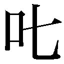 り飛ばした。その声の大きさに思わずうきは肩が跳ねた。そして泉理は結人を抱き締めて「私たちをなんだと思ってるの」と小さく叫んだ。だって、と結人が何か言おうとしても聞かなかった。なんだと思ってるのと繰り返して、ずっと抱き締めていた。
以来、結 人 は発作が起こると、ひどくなる前に自分から泉 理 を呼ぶようになった。
しかし、うきを呼びに来たことはなかった。その理由をうきはわかっていた。
うきは、結人が暗所恐怖症になった詳しい経緯を知らない。七年前に起こった渋谷地震の最中、暗いところに長時間居たことが原因だとは聞いていたが、何が起こってそうなったのか、どこにどのくらい居たのか、どうやって助かったのか、そういったことはいっさい知らなかった。
泉理はそれを知っている。他にも二歳しか違わない自分よりも、歳の離れた泉理を呼ぶほうが恥ずかしくないだろうし、姉として過ごした時間の差など、理由はいくらでもある。
けれど結局は、自分には姉のような強さがないからだと、うきは思っていた。
暗がりを怖がる理由を教えてと、踏み込む強さがないからだ。断られたらどうしようという考えが先に立ってしまう。なにより、踏み込んだことによって癒えていない傷を掘り返し、症状を克服しようとがんばっている結人を傷つけてしまうかもしれない。
不用意に踏み込んでしまった、いつかのように。
あの、人工的な髪の黒さが思い出された。
「どうしたの？」
「え......」
「どうしたの、さっきからぼーっとして。おこた、寒い？」
覗 き込んでくる泉理にうきは、なんでもない、と手を振った。
泉理が座っている炬 燵 のスペースは台所側だった。食事の際に行ったり来たりを繰り返すため、自然とそこが定位置になった。
家のことや家族のことを、その強さで支える、敵わない最愛の姉。
「ん？」
言ってごらん、と泉理が勉強の手を止めて促してきた。少し悩んでからうきは切り出した。
「ずっと、言えなかったんだけど」
「......なに？」
泉理はいささか緊張した様子で、はっきりとうきに顔を向けた。
「......姉さん、もしかしてときどき、ちょっと言葉使い古い？」
「え」
「おこたって、炬燵のことだよね？」
「そうだけど。え、言うでしょう、おこたって」
泉理は慌てた様子で、なぜか炬燵の布団をつまんでばたばたと煽 いだ。初耳ではないが、少なくともうきは、身の回りにおこたという言いかたをする人間を知らなかった。
「それに、ずっとこれ、どてらって」
「え、どてらじゃないの？ ......あ、わ、綿入れ？ あ、そうか、ちゃんちゃんこね」
「......半 纏 」
う、と泉 理 は喉を詰まらせた。
「それに、たまにハンガーのこと、えもんかけって言うよね？」
「そ、それはさすがに古いって自覚してるの。ただ、お裁縫を教えてくれてる高 橋 のお婆ちゃんがそう言うから......」
言い訳がましくご近所さんのせいにする泉理の頰 は軽く染まっていた。思ったよりもショックだったのかしばらく黙り込んだ泉理は、「......もしかして、学校でもそう思われてるのかしら」と炬 燵 の天板に額をつけて呟 いた。
「うちの中だけだと思うけど」
うきが苦笑いを浮かべると、うう、と泉理は唸 った。言葉使いもそうだが、この姉は家にいると妙に所帯染みた母親のような振る舞いをすることが多かった。
「なんか、手紙にもおこたって書いちゃった気がする」
「た、たいしたことじゃないよ......？」
気づけば、いつもより長くリビングに居たらしい。うきが二階へ降りてからたっぷりと二時間が過ぎていた。
「......そろそろ、寝ましょうか」と、ほどなくして泉理が言った。
うん、とうきは頷 いて上を見た。結 人 がまた起き出している気配はなかった。泉理は気持ちを切り替えるように残っていたお茶を一気に飲み干した。
「じゃあ明日、九時だから。せっかくの休みに悪いけど、ちゃんと起きて身支度しておくこと」
あ、とうきは口を開けた。そのことをすっかり忘れていた。目覚ましは合わせてかけたはずだったが。
「......もしかして、ユウ、それで？」
「緊張してたみたいね。でも大丈夫よ」と、泉理は微笑んで言った。
泉理に続いて三階の自分の部屋に戻りながら、なんでそのことに気づかなかったんだろう、とうきは思った。姉がいつもより長くリビングにいたのは、そのためかもしれない。
おやすみなさい、と言って静かにドアを閉める泉理の姿が、ふだんよりしっかりとした輪郭を持って見えた。
「はじめまして。保育士の小 森 歩 美 といいます。これから、よろしくね」
二十代後半の女性だった。グレーのスーツに身を包み、肩口で切 り揃 えた髪が愛 嬌 のある顔立ちによく似合っていた。泉 理 と同じくらいの身長だが、瘦せているのに体格がしっかりしている印象があり、陸上選手のような佇 まいだった。
「よろしくお願いします」
泉理がそう言って頭を下げたのに合わせて、うきも隣の結 人 といっしょに頭を下げた。
うきたちが生活している青 葉 寮 は、地域小規模児童養護施設と呼ばれる児童養護施設だった。身寄りのない子どもや虐待などによって親元にいられなくなった子どもたちを入所させ、養護し、健全な自立を援助することを目的としている。グループホームとも呼ばれ、児童養護施設としては一般的な数十人以上が入所しているところと違い、最大六人までを定員とした小さな施設だ。一般家庭の家屋などを使って開かれることが多く、青葉寮も三階建ての一軒家を利用した施設だった。
原則として常駐の保育士が居なくてはならないのだが、うきたちが青葉寮で生活を再開してからの約三ヵ月間、そういった職員は正式に配属になっていなかった。入れ替わり立ち替わり、保育士や栄養士、果ては医者や警官までが思い出したように訪れて、生活ぶりを観察し、問診や事件に関する質問をぶつけてその日のうちに帰っていった。児童養護施設の制度や法律に詳しくないうきでも、明らかに自分たちの扱いに大人たちが混乱しているのだとわかった。
「事前に連絡があったと思うんだけど、私一人なんだ、ここに入ることになったの。本当は私の他に夜番の人......あーっと、夜中にいる人ね、そういった保育士さんとかを含めて、もう二、三人いなくちゃいけないんだけど」
テーブルと椅子がある二階の台所に迎えられた小 森 は、三人を前にしてそう切り出した。
「大丈夫です。慣れていますので」
「うん、聞いてる。あなたが、南 沢 泉理さん？」
はい、と泉理は頷 いた。
「みんなのお姉さんだ。いろいろ頼ることになっちゃうと思うけど、よろしくね」
「はい、こちらこそ」
「で、あなたが山 添 うきさん？」
「はい。よろしくお願いします」と、会釈程度にうきは頭を下げた。
「よろしくね。で、橘 結人くん？」
「......はい。よろしくお願いします」
緊張した様子で結人は頭を下げた。声がわずかに震えていた。それが伝わったのか、小森は少しだけ苦笑して「よろしくね」と返した。
「それでね、これも連絡があったと思うんだけど、私はずっと常駐することはできないんだ。もちろん毎日来るんだけど、基本的に朝ご飯から夜ご飯までってことになってて」
そのとき、うきの耳に結 人 が小さくほっと息を吐くのが聞こえてきた。小 森 の言ったことは確かに事前に聞いていたが、本当のことだとわかって安心したのだろう。
内心、うきも同じ気持ちだった。
「ここ、朝ご飯は何時なのかな？」
「七時過ぎです。晩御飯はその時々ですが、基本的に十九時過ぎが多いと思います」と、泉 理 。
「南 沢 さんが作ってるの？」
「いえ。最近は、三人で作ってます」
そう言って泉理が微笑みかけてきたので、うきと結人は困ったように笑った。確かに三人で作ってはいるが、実質はほとんど泉理一人だった。うきと結人は簡単な手伝いをしているだけだ。
「ごめん、じゃあさっそく頼っちゃっていいかな」
小森は突然頭を下げて、拝むように手を合わせた。
「じつは私、料理が苦手で......や、もちろん手伝うから」
うきたちは一瞬あっけにとられたあと、顔を見合わせて誰からともなく笑みを浮かべた。
「大丈夫です、慣れてますから」と、泉理は繰り返した。
「あ、でも食費やお小遣いとかは心配しないでね？ 今まで管理が宙ぶらりんになっちゃってたと思うけど、とりあえず臨時の施設長が名義上は立ってるから、そこから私が請け負う形で」
「すみません、それについてなんですが」
と、泉理が遮って分厚い紙束をテーブルに置いた。大きなダブルクリップでまとめられたそれには、細かい数字や項目が羅列されていた。
目で訊 いてきた小森に、「家計簿のプリントアウトです」と、泉理が言った。
「家計簿......？」
戸惑った様子で小森は紙束を手に取り、頁 を繰った。すると、すぐに表情が驚いたものになっていった。
「......これ、全部、南沢さんが？」
「はい。それはほんの一部ですけど。見てもらえばわかると思いますが、今この家は、行方不明になった父のもともとの貯 えで賄 っています。私たちの症候群に関する医療費と、学費は碧 朋 に通っている限りにおいては免除という措置がとられているので、問題ありません。ですが、その他は基本的にその貯えを切り崩しての生活になっています。元症候群者に対する基金を設立してくださっている団体もありますが、具体的な金額とそれに合わせた申請基準などがまだあいまいなので応募していません」
「......そうなの」
「けっして余裕のある生活ではないのですが、この家は持ち家だったので家賃を払う必要はありませんし、父の貯 えも少なくはありません。それに、私は奨学金で看護学校に進んで、同時にアルバイトになりますが働きに出るつもりです。原則として二十歳を超えたら施設を出なくてはいけませんが、元症候群者を入所させている施設の場合、特例を認める動きが強いと聞きました。仮に認められなかったとしても、個人で特定の養護施設への寄付は可能ですから」
小 森 は気 圧 された様子で「そ、そうだったかな」と頷 いた。
「うきも結 人 も将来の目標があるのですが、いずれも奨学金での進学を希望しています。もちろん先のことはわかりませんが、少なくともここ数年は、私の将来の働き先以外からの収入がゼロだとしても、この家での生活は回る計算です。なので、万が一の場合を除いて、お金の面については新たにお世話になる人を増やさなくても大丈夫です」
説明を聞いた小森は黙り込んで、しばらくの間、家計簿を見続けていた。読み終わると、何かから隠すように両手で顔を覆った。
「......南 沢 さんってさ。十九歳だっけ」
「はい。そうですけど」
「十九でこれかあ」
大仰に息をついた小森は、そのままの姿勢で続けた。
「......わかった。この場で即決はできないけど、まず間違いなくその希望は通ると思う。予算が少ないのは、どこも同じだから」
はい、と泉 理 が頷くと、小森は指の間からうきと結人を見てきた。
「すごいお姉ちゃんだね」
思わず二人が微笑んで頷くと、小森はそれに笑い返した。そしてプリントアウトされた紙束を持っていた肩掛けかばんに入れると、ゆっくりと立ち上がった。
「......さて。じゃあ、今日は挨拶に来ただけだから。と、そうだ、いちおうみんなの部屋含めて、案内だけしてくれるかな？」
うきたちは、一階から三階まで簡単な説明を交えて小森に青 葉 寮 を紹介した。掃除が行き届いていることに小森は感心していた。個人的なこだわりがあるのか、「トイレが綺 麗 なのはちゃんとしたところの証拠」と、しきりに頷いた。
そして十分程度で案内を終えると、小森は「じゃあ、明日からよろしくね」と言って、身長にしては大きめの歩幅で帰っていった。
玄関で小森を見送ったあと、三人の間で奇妙な沈黙が流れた。それぞれが顔色をうかがうように二人に視線を配った。
「なんか、元気な人だったね」と、結人が言った。
それを聞いたうきと泉 理 は安心したように笑った。
その印象どおり、小 森 は快活で積極的な保育士だった。
うきたちが朝食の準備を始める六時半過ぎにやってきて、いっしょに朝食を食べ、うきたちを学校へと送り出し、帰ってきた三人を出迎え、夕食をいっしょに食べてから帰っていく。宣言どおり料理は得意ではなさそうだったが、保育士の沽 券 に関わると思ったのか初日に料理教則本を買ってきては練習に励み始めた。
ときには結 人 の瞼 が重くなる夜十時過ぎまで青 葉 寮 に残り、うきたち三人と話すこともあった。すぐにうきちゃん、泉理ちゃん、結人くんと三人を呼び始め、自分の学生時代の恋愛話や恥ずかしい失敗談を笑いのネタとして話し、場を盛り上げた。「中学校までならなんとかなると思う」と言って、夕食後にうきと結人の家庭教師を買って出て、うきの宿題に返り討ちになり、いっしょに泉理に泣きついたりもした。
日に日に夕食後に残る時間は増えていった。うきが、「こんな時間まで毎日大丈夫ですか」と訊 くと、「保育士ってどこもこんなもんなのよ」と笑いながら答えた。
うきたちが学校へ行っている昼間、小森は掃除や洗濯などの家事を一手に引き受けていた。もともとそれらは三人が分担して行っていたもので、うきたちは最初遠慮したが、「これをやらないと、本当にここにご飯食べに来ただけになっちゃうから」と言って、半ば強引にその役割を買って出たのだった。これまでの習慣が乱れ、うきは多少の違和感のようなものを覚えたが、自分はともかく泉理と結人の家事の負担が減るのは事実なので、ありがたく甘えた。
小森が青葉寮に通うようになり十日ほど経ったときのことだった。
夕方、早めに帰宅したうきと結人は、小森とともにいつものスーパーに買い出しに来ていた。底値で狙っていた牛乳と卵を無事に手に入れ、泉理からあらかじめ渡されていた食材のメモと三人で睨 めっこをしていたとき、離れたところから、うきたちにちらちらと視線を投げている主婦たちがいた。
またか、と思いうきと結人はそれを無視した。視線を合わせず気づかないふりをして、その場を離れようとした。
「なにあれ」
しかし小森は動こうとしなかった。うきの手を摑 み、小声で訊いてきた。良くない雰囲気を感じたのだろう、声に険があった。
「いつものことですから」
うきは主婦たちに聞こえないよう、より声を潜めて答えた。
周囲からの好奇の目に晒 されるのはうきたちにとって日常茶飯事だった。若者の身体の老化現象というきわめて異常な症状に見舞われたカオスチャイルド症候群者は、その症状がほとんど改善した今になっても世間の格好の話題だった。
そしてそれ以上に、うきたちは「ニュージェネレーションの狂気の再来」と呼ばれた、一連の連続猟奇事件の首謀者とされている宮 代 拓 留 と、その犠牲者となった橘 結 衣 ──結 人 の血の繫 がった実の姉──の両名が入所していた青 葉 寮 の施設児童であった。入院中もマスコミは繰り返し押しかけてきたし、青葉寮に戻ってからも、記者や見知らぬ人間からいきなり写真を撮られたりコメントを求められたりしたことは、一度や二度ではない。
うきが気づかれないように横目で主婦たちを窺 うと、やはりどこかで見た顔ぶれだった。名前は知らないが、同じスーパーを日常的に利用する程度のご近所さんだろう。
「小 森 さん、行きましょう」
うきは摑 まれている手を引っ張り、小森を促した。しかし小森は動かず、逆に手を振り払って、うきたちを背中に隠す形でずいと前に出た。
そして、まっすぐに主婦たちを睨 み付 けた。
「こ、小森さん......？」
うきの制止の声にも小森は答えなかった。ただ睨み続けていた。
やがて小森がさらに一歩踏み出すと、主婦たちは気まずそうに視線を逸らし、そそくさと別の売り場へと歩いていった。
重たい空気のまま会計を済ませて外に出ると、小森はうきたちに向き直って言った。
「いつもあんな感じなの」
真剣な表情だった。青葉寮で馬鹿話を披露しているときからは、想像できない声の重さだった。
「はい......。でも、気にしてませんから」
うきはたいしたことじゃない、と肩をすくめたが、小森は表情を変えなかった。
「大丈夫？ 変なことされてない？ 危険を感じたらすぐに言うんだよ？」
「だ、大丈夫ですから」
多少気 圧 されながらうきと結人は頷 いた。
帰り道、小森は一言も話さなかった。周囲に視線を配り、明らかな緊張感を漂わせていた。
家に戻ると、玄関先に老婆が一人、買い物袋を手に立っていた。
「どちら様ですか」
警戒した声で小森が訊 ねた。
老婆は小森を見て一瞬顔をしかめたが、うきたちを認めるとすぐに表情を崩した。
「高 橋 さん」と、うきから声をかけた。
「お買い物に行ってたの？」
「はい。あ、こちら保育士の小 森 さんです」
「あら、そうなの。保育士さんなの」
高 橋 といいます、と言って老婆は丁寧に頭を下げた。
小森は訝 しんだ様子のまま頭を下げずにいたが、「泉 理 姉ちゃんにいろいろ教えてくれてる人です」と結 人 が口添えすると、ようやく表情を弛 めて頭を下げた。
「......失礼しました。小森と申します。先週からこちらで働かせていただいてます」
「あらあら。そうなんですか。私、こちらの院長先生には大変お世話になりましてね。もう、暇を見つけてはいつも友達たちとずーっとお喋 りしてたんですよ、ここの待合室で。子どもたちとも仲良くさせてもらって」
「......院長先生というと、佐 久 間 先生のことですよね？」
「ええ。ほんとに、どこに行っちゃったのか......。ねえ、小森さん。もし院長先生から連絡があったら、すぐに教えてくださいね。お茶飲み友達みんなで、待ってますからって」
老婆はそう言うと、持っていた買い物袋をうきに手渡し、帰っていった。おすそ分けの柿ということだった。
「あの高橋さんていう人は、ほんとにずっと前から知り合いなの？」
家の中に入ると、靴を脱がないうちに小森はうきたちに訊 ねた。がちゃん、と鍵を閉めた音が大きく響いた。
「はい。僕がここに来たときからです」と、結人が答えた。
「......そう」
「......小森さん。高橋さんは、いい人ですよ」
何か考え込んでいる小森に、結人は念を押すように言った。すると小森は、慌てた様子で首を振った。
「ううん、違うの。わかってるんだけどね」
スーパーで買ってきた食材を床に置き、小森は上 がり框 に腰を下ろした。額に手を当てていた。立ったままのうきたちを見上げてくる目は、どこか緊張していた。
「うきちゃん。結人くん。改めて話すことでもないと思ってたんだけど、あなたたちはずいぶんしっかりしているから......。その、なんていうか、あなたたちは結構変わった状況というか、難しい立ち位置にあって」
言葉を選ぶ小森の姿に、うきは柿の入った袋を置いた。自然と唾を飲み込んでいた。
「その、あなたたちは元カオスチャイルド症候群者で......。それから、被害者家族であると同時に加害者家族でもあるの。それでこういったケースの場合、往々にして加害者家族としての面が世間では取り沙汰されることが多くて......。それも今回のような猟奇性が高い場合は、特に」
「やめてください」
遮ったのは結 人 だった。小 森 をはっきりと見下ろしていた。
「拓 留 兄ちゃんを悪く言うつもりなら、やめてください」
繰り返す結人の声は強かった。叫ばずとも部屋中に言葉が反響した。
小森は驚いた顔でそれを受け止めていた。様子を窺 うようにうきに視線をずらしたとき、さらにその驚きが深くなった。気づけばうきは小森を睨 み付 けていた。
何かの合図を怯 えながら待つような沈黙のあと、「......わかった」と言って小森は立ち上がった。
「でも、本当に気をつけてね。何かあったらと思うと、心配なの」
結人から相談があると言われて、うきと泉 理 がリビングに呼ばれたのはそれから一週間ほど経ったころだった。時計は二十三時を過ぎていた。小森はすでに辞しており、うきと結人もふだんならもうベッドに入っている時間だった。
「小森さんのこと？」
炬 燵 のいつもの自分のスペースに足を突っ込むなり、泉理から切り出した。うん、と少し歯切れ悪く頷 く結人を見て、うきはやはりと思った。
先日の玄関先での小森との一件以来、どことなく結人は小森に対して据 わりが悪い態度を見せていた。無視するわけでもなく、かといって距離を縮めるわけでもない。知り合って間もない者同士の遠慮がそのまま延長されている雰囲気だった。
そして、それはうきも同じだった。あのときは言い争いとも呼べない会話があっただけだ。どちらが悪いというわけでもなかった。現に小森もそれまでと変わらない態度で接してきていた。だが、やはりどこかにお互いの違和感のようなものが見え隠れしていた。
「まだ気にしてる？」
先日のことをすでにうきたちから聞かされていた泉理は、労 るように結人に言った。
「ううん。それは別に。......いや、関係あるのかな」
ぶつぶつと呟 いた結人は、わずかに身を乗り出してきた。
「小森さん、もしかしたら事件のことを調べてるのかもしれない」
内緒話をするような声の大きさだった。うきと泉理は眉を寄せた。
「どういうこと？」と、泉理。
「あの人、僕たちの部屋を掃除してるでしょ？」
うん、とうきは頷いた。
児童養護施設では、職員が児童の部屋を掃除する場合が多い。清掃目的もあるが、児童自らがきちんと部屋の環境を整えられているかどうか確認するためだ。綺 麗 好 きな泉理の目があったため、昔から青 葉 寮 は散らかったことなどないのだが。
「......普通、引き出しの中まで確認するかな？」
「......掃除されてたの？」と、泉 理 が顔をしかめた。
「うん」
「確かなの？ いつのこと？」
「いつからかはわからないけど......。でも、今日の昼間は間違いなく掃除したと思う。僕、なんか前からおかしいと思って、消しゴムの位置をちゃんと覚えておいたから」
訊 けば、一センチほどだが確かにずれていたという。
「そんなことしてたの」と、うきは感心半分呆 れ半分で言った。
しかし結 人 は表情を変えなかった。
「それに今日、また高 橋 のお婆ちゃんが来てて。何日か前に小 森 さんに訊かれたって言うんだ。......あの人のこと」
それを聞いた泉理の顔が、一気に険しくなったのをうきは見た。結人があの人、と呼ぶのは一人しかいなかった。
佐 久 間 恒 。青 葉 寮 の元施設長であり、現在は閉鎖となった一階の青葉医院の元院長。そして、泉理や結人の養父でもあった人物だ。うきも短い間だったが世話になり、血の繫 がっていない父として慕っていた。
佐久間がどのように事件と関わっていたのかという真実は、三人とも半年以上前にリハビリで入院中の病院で聞かされていた。聞いた瞬間、信じられなかった。信じたくなかった。しかし受け入れ難いその事実がどうしようもなく本当のことであると、語った拓 留 の目が言っていた。拓留を含めあらかじめ佐久間のことを知っていた雛 絵 たちは、話すかどうかを最後まで悩んだそうだ。「本当のことを教えて」という泉理の言葉に頷 いたうきと結人の姿がなかったら、話していたかどうかわからなかったという。
警察の発表によれば、佐久間は事件のあと行方不明になったとされている。本人もその遺体も見つからなかったからだ。しかしうきたちは、本当は佐久間がどうなったのかを知っていた。そしておそらくは情報を隠蔽するために、佐久間の遺体を消し去った人物が誰であるかも。
「高橋のお婆ちゃん、何を訊かれたって？」
続ける泉理の声は少し低くなっていた。
「あの人がここにいたとき、どんな人だったのかとか。行く先に心当たりはないのかとか。あとは、拓留兄ちゃんのことも訊かれたって言ってた」
「......そう。結人、引き出しの中は探られただけ？ なにかなくなったりはしてない？」
「してない、と思うけど」
「念のため、もう一度部屋の中を確かめてみて。うき、私たちも」
うきたちはそれぞれ自分の部屋に戻って、室内を確認した。が、何も変わったところは見当たらなかった。特にうきと泉理は、仮に数センチ何かがずれていたとしても、結人のように位置を把握していたわけではないので、わかりようがなかった。なくなったものも、記憶の限りではないように思えた。
「やっぱり、なにもなくなってないと思う」
部屋中を探し終えた結 人 の返事を聞くと、泉 理 は頷 いて自分の隣の部屋に入っていった。
結人の部屋とは反対側の角部屋。拓 留 の部屋だった。現在は使われていないが、小 森 が来るまでは定期的に三人で掃除していた部屋だ。
「......なくなってはいないけど。でも、ファイルの並びが少し違ってる」
本棚を一通り眺めた泉理が呟 いた。本棚には単行本などの書籍の他、雑誌やファイルなどが収められていた。
「姉さん、覚えてるの？」と、うきは驚いて言った。
「一度警察にあらかた持っていかれたあと、戻ってきたのを段ボールから出して一つ一つ並べたの、私だからね。あなたたちも、それから本棚の中身は動かしてないでしょう？」
「......小森さんが？」
不安げな声を出したうきに、「たぶんね」と本棚から視線を逸らさないまま泉理が言った。
「私たちの部屋は何も変わった様子がなかった。でも結人の言うとおりに、一見わからない程度にまで元通りにしていたとしたら、それはそのことを隠したいからでしょう。隠す必要がないのだとしたら、普通に掃除してるはずだもの。なら消しゴム以外にも、もっと大きく動いてないとおかしい。拓留の部屋がそうじゃないのは......部屋の持ち主が日常的に使ってないと思ったからかしらね」
淡々とした泉理の態度とは対照的に、不穏な空気を感じたうきは、なんでそんなこと、と喉の奥で言葉を漏らした。
「記者の人じゃないかな」と、結人がわずかに意気込んで言った。
「考えたんだけど......。事件のことを調べて、それを売ろうとしているとか。妙に僕たちを守ることに積極的なのは、ネタを他の人に知られないように独占するためで」
まさか、とうきは乾いた笑みを浮かべたが、泉理は表情を崩さなかった。「......姉さん？」と問いかけると、泉理はかぶりを振った。
「違うの。記者ではないと思う。正式な連絡を受けて小森さんはここに配属になっているから。でも、タレこんで報酬を貰 うことなら誰でもできる。実際、そういった人は何度も見てきたでしょう？」
頷く結人を見て、うきはここ半年ほどの間に自分たちに向けられた視線を思い出した。暇つぶしの好奇心を楽しんでいるあの目。自身の生活やジャーナリズムを人質にして、他人を傷つけていることを無自覚に押し殺しているあの目だ。
「それから、別にそのときは気にならなかったんだけど。小 森 さん、プリントアウトした家計簿を持って帰ったでしょう。上の人に見せるにしても、あとでデータで送ってと私に言えばそれで済むのに、あんな分厚いやつをわざわざ」
「ど、どこかに持ち込むため、とか？」と、結 人 が気色ばんだ。
「どうかしらね。......はったりで使ったのは失敗だったかな」
ため息をつきながら本棚のファイルを手に取った泉 理 に、うきはどういうこと、と問いかけた。
「お金に関することは、はっきりさせておきたかったから。私たちはちゃんとやってますよってことを、あの場でわかりやすく形で見せたかったの。そうじゃなければ、あんなにたくさん紙を使うなんてもったいない。インクも残り少ないっていうのに」
聞いたうきは、つい軽く吹き出してしまった。姉はタイムセールに間に合わせるためなら髪を振り乱して学校から帰ってくるのだ。我が家の財布の紐は異常なまでに堅い。
結人も同じ思いだったのか、苦笑いを浮かべた。
「泉理姉ちゃん、変わんないね」
「どういう意味、それ......。うん、やっぱりファイルの中身もなくなってはない、か」
泉理はぱらぱらとめくっていたファイルを閉じると、本棚に戻した。
「なくなったものがない以上、小森さんを問い詰めることはできない。探ったことに関しても同じ。こういう言いかたは決めつけてるみたいで良くないけど、証拠はなにもないし、しらを切られたらそれまでだから」
「......うん」
仕方なさげに頷 く結人の頭に、泉理は優しく手を置いた。自然とうきもその上から手を置き、軽く撫 でた。
結人は賢い子だ。そうするしかないことが正しい判断だとわかっているのだろう。
「家計簿に関しても、追及はしない。もちろんあれが世の中に出たりしたら別だけど。これまでどおりに過ごしましょう。どの道私たちの部屋は、外側からは鍵かけられないしね。探りたいんだったら、好きに探らせればいい。......うき。結人」
泉理は言葉を切り、もう片方の手をうきの頭に置いて、二人に目を合わせた。
「私たちは、堂々としていなくてはいけないの。恥ずかしいことはしていないし、これからもしちゃいけない。そうじゃないと......格好がつかないでしょう？」
うきと結人は微笑んでそれに応えた。誰に対して、とは訊 ねる必要がなかった。
翌日からゆっくりとだが、小森の口数が少なくなっていった。
挨拶や世間話などはこれまでどおり三人と交わしていたが、どことなく事務的な気配が強く、一週間も経つとやってきた当初に言っていたような冗談はあまり言わなくなり、小森自身の笑い声もほとんど聞かれなくなった。夕食後も遅くまで残らず、片づけを済ませるとそのまま帰ってしまうことが多くなった。
うきは泉 理 と結 人 と同様、変わらずに過ごしているつもりだった。しかし、どうしてもふとした瞬間に、小 森 の行動や言葉の裏を読んでしまうことがあった。学校のことを訊 ねてくる世間話、帰宅した際の「おかえり。ちょっと遅かったね。大丈夫だった？」という問いかけ、保育士の業務だという日誌の記入、そういったなんでもないことに触れるたびに、もしかして、という疑いが浮かんできてしまうのだ。
その態度が伝わってしまっているのかもしれない。小森といっしょにいるときの雰囲気が以前より明らかに澱 んでいた。
泉理もそれは感じ取っているようだった。小森が帰っていったときに、ついうきがほっとした息を吐いた際に、「うき」と指摘するように名前を呼ばれた。「......ごめんなさい。いけないよね」と言うと、泉理は微笑んでうきの頭を撫 でた。
実際、小森は事件に関することを訊 いてきたりはしなかった。泉理が気にしていた家計簿も、特に外部に漏れたりしている様子も見られなかった。
だが、このまま自分の不安が取り越し苦労で済めばいい、とうきが思っていたある日の夕食、唐突に踏み込まれた。
「ねえ、前から気になってたんだけど......。その席は、誰の席だったのかな」
鍋を囲んでいる最中だった。小森が言った一言に、うきたち三人の手が止まった。
うきは炬 燵 の自分のスペースに座っていた。右手の台所側には泉理と結人が肩を寄せ合うように座り、対面のソファ側に小森が居た。小森が座っているスペースは、それまで結人がいつも座っていたところだった。
小森が視線で示した先、うきの左手、つまり泉理たちの対面のスペースは誰も座っていなかった。
それは、誰が言い出したわけでもない、自然と決まった暗黙の了解だった。うきたち三人だけでなく、よく青 葉 寮 にやってくる雛 絵 や華 も、そのスペースに座ったことは一度もなかった。もちろん、小森も座ったことはない。
「......別に、誰の席だったわけでもありません。これを買ったのはつい最近ですから」
食事を再開しながら答えた泉理の声は明るかった。口元は微笑んですらいた。だが、その明るさとは裏腹に目は小森を見ず、暗く伏せられていた。
一拍遅れてうきと結人も食事を再開したが、何も喋 れなかった。食器の音がやけに耳についた。
「......結 衣 ちゃん？ 台所の椅子も、いつも空けている席があるよね」
うきは食事の手を止めなかった。いきなり跳ねた胸の動揺を誤魔化すのに必死だった。
「別に、そういうわけじゃありません」
否定したのは結 人 だった。強がっている声だった。
小 森 は箸を置いて食事の手を止めていた。うきたちのことを見ていた。
「......それとも、拓 留 くん？」
「ですから、そういうわけではないんです」
答えた泉 理 はわずかだが昂 っていた。小森の口から拓留と結 衣 の名前が出たのは初めてのことだった。
「じゃあ、なんで空けてるの？」
それは、と言いかけた泉理が口をつぐんだ。見ていたうきにはその気持ちが自分のことのようにわかった。
しばらくして、泉理はまるで大人に られた子どものような顔で続けた。
「......小森さんには、関係のないことです」
「ごめんね。でも、どうしても知りたいんだ。結衣ちゃんのこともそうだけど、拓留くんがあなたたちにとって、どういった人だったのか。私ははっきり言って、良い印象がないから。あなたたちみたいな子を傷つけたのは、許されることじゃない」
それを聞いた瞬間、なにか整理できない気持ちがうきの中に生まれた。抑えつけることができず、気づけば持っていた皿を乱暴に置いていた。
「あなたには、関係のないことです」
そのあとは、無言で食事が続いた。食べ終わると、小森が「片づけは、私がやるから」と言ってきたので、うきたちはそれに従った。会話をする気力がなかった。
三階の自室へと戻ったうきは、習慣からなんとなく机に向かったが、宿題に少しも集中することができなかった。なぜかふだんは気にならない、部屋に一人でいることの沈黙が気にかかった。寝てしまおうと思いベッドに入って粘ってみたが、眠気は一向にやってこなかった。
諦めて部屋から出て階下へと向かった。二階のリビングからは明かりが漏れていた。まだ小森がいるようだった。とても入っていく気にはなれず、そのまま一階へと下りていった。
もう使われていない青 葉 医院の診察室に入ると、泉理が電気もつけずに置いてあるパソコンに向かっていた。家計簿のデータを打ち込んでいるようだった。うきが入ってきたことには気づいているはずだったが、黙って作業を続けていた。うきは診察台に腰掛けて足を浮かせ、モニタの明かりに照らされた泉理の背中を静かに見ていた。
「結人は？」
しばらくして、泉理が言った。
「部屋にいると思う」
「そう。......ごめんね」
「ううん。私こそ、ごめんなさい」
そのとき、階段のほうから小 森 の話し声が聞こえてきた。誰かと電話をしているようだった。声が大きくなり、一階へと下りてきているのがわかった。
すると泉 理 が素早くモニタの電源を落とした。急に暗くなった室内に驚くうきをよそに、泉理はうきの手を引いて、診察室に併設されているレントゲン室へと身を滑り込ませた。
「静かに」
耳元で囁 かれた言葉に、うきは頷 いた。手元も見えない暗闇の中、入れ替わるように小森が診察室の中に入ってくる音が聞こえた。
「はい。......はい。それはわかっています。でも警戒されていて。正直、何を考えているかわかりません」
ふだん聞く小森の声とは調子が違っていた。スーパーにいた主婦たちのことを、うきたちに問い詰めたときの声に似ていた。
「日数をかけて距離を縮めるということも難しいと思います。ですから、宮 代 拓 留 に関する新しいことはなにも」
うきの手に、泉理の身体がわずかに動いたことが伝わってきた。ドア越しにわずかにくぐもって聞こえる声を聞き漏らしてはならないと、うきは息を殺した。
電話の相手は、小森に対して延々と何かを言っているようだった。内容は聞こえてこないが、声を荒らげているのがわかった。
「ですから、そういう子たちじゃないんです。こちらがどう出ようとネタを聞き出すのは......はい。......はい、わかりました。すみませんが、もう少し時間をください」
そう言って、小森は電話を切ったらしい。間を置いて、大きなため息が聞こえてきた。
小森はしばらく診察室に留まっていたが、やがて階段ではなく待合室を抜けて玄関へと向かう音が聞こえてきた。そのまま帰るようだった。
ドアが閉められ、鍵をかける音が響いてからも泉理は動かなかった。うきは手を繫 いだまま黙っていた。たっぷりと一分は経ってから、泉理は静かにレントゲン室を出るように促してきた。
真っ暗闇で目が慣れたのか、一つしかない診察室の窓から入ってくる薄明かりでも、泉理の表情がうきにはわかった。
率直に言って、それは寂しそうな顔だった。
「......まだまだね」
「......え？」
「うき。あそこ 、誰の席だと思う？」
うきは顔をしかめて黙り込んだ。
すると泉 理 はそれがわかっていたかのように、やはり寂しげに微笑んだ。
「私も同じ。答えられないの。ううん、答えたくないって言ったほうがいいのかしら。......だから、まだまだって」
なんと返したら良いか、うきにはわからなかった。
感傷なのか、後悔なのか。それとも思い出の優しさからなのか、座ることを躊躇 ってしまっているあの場所。
「......姉さん。兄さんに関することとか、ネタとかって、あの人」
「わかってる。......結 人 の勘が当たったのかしらね」
頷 いて強く言った泉理の顔から寂しさは消えていた。とにかくふだんどおりに過ごしなさいと、姉は繰り返した。
翌日のことだった。
そろそろ日が暮れるという時間、うきと泉理が学校から帰宅して間もないころ、階下から「泉理ちゃん！ うきちゃん！」と小 森 の叫び声が響いた。
常ならない声にうきと泉理が慌てて一階へ下りると、玄関に結人と小森がいた。結人は顔にあざを作り、頭から血を流していた。
「ユウ!? 」
うきは叫んで結人へと駆け寄った。結人は痛みを堪えるように口元を引き結び、ハンカチで傷口を押さえていた。
「何があったんですか」
泉理が結人に寄り添っている小森に訊 ねた。
「石をぶつけられたの。小学生の子だと思う」
「うき。結人を診察室へ。ライトの近くに」
「はい！」
うきは即座に指示に従い、結人を診察室へと連れていった。結人はふらつきはしなかったが、傷が痛むのかときどき短く呻 いた。
静かに椅子に腰掛けさせると、泉理はまっすぐに結人の目を見た。
「結人、頭と顔以外に怪我はある？」
「ううん」
「吐き気はする？ 目が霞 んだりはしてない？」
大丈夫、と結人が答えると、泉理はハンカチをどけさせて傷口を確認した。
「......ずいぶん綺 麗 に切れてる。どれくらいの石だったかわかる？」
「そんなに大きくなかったと思う......」
「......強く掠 った感じね。うき、水とタオル。あと、ガーゼ、テープ」
「はい」
「ちょ、ちょっと頭の怪我なのに、大丈夫なの？」
慌てたように言い募ってくる小 森 に、泉 理 は大丈夫です、と頷 いた。
「でも、消毒とかしたほうが......」
「浅い傷ですし、もう血はほとんど止まってます。目立った異物もありません。消毒せずに十分な洗浄と圧迫止血だけのほうがいいんです」
うきが言われたものを持ってくると、泉理はそれを受け取って処置を始めた。
「うき。あなたは小森さんを」
え、とうきが問い返すと、泉理は処置の手を止めないまま、小森の足を目で指してきた。
「ジーンズだから傷は見えないですけど、小森さん、足をかばってますよね？」
すると小森はばつが悪そうに、「軽く転んだだけだよ」と答えた。
図書館からの帰り道だったそうだ。
結 人 が友達と別れてすぐ、突然声をかけられた。ずいぶんと小 洒落 た服装をした小学校高学年くらいの三人組だったという。青 葉 寮 の奴か、と訊 かれて、結人はそれを無視した。面倒なことになると思ったからだ。すると顔に衝撃が来た。中身の入ったペットボトルを投げつけられたとわかった瞬間には、石が飛んできた。
三人組がまた何かを投げようと振りかぶったとき、通りかかった小森が結人を抱くようにして庇 った。続けて投げられた石は横にそれた。庇った際に勢い余って転び、膝を強く擦りむいた小森が怒声を叩 きつけると、三人組は逃げていったという。
膝を怪我した小森のために、炬 燵 ではなく台所のテーブル席で夕食を囲みながら、事のあらましを聞いたうきと泉理は、ありがとうございましたと、小森に頭を下げた。
「そんな、いいよ。手当てまでしてもらっちゃって」
小森はうきが手当てした膝をわざわざ机の下から覗 かせて、ぺんと叩いた。
「それより結人くん、本当に大丈夫なの？」
「一晩様子を見て痛みが増していたり、痛み以外の自覚症状が出てきたりしたら、医者に連れていきます」
即答した泉理に合わせて、結人はテープで固定された頭のガーゼを、感触を確かめるように軽く触り、「大丈夫だよ」と微笑んだ。
「よくあることなの」
訊 ねてきた小森は、身体より内面を傷つけられたような顔をしていた。
「......見られたり、声をかけられたりはいつものことですけど。今回のようなことは初めてです」と、泉理。
「知ってる子たちだった？」
うきの問いに、結 人 はかぶりを振った。
「ううん。小学生っぽかったから、近くに住んでるとは思うけど。......泉 理 姉ちゃん、僕、やり返さなかったよ」
「......え？」
「あいつら逃げてくときに、拓 留 兄ちゃんの悪口言ってきたんだ。でも、やり返さなかった」
結人は泉理を見て繰り返した。わずかに目が潤んでいた。
「......そう」
泉理は頭の怪我に触れないように、優しく結人の頭を撫 でた。結人が目を拭ってそれを受け入れているのを見て、うきはゆっくりと頷 いた。悔しさ以上に、結人のことが誇らしかった。
「どうして、あなたたちはそんなに大人でいられるの」
ややあって、小 森 が言った。うきたち三人を順に見てきた。
「こんなことされて、それでも泣き言一つ言わず冷静に対処して。あなたたちくらいの年齢だったら......ううん、大人でもわめき散らしてるところだよ。何がそうさせてるの」
最後に小森の目はテーブルの空席を見やった。
「仕返しを我慢して泣くほどの価値が、彼にはあったの？」
訊 かれた問いはそのままうきの頭の上をさ迷った。関係のないことですと繰り返し切り捨てるには、小森の態度に三人を心配している気配が含まれすぎている気がした。しかし、なんと答えてもその理由を追及されてしまうだろう、とうきは思った。
諦めようとしない小森の沈黙を引き取ったのは泉理だった。
「......一席、ぶちましょうか。本来、私の性分ではないんですけど」
仕方なさげな苦笑とともに言った言葉に、小森は怪 訝 な表情を浮かべた。うきと結人はわずかに驚いて姉を見た。
「......小森さん、大人になるってどういうことだと思いますか」
「え？」
「ご存じのとおり、私たち三人と拓留......それから結 衣 も、元カオスチャイルド症候群者です。誰がそう呼び始めたかはわかっていませんが、子どもという意味の言葉を含ませたのはきっと正しかったんです。症候群者たちは発症当時、例外なく子どもでした。身体も、ここも」
泉理は自分の胸を指した。
「世間に発表されていることですが、拓留は症候群からいちばん早く快復しました。理由はわかりません。でも私は、拓留が大人になったからだと思っています。文字どおり、子どもであることをやめたんです。......私たちより、一足先に」
「......あなたたちは、十分大人だよ」
「大人の定義ってなんでしょうね。二十歳以上の人？ 経済的に自立している人？ 肉体の成長が止まった人？ 心が成熟した人？ そういったことなら、拓 留 以外の誰かが拓留より早く快復しないとおかしかった。拓留は生意気で自分勝手で、理屈馬鹿で。こっちに心配ばかりかけてる子でしたから」
伏せられた泉 理 の目が何を考えているかうきにはわからなかった。ただ、その姿から目を離せなかった。
「でも、誰より状況をどうにかしようとがんばってました。おかしな話に聞こえるでしょうが、きっといちばん苦しかったのは拓留なんです。そんな中であの子は優しくあろうとした。それは自分勝手な優しさでしたけど、あの子はそれを貫いたんです。だから......」
泉理は顔をあげ、小 森 を見て寂しげに微笑んだ。
「だから私は、大人になるというのは、優しくあろうともがき続けることだと思っています。そういった意味で、拓留は誰よりも大人でした。そして私たち子どもは、絶対に、どんなことがあろうと、大人にならなくてはいけないんです」
小森はあっけにとられたように泉理を見返していた。
泣くほどの価値があるの、とは訊 き返してこなかった。
「ごめんね、こんなときに。何かあったら連絡して。携帯の電源を入れる許可は貰 っておくから」
うきにそう言って、泉理は小森に付き添われて病院へと向かった。
症候群に関する検査のためだった。退院後も元症候群者たちは、定期的な検査を受けるために病院に通うことが義務付けられている。中でもうきたちは症候群の研究に協力するため、月に一度は睡眠中の脳波を計測するよう、一人ひとり病院に泊まることが申し渡されていた。
泉理は結 人 を心配して病院側に融通してもらうつもりだったらしいが、当の結人本人が大丈夫だからと、泉理を送り出したのだ。
疲れていたのだろう、泉理と小森を見送ったあと、結人はすぐに部屋に戻った。
ほどなくうきも自分の部屋に戻った。学校の宿題を済ませ、先ほど小森の打撲と擦過傷に対して行った自分の処置とその手順が合っていたかどうかを反 芻 してから、ベッドに入った。
やってきた眠気に従って本を読むのをやめようとしたとき、わずかに呻 き声 が聞こえた気がした。
布団を跳ね除けて、うきは結人の部屋に向かった。ノックをしても返事がなかった。ドアを開けると、結 人 が暗闇の中、自分のベッドの上で膝を抱えて座り込んでいた。
「ユウ、落ち着いて」
見慣れた軽度の発作だった。うきはすぐに部屋の電気をつけて、ベッドに腰掛けて結人の肩を抱いた。
「ご、ごめんなさい......」
「いいから。大丈夫」
一瞬泉 理 に連絡しようとうきは考えたが、過呼吸や痙 攣 は見られなかった。明るくして家族が寄り添っていれば発作は悪化しないはずだった。万一悪化してもそのときの対処法をうきは知っていた。
「大丈夫、大丈夫......」
うきは肩を抱いたままあやすように小さく繰り返し、結人の背中を一定のリズムで軽く叩 き続けた。そして結人の手を見た。結人の場合、肘 を強く持っている手の力が弱まらず、耳を塞ぐように頭に移動したら悪化、弱まっていけば収まる兆候のはずだった。
「大丈夫......」
十分ほどして手が弛 緩 してきたのを見て、うきはほっと息をついた。顔を覗 き込むと、焦点の合っていなかった目に力が戻っていた。
大丈夫？ ともう一度はっきりと繰り返すと、結人は気まずそうに頷 いた。
「ごめん、もう、大丈夫だから」
うきは頷き返して、ベッドから降りた。
部屋から出ようとしたとき、結人の隣の空のベッドが目に入った。結 衣 が使っていたベッドだった。
布団は片づけられ、白いマットレスがむき出しになっていた。その白い無機質さは、うきが以前いた病院の地下室のそれに似ていた。
気づかぬうちに長い髪の毛を目で探していた。
「うき姉ちゃん......？」
結人の声の後ろに、不意に先ほど泉理が言った言葉が聞こえた気がした。
大人になるってどういうことだと思いますか。
「......ユウ」
知らずに爪が食い込むほど手を握りこんでいた。痛みが覚悟を後押しするように広がっていき、泉理の言葉を響かせた。
踏み込め、もがけ、とうきは自分に叫んだ。
「辛かったら、ごめんね。......発作のこと、教えてくれないかな」
うきは再び結人のベッドに腰を下ろした。
「地震のとき、なにがあったの」
結 人 は突然のことに驚いた様子だった。しかしうきが黙って返事を待っていると、やがてゆっくりと頷 いた。まるで勝ち目のないことに立ち向かうような表情だった。
「ごめんね。本当に、辛かったら......」
「いいよ、平気だから。......うき姉ちゃんには、話したことなかったもんね」
言葉は返さず、うきは頷いた。今まで、聞けなかったことだ。そしておそらくはお互いに避けていたことだ。
結人はゆっくりと話し始めた。
「......地震が起こるまでのことは、あまり覚えてないんだ。渋谷に居て、確か僕はお父さんと、お姉ちゃんはお母さんと手を繫 いでて。すごく眠かった。それで、地震が起こって。僕は転んじゃって、一気に目が覚めた。あちこちから人が何か叫びながら向かってきて。立とうとしても、立てなかったんだ」
地震直後のパニックだろう。最も被害が大きかった渋谷駅周辺は、地震が発生した午後十時二十八分当時、多くの人間がいた。
「窓ガラスが割れる音と、ドラムみたいな低い音があちこちから聞こえて、建物が倒れていって。気づいたら転んだまま、お父さんじゃなくてお姉ちゃんと手を繫いでたんだ。何度も人に踏まれたんだけど、離しちゃだめってずっとお姉ちゃんが叫んでくれてた。揺れが収まってようやく立てたんだ。......でも、お父さんとお母さんは、そのときはぐれちゃって」
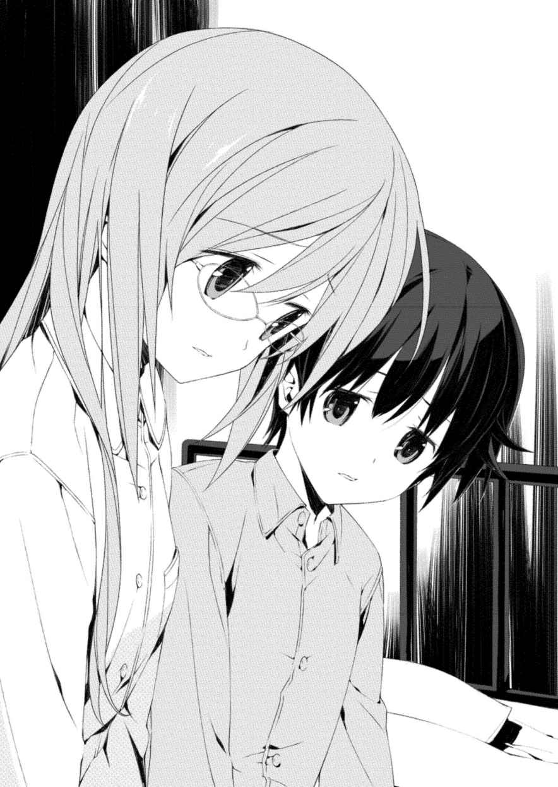
「......うん」
「探そうと思って何度も叫んだんだけど、みんな叫んでたから、よくわからなかったんだ。大人の背中が壁みたいに見えた。逃げなきゃって思ったら、お姉ちゃんが手を引っ張ってくれて。とにかく、人のいないとこへ行こうって、ずっと引っ張ってくれた」
すごいね、とうきが呟 くと結 人 は頷 いた。
被災した当時、結 衣 はまだ小学二年生で、結人に至ってはその翌年からようやく小学校に上がるという年齢だったのだ。
「僕、ずっと泣いちゃってて。でもお姉ちゃんは泣いてなかった。ずっと、見ちゃだめ、見ちゃだめって、歩きながら僕を守ってくれてた。......僕の代わりに、いろいろ見なきゃいけなかったんだ。僕を引っ張らなくちゃいけなかったから。僕は、泣いてただけで、なにもできなかったんだ」
「......大丈夫？」
結人は話しながら膝を抱えていた。うきは自然と結人に身を寄せ、肩を抱いた。結人は動かなかった。
「お姉ちゃんも僕も喉がカラカラになって、足が痛くてもう動けないって思ったときに、誰かに追いかけられたんだ。大人の、男の人たちだった。必死で逃げた。どこかの崩れそうな建物に入って、お姉ちゃんが初めて手を離そうとしたんだ。僕は離してほしくなくて泣こうとしたけど、喉が痛くて変な声しか出なかった。お姉ちゃんは、ここに隠れてなさいって何度も僕に言って、僕をドアが壊れた部屋の中に置いていった。そこは......暗くて」
結人の手に力が入っているのがわかった。うきは慌てて話すのをやめさせようとしたが、結人は肩を抱いているうきの手を握り返してきた。
「お姉ちゃんは走って逃げた。あいつらは、お姉ちゃんを追いかけて......。僕は、怖くて動けなかったんだ。何もできなかった。しばらくして、お姉ちゃんとあいつらの、声が聞こえてきて」
「ユウ、ごめん、もういいから」
「動けなかったんだ。きっと、すぐ近くにいたのに。何も見えない暗い部屋で、お姉ちゃんの、泣いてる声を、聞いてただけだったんだ」
うきは結人を振り向かせて、思い切り抱きしめた。結人が胸の中で泣きながら呻 くのが聞こえてきた。それでも力を緩められなかった。
「暗い所にいると、ときどきお姉ちゃんの声が聞こえる気がするんだ。お姉ちゃんは、僕を助けてくれたのに。僕は、何もできなかったんだ」
泣きながら話す結人を抱きしめるうち、いつの間にかうきも涙をこぼしていた。互いの寝巻きで涙を拭いながら、二人はしばらく動かなかった。
部屋の寒さを感じ、うきは自分と結 人 に布団を被 せて横になった。
結人は泣きながら、時折胸の中で「......お姉ちゃん」と囁 いていた。一度、なに、と返事をしてから、結 衣 のことを言っているのだとうきは気づいた。けれど結人は何も言わなかった。
「......お姉ちゃん」
「なに」
結人はずっと囁き続けた。うきも延々と返事をし続けた。
二人とも泣き疲れて眠るまで、抱きしめ合ってそうしていた。
抱きしめ続けた。
翌朝早くに泉 理 は帰ってきて、開口一番「どうしたのその顔」とうきと結人を見て驚いていた。
二人ともすっかり目が腫れ上がっていた。「なんでもないよ」と結人がうきに薄く微笑んできたので、うきは微笑み返して頷 いた。
泉理は「なに、お姉ちゃんには内緒？」と言いながらも、楽しげに笑ってそれ以上訊 いては来なかった。
うきが学校から帰宅し、小 森 も含めて全員で夕食の相談をしていると、訪問者があった。
「突然ごめんなさい。ちょっと、いい？」
玄関先で出迎えたうきは顔を見た瞬間に、あっと思い当たった。スーパーでときどき見かける主婦だった。いつだったか、小森が睨 み付 けるとそそくさと去っていった女性だ。
うきが驚いたまま立ち尽くしていると、主婦は「ちょっと、上がらせてもらっていい」と言いながら、了承も取らないまま玄関に上がり込んできた。小学生らしき男の子を一人、伴っていた。
「ちょ、ちょっと待ってください」
うきは二人をその場に押 し留 めて、二階へ泉理を呼びに行った。降りてきた泉理は、やはり見知った顔だったのか、主婦を見るなりわずかに眉を寄せた。
「なにか......？」
「ああ、あなたお姉さんよね。いえね、たいしたことじゃないんだけど、この子のことでね」
主婦は、後ろに隠すようにしていた小 洒落 た服の男の子を横に並ばせると、笑顔を浮かべた。男の子はあからさまに面倒くさい、という顔をしながらそっぽを向いていた。
「昨日ね、この子がふざけて投げた石が、ここの子に当たっちゃったって言うもんだからね」
あ、とうきは声を上げた。男の子の、小 洒落 た服装が目に入ってきた。
「......結 人 は、投げつけられたと言っていましたが」
泉 理 は距離を詰めるように一歩前へ出た。口調は穏やかだったが、手が握りこまれているのを、うきは見た。
「だから、ふざけててね。そうなんでしょ？」
男の子は申し訳程度に頷 いた。ポケットに手を突っ込んでいた。
「まあ子どものしたことだから、こうやって大人が出てくるのもどうかとは思うんだけどね。その、大ごとにしてもなんじゃない？」
「どういう意味でしょうか」
「だから、大ごとにしてもなんじゃないって」
「......はっきりおっしゃってくれますか」
すると、主婦は笑顔を消して泉理を睨みつけてきた。そこには明らかに侮 蔑 の色があった。
あんたたちのような立場の奴が何様だと、目が語っていた。
「あらそう。じゃあ言うけど、騒がないでくれるとありがたいんだけど」
「騒ぐ？」
「だから。病院で事情を話したり......その、そういうこと」
「要するに、石をぶつけられたことには目をつぶれとおっしゃりたいんですか」
「ぶつけてないわよ。遊んでいただけでしょ」
ふざけるな、と前に出ようとしたうきの身体を泉理が押 し留 めてきた。その手が震えていた。
泉理は深く息を吐いた。必死に感情を押し殺そうとしているようだった。
「......今回の件をどうこうするつもりはありません。ただ、結人くんに謝ってください」
「なんでよ。遊んでいただけじゃない」
「謝ってください」
繰り返す泉理に、主婦はぐっと顔を寄せた。
「あなたね。恥ずかしくないの、子どものしたことにむきになって」
「謝りなさい！」
怒声は唐突に、背後から響いた。
小 森 だった。結人の手を握り、ずんずんとやってきて主婦の眼前に立った。
「私はその場にいました。遊んでいたわけじゃありません。お子さんは明らかに、故意に結人くんに石を投げつけました。謝りなさい」
「......なによ大げさに」
「当たり所が悪ければ失明していてもおかしくなかった。謝りなさい！」
小 森 の剣幕に主婦はたじろいだ様子を見せたが、すぐに馬鹿にしたような笑いを浮かべた。
「あなた、ここの人なの。保育士さん？」
小森は頷 いた。
「大変ね、お仕事とはいえ。でもね、謝るとか謝らないとか、そんな大ごとじゃないのよ。故意にとか失明とか、熱くならないで」
わかるでしょ、と主婦は笑みを深めて、同意を求めるように小森の肩をぽんぽんと叩 いた。
「......そうですか。謝らないと」
「だから、そんなことじゃないのよ」
すると小森はため息をついて、うきたちのほうへ振り返った。
何かを確認するような目を向けられ、うきが何も返せないでいると、小森は「......あーあ」と言いながら頭をがりがりと搔 いた。
そして、主婦のほうに向き直った。
「では、謝罪がない場合、被害届を提出させていただきます」
「......は？」
「容疑は傷害。お子さんの名前と年齢、それからお宅の住所を教えてください」
「ちょ、ちょっとあなた何言ってるの」
「申し遅れましたが」
小森は上着のポケットに手を突っ込み、手帳を取り出して掲げた。
「警視庁生活安全部の小森といいます。少年犯罪などを担当している部です。いいですか、お子さんのやったことは、完全に犯罪行為です」
主婦は啞 然 として小森と掲げられた警察手帳を見ていたが、それはうきも同じだった。結 人 もあっけにとられて小森を見上げていた。
「疑うなら名刺を差し上げますから、そこの番号に問い合わせてくださって結構です。お子さんの名前と年齢、それからお宅の住所を」
「あ、謝って」
言い募る小森に、主婦は男の子の肩を小突いた。男の子は小森の態度と言葉に怖 気 づいたのか、すぐにポケットから手を出してぺこりと頭を下げ、「......ごめんなさい」と消え入るような声で言った。
「私じゃない。結人くんに謝りなさい」
「す、すみませんでした」
結人は下げられた頭に何も返せなかった。というより、あまりのことに混乱しているようだった。
男の子が頭を上げると、小 森 がいきなりその小 洒落 た服の胸倉を摑 み上 げ、力任せに引き寄せた。
「いいかクソガキ。顔は覚えたからな。次やったら、問答無用で牢 屋 にぶち込むぞ」
ぐつぐつと鍋が煮えたぎる音がリビングの炬 燵 の上に響いていた。
膝は大丈夫だからリビングで食事にしようと小森が言い出したきり、会話がなかった。ときどき泉 理 が思いついたように灰 汁 を掬 う以外、動きもなかった。
「えーと......ね。私は、その......」
気まずそうに小森がちらちらとうきたちを見てきたが、視線を合わせるたびに逸らされた。居心地が悪く、うきは結人を見たが、やはり居心地悪そうに見返されるだけだった。
やがて、煮え立ちすぎていると思ったのか泉理がカセットコンロの火を止めた。
そして、やれやれというように大仰に息を吐いた。
「小森歩 美 さん。二十八歳独身。警視庁の生活安全部所属で、埼玉の出身ですって」
え、と泉理以外の三人の声が重なった。
「短大で保育士の資格を取ったあと、上京して東京の保育園に就職。二十五歳のときに退職して、その年の内に警察官採用試験に合格。保育士としての資格と経験が買われて生活安全部に」
まるで書面を読み上げるようにつらつらと続ける泉理に、小森が顔をひきつらせた。
「ちょ、ちょっと、泉理ちゃん......？」
「青 葉 寮 に配属された目的は三つ。一つは保育士としての業務。一つは警察官として加害者家族の保護。最後の一つは......拓 留 の量刑を操作するためのネタを探るためですって。検察がいざ求刑するときに、どうとでもできるように」
「......無期懲役か......それ以上かってこと？」
弁護士を目指している結 人 が言った言葉に、泉理はわからない、と首を振った。
「簡単には判断できない事件だから。小森さんが家計簿のプリントアウトを持ち帰ったり、私たちの部屋を調べたり、父のことを探っていたりしたのは、そういうことみたい」
「だ、だだ漏れじゃん......」
小森は頭を抱えて呻 いた。
「......いつからばれてたの？」
「家探しや父のことは結人が一週間ほど前に気づきました。警察の方というのは二日前です。すみません、先日きな臭い電話が聞こえてしまったので調べてもらったんです。詳しいプロフィールや目的がわかったのは今朝のことです」
「......もしかして、渋谷署の神 成 さん？」
はい、と泉 理 は頷 いた。
神 成 は一連の事件の際に、うきたちが世話になった刑事だ。聞けば泉理は、レントゲン室で小 森 の電話を聞いた夜に神成に連絡を取り、小森のことを調べてくれないかと頼み込んだそうだ。ほどなく警視庁の人間であるということがわかり、追加の情報を昨夜病院に泊まった際に、居合わせた神成から受け取ったという。
「記者の人じゃなかったんだ......」
呆 然 と呟 く結 人 に、「そう見えてたの？」と小森はわずかに苦笑した。
泉理はそれを見て同じように口元を歪 めたあと、小森に向き直って言った。
「さて。小森さん。私は今言ったあなたのプロフィールを、今日の夜にあなたが帰ったあと、結人とうきに知らせて、あとは黙っておくつもりでした。私たちがあなたのことを知っていると、あなたに教えるつもりはなかった」
「......だろうね」
「話したのは、あなたが自分から警察の人間であると言ってくれたからです。どうしてですか？」
「あの親子に腹が立ったから。特にあの母親。見たあれ。あり得ないでしょ。なんなのあの態度」
即答した小森は、忌 々 しい、という感じに机を叩 いた。正体がバレたせいなのか、遠慮のない態度だった。うきと結人は驚き半分困り半分で、視線を泳がせた。
泉理は苦笑していた。
「小森さん、結構武闘派なんですって。カツアゲしてた少年たちを捕まえるときにやり過ぎちゃって、始末書を書いたこともあるみたい。二回ほど」
「なんでそんなことも知ってるの」
頰 を赤らめて小森は叫んだ。
怖さを感じたうきと結人は体重をずらして、バレないように小森から距離を取った。
「......それに。昨日、泉理ちゃん言ってたでしょ。大人になるってどういうことって」
「ええ」
「私は、考えたことなかったから、そういうの。......そんなあなたたちを見てたら、こそこそ正体を隠していろいろ探ってる年上の私はなんなのよって思っちゃったの」
「......そうですか」
自 棄 ぎみの小森の口調を聞いて泉理が笑ったのにつられ、うきと結人も笑顔を浮かべた。
「......この際だから訊 いちゃうんだけど。事件のことに関して何か知っていることはない？」
「取り調べで話した以上のことはありません」
「それは、うきちゃんも結 人 くんも同じ？」
二人は頷 いた。
「神 成 さんとあなたたちは、まだ何か知っていると上の人たちは見てる。神成さんにお会いしたことはないけど、私はあなたたちと過ごして、それは事実だろうなって思ってる。それでも、何も知らない？」
「知りません」
繰り返す泉 理 にうきたちも続いて頷いた。小 森 は真偽を測るように一人ひとりを見てきたが、うきたちが視線を逸らさずにいると、「......そっか。わかった」と諦めたように呟 いた。
すると泉理はカセットコンロの火をつけ直した。
「じゃあ、食べましょう」
「......え」
小森が驚いたように泉理を見た。
「いいの」
「何がですか」
「追い出さなくて」
「そんな決定権、私にはありません。保育士の資格、持ってらっしゃるんでしょう？」
「そうだけど......」
「それに、今日のことは本当に助かりました。正直、私も摑 みかかりそうでしたから」
話はおしまい、というように泉理はおたまを取り、小森の分の鍋をよそった。小森は、本当にいいの、というようにうきたちを見ていたが、やがてはにかんで泉理から取り皿を受け取った。
そのときふと、うきの中に考えが浮かんだ。
大事な決断であるはずのそれは、自然にまるで躊躇 いがなく口から出ていた。
「じゃあ小森さん、移動してください。そこ、ユウの指定席なので」
え、と三人がうきを見てきた。うきは結人を見返した。
「ユウ、いいよね？」
「うん」
訊 かれた結人も躊躇わなかった。
泉理の隣から足を抜いて、本来の自分の場所へ移動した。
追い出された小森は泉理の対面の席の前で立ち尽くしていた。
「姉さん、いいでしょ？」
驚いている泉理にうきが問いかけると、しばらく返事が返ってこなかったが、ややあって「まったく......」と呆 れたように微笑んで頷いた。
「やっぱり、昨日の夜なにかあったんでしょう」
泉 理 は本当に嬉 しそうに言った。小 森 はわけがわからない様子だったが、泉理に促されておとなしく席に着いた。
「なに、どういうこと？」
「小森さん。私よりうきのほうが、よっぽど大人なんですよ」
「......うそお」
それぞれ鍋をよそい、思い思いにつついた。
うきは三人の顔を見て、言った。
「今度の休み、みんなで上野の動物園に行ってみませんか」
突然の提案に三人は箸を止めた。
「......いいけど。あなた、パンダ好きだっけ？」
ううん、とうきは姉にかぶりを振った。
「ただ、行ってみたいの。行ったことがないから。そこがどんなところなのか、知っておきたいの」
それで当日は、夕方から雨が降ってしまったのですが、めぼしいところは全部回ることができました。じつは私も行ったことがなかったの。あなたは行ったことがある？ 一つアドバイスをしておくと、いくらパンダでも寝てるところを見せられたら、寝てるね以外の感想なんて出てこないから、パンダが見たかったら開園直後とかエサの時間に行ったほうがいいみたいです。あの子、一度もこっちを向いてくれなかったの。
結局いちばん印象に残ったのは、触ることができたウサギでした。わかってたことだけど、あの子、かわいいでしょう。最近、うきと結 人 が代わる代わる飼えないか聞いてきます。昨日なんて、ウサギがお尻についたシャープペンを二人とも持ってて、ちらちら見せてきたの。あれ、完璧に作戦立ててるのね。受けて立つつもりですが、正直私がいつまでもつか自信がありません。
嬉 しいニュースを一つ。
最近、結人が例の発作を起こしていません。完治したとはまだまだ言えない期間しか経っていないんだけれど、なんだか最近明るい気がするの。間違いなく、結人にとって良い兆候だと思います。
どうやらうきと何かあったらしいんだけれど、教えてくれません。隠し事はなしだって言ってるのに。まあ、だいたい想像はついているんだけどね。
二人を見ていたら、なんとなくあなたが家に来たときのことを思い出しました。
うきが姉であろうとがんばっているからかしらね。意識が戻っていないあなたを、私が世話していたあのときです。初めて爪を切ってあげたときの緊張は今も覚えてます。痛くないか、傷つけないか不安だった。そんなときは、姉なんだから長女なんだからと気張ってそれを打ち消してました。あなたにはなんのことか伝わるでしょうが、きっとそこには本当の自分を誤魔化す意味合いも少なからず含まれていたんでしょう。
ごめんね。私は、あなたを利用していた。
うきは、大丈夫です。私なんかよりよっぽど、ちゃんとした姉になってくれます。
あ、ついでだからこの際はっきりと書いてしまいますが。あなたあのときの話をするときに、いつもこの話題は避けていたんでしょうけれど、すみませんが排 泄 の処理もわたくしがしておりました。年頃の男の子としての心中はお察ししますが悪しからず。ご了承ください。
以前お知らせした小 森 さんについては、詳しいことは書けませんが大丈夫です。安心してください。少し喧 嘩 っ早 くて負けず嫌いなところがありますが、立派な保育士さんです。うきたちをしっかりと守ってくれると思います。
家のこととしては、小 森 さんにお任せしていた掃除と洗濯を、以前のように当番制に戻しました。小森さんの比重が重めのものなのですが、そうしないと私もうきも結 人 も、どうしても気持ちが悪くて。ご飯は相変わらず私が中心になって作っています。うきと張り合うように小森さんが料理を練習しているのだけれど、まだ時間がかかりそうです。二人に言わせれば我が家の食卓のハードルはとてつもなく高いそうなのですが、少なくとも小森さんに関しては私でなくともダメを出すと思います。ゆで卵を作ろうとして手を切るということが、私にはどうしても理解できません。あなた、わかる？
そうそう、炬 燵 ですが、結局有 村 でも香 月 でもなく、小森さんが座椅子を買ってきてしまいました。予想どおり、全員が居心地良さそうにしてしまって、なかなか炬燵から出ようとしません。このままだと春になっても片づけようとしないのは目に見えているので、口うるさく言っているんだけどね。
相変わらず寒い日が続いています。くれぐれも、風邪などひかないように。
また、手紙書きます。
草々
南 沢 泉 理
香 月 華 がその女子生徒に声をかけられたのは、休み時間に自分の教室で、携帯機のゲームに熱中しているときだった。
「あの、それ昨日発売されたやつですよね？」
赤い縁の大きな眼鏡と、胸まで伸ばしたストレートの黒髪が印象的な女子だった。見た顔であるような気もしたし、そうでない気もした。少なくとも同じクラスではなく、話したことは一度もないはずだった。
突然話しかけられたことに戸惑いつつも、華は頷 いた。確かにこのソフトは昨日発売されたものだった。
「あたしの行きつけのとこ、売り切れちゃってて。移植前と比べてロード時間とかＵＩ、どうなってます？」
「ん......ロード時間はほとんど変わってない。ＵＩも簡略化されてるけど、違和感はないかも」
ゲーマーか、と思いながら華は答えた。すると女子生徒はなるほどと頷いたあとに、急にぐっと顔を寄せてきた。
「私、隣のクラスの初 山 瑞 希 っていいます。すみません、ちょっと小耳に挟んじゃったんですけど、香月さんも〝エンスー２〟やってるんですか？」
放課後。
世間話のついでに初山とのことを華が喋 ると、雛 絵 はへえと頷 いて、実におもしろいことを聞いたとでもいうふうに机に身を乗り出した。
そして頰 杖 をついて華を観察するように見たあと、楽しそうな口調で言った。
「行ってくりゃいいじゃん」
いつもの部屋だった。元は新聞部の部室であったところだ。
「ニュージェネレーションの狂気の再来」の一件以来、新聞部は無期限で活動を休止していた。事件の犯人であるとされている拓 留 が部長を務めていたことからの措置であり、実質的な廃部であった。
生徒は何かしらの委員会活動や部活動に参加しなければならないと学校側が謳 っているため、本来であれば現在唯一専属で新聞部に所属している華は、別の部活動か委員会に参加しなければならないのだが、いまだ決めきれずに放課後になるとこの部室に足を向けていた。
「別に、こっちはただの買い物以下のぶらつき散歩なんだし。てか、せっかくのデートの誘いを断っちゃあ、女が廃 るぜ？」
「......デートじゃない」
「性別なんぞに囚われてるとは、まだまだ了見が狭いのお」
華 は初 山 から、明日いっしょに出かけないかと唐突な誘いを受けていた。出かけ先に指定されたのは恵 比 寿 にある漫画喫茶で、ペアパックという二人一組のプランで二人用の個室に入室すれば、中のマシンに入っている〝エンスー２〟で特典がつくというのだ。〝エンスー２〟は華が以前からプレイしているＭＭＯＲＰＧであり、初山もプレイヤーだという。
だが、明日は雛 絵 と出かける予定があったため断ったのだ。
「んん......。でも、レアドロアップＰＯＴは確かにおいしいかもだけど、どうせＰＴ組むんだろうからダイス振り負けたら意味ないし、ちょっと装備聞いたら脳筋極振りっぽかったから、バフ専持ってない私とじゃ相性悪いかもだし......。そもそも、最近ＩＮ率下がってるし」
「......華さんや、言うとる意味がお母さんにはさっぱりわかりませんよ」
「ひなは理解力なさすぎ。何回も説明したのに」
「覚える気がないって何回も説明したのにい」
雛絵は呆 れるように言ったあと、いい加減に座っていた姿勢を正して華に向き直った。
「てか、マジに行ってきたら？ こっちはほんといいから」
「でも......話したことない人だし」
「あんたと話したことある人なんていないじゃんか」
華はうっと言葉を詰まらせた。
自分の身に起こったことが原因で、華は中学の途中から、わずかな相 槌 以外はほぼ口を閉ざした生活を送っていた。口を閉ざす必要がなくなって以来、雛絵や泉 理 たちとは普通に会話をするようになっていたが、いまだにそれ以外のクラスメイトなどとはほとんど口がきけずにいた。そもそも高校に入って半年以上、同じクラスの連中とですら会話せずにいたのだ。いじめられていたわけではないが、はっきりと孤立しており、それは学校が再開されてからも同じだった。
「向こうから話しかけてくれたんだったら、チャンスだって。初 っ端 から漫画喫茶はどうかと思うけど、まあゲーマー仲間っていう括 りならありじゃないの？ 全然根拠ないけど」
「......ずいぶん勧めてくるね」
「かの偉人は言いました。『もっと友達を作らないと、この先ちゃんとやっていけないでしょう』」
「......誰それ」
「南 沢 泉理」
華はため息をついた。そういえば、言われた気がした。
「私も同意見。華、そろそろ友達作りなって。ある意味......じゃなくてそのまんま言葉どおり、この学校に通ってる奴らは運命共同体なんだから」
「それは......そうかもだけど」
華 は初 山 の顔を思い出してあいまいに頷 いた。
碧 朋 学園に通っている生徒は、高等部、中等部含めてすべてが元カオスチャイルド症候群者だ。いまだに入院している者や、症候群の影響で精神を深く病み、復学できていない者なども少なくないが、現在学校に通っている者は華たちと同様、症候群の症状に打ち勝ち、再び歩き始めた者たちだ。例外なく全員が症候群に対する偏見や誤解と日々戦いながら生活しており、その辛さはこの学校に通っている者でないとわからなかった。
「......ひなは、友達多いよね」
「社交辞令師範代の私を見くびってもらっては困るなあ。言っておくが、友達は作るものじゃなくてできるものなんていうのは、聞こえが良いだけの、ただの知り合いを友達にカウントしてる奴らの言い分だからな。そのでかい胸に刻んでおけ。友達は、作るもんです」
そういうもんかな、と華が顔をしかめると、そういうもんなのと雛 絵 は頷いた。
「まあ、華の親友ポジションは渡さんけどね」
「......親友？ ひなが？」
「......真顔で不思議そうにするのやめてくんない？」
ふてくされたような顔を見せたあと、雛絵は鞄 から一枚の紙を取り出して、華に手渡した。
「うちの部室に余ってたから」
白紙の入部及び入会届だった。雛絵は文芸部の部長を務めていた。
「まだ決めてないんでしょ？ 先輩は何も言わないけど、やっぱり結構先生たちからせっつかれてるみたいだし」
華は申し訳なさそうにわずかに頷いた。新聞部の副部長である泉 理 は、部員である華の新しい所属先を早く決めさせろと教師たちから言われているらしかった。が、華が泉理から早く決めなさいと言われたことは一度もない。一連の事件に関して新聞部で巻き起こった事情を泉理は誰より知っている。華が気軽に別の部活や委員会を選べないことを察しているようだった。
つまりは甘えてしまっているんだと華は思った。
泉理に対してはもちろんだが、またこうして学校に通い、自由に部活を選べるという一見当たり前だが貴重な状況を創り出してくれた、あの人に対しても。
「どこにも興味ないんだったら先輩の生徒会でもいいと思うし。当然、文芸部でも大歓迎だから」
「文芸部って活動してるの？」
学校が再開してからこっち、雛 絵 はほぼ毎日と言っていい頻度でこの部屋に顔を出しており、とても部活をやっているようには思えなかった。
「失礼な。ばたばたしてたときはともかく、今は週に二冊ペースで消化してんだぜ？ まあ、まったく書けてはないけど」
雛絵は鞄 から、どうやら現代小説らしきハードカバーを取り出して見せつけてきた。確かに先日持っていたものとは違っていた。読み切ったのだろう。
「とにかく、明日は行ってみなって。かの偉人は言いました。『賢い人々は常に最上の百科全書である』。その初 山 ちゃんがどんな子かは知らんけど、一人の友人との出会いが千冊の本の価値を超える場合だってあるのだよ」
文芸部がそれを言うかと、華 は呆 れた。
「それも泉 理 先輩？」
「いや、チェ・ゲバラ。あれ、ナポレオンだったかな。まあいい、とにかくどっかの国のどっかの革命家だ」
華が家に帰ってからなんとなく調べてみると、ゲーテだった。「あの言葉、ゲーテじゃん。革命家じゃないじゃん」と雛絵にメールを送ると、一分もしないうちに電話が鳴り、「ゲ、ゲーテだって革命家みたいなもんでしょうが。ゲーテのことなんてウェルテル以外なんも知らんけど。ぐらっしあ！」と一方的に怒鳴られて切れた。
確かにこのやかましい友人が与えてくれる気持ちは、どんな本を読んだとしても手に入らないだろうけどさあ、と華は思った。
翌日、華が初山に漫画喫茶に行けることを告げると、ひどく喜ばれた。
学校が終わったあと、一度家に帰って私服に着替えてから恵 比 寿 駅前に集合し、漫画喫茶へと向かった。道中、初山はかなり興奮した様子で〝エンスー２〟のことを華に語った。
プレイヤー歴はそれほど長くなく、三ヵ月程度ということだった。どうやら症候群のリハビリを終えて退院してから始めたらしい。華はほぼ相 槌 を打つだけだったが、ゲーム内のダンジョンやスキル効率の話題は楽しかった。〝エンスー２〟をプレイし始めたころ、華も同じようなことを思っていたからだ。
漫画喫茶は駅から歩いてすぐの、華が利用したことがないところだった。会員登録をするために学生証を提示し、コピーを取られる際に店員にちらりと顔を見られたが、いつものことだと華は受け流した。意外なことに初山も初めて利用するようで、同じように学生証を提示して会員登録を済ませていた。
ペアパックの個室は二つのマットが敷き詰められているフラットブースだった。友人同士やカップルが会話してもいいようにだろう、ドアは密閉されており壁も防音仕様のため多少の圧迫感があったが、十分な広さだった。
「......さすがですね」
二台置いてあるマシンのスペックを確かめようと、華 が電源を入れたときに初 山 が言った。
「......なにが？」
「いえ......あの、さっきの店員の。気にならないんですか？」
ああ、と華は頷 いた。碧 朋 学園の生徒だということが理由で、奇異の視線を向けられることには慣れていた。リハビリで入院中、飽きるほど経験したからだ。華が拓 留 と同じ部活動に所属していたということを、どこで調べてきたかは知らないがマスコミ連中は把握しており、病院の警備の隙間を搔 い潜 って事あるごとに華に質問をぶつけてきた。
「私は......いまいち慣れてなくて。というか、正直苦手で」
「......一回着替えたかったのは、それで？」
もちろん学校終わりに直接来たほうが早かったのだが、一度家に帰ってから集合したいと言い出したのは初山だった。
少し恥ずかしそうに頷いて初山は言った。
「碧朋の制服着てるだけで結構見られますから。でも考えてみれば、会員登録するなら同じでしたね」
マシンのスペックは、ネットゲームのキャンペーンを行っている個室だけあって十分なものだった。並んで〝エンスー２〟の画面に向かうと、なにか妙なくすぐったさを華は感じた。
隣同士で同じＭＭＯＲＰＧをプレイするという状況もそうだが、考えてみればゲーム内はともかくリアルでのゲーマーの知り合いというのは初山が初めてだった。
慣れているはずの沈黙がなぜか嫌で、華は初めて自分から話しかけた。
「......そ、そういえば、どこで私が〝エンスー２〟やってるって聞いたの？」
声が震えた。なんで今になって緊張しているんだろう、と華は思った。
「あ、ごめんなさい。この前廊下で、生徒会長と香 月 さんが話しているの聞いちゃって」
「あ、ああ......。言われたかも」
生徒会長とは泉 理 のことだ。ゲームばっかりやってないで、という類いのことは何回言われたかわからないくらいに言われていた。
「えっと......初山さんは、メインクエはどこまで」
「あ、深緑の大迷路です」
現状解放されているストーリーにおいて、中盤から終盤にかけてのクエストだった。華はかなり前にクリアしたところであり、メインキャラクターとは別に育てているサブキャラクター四人も、全員がクリアしてしまっているところだった。
そのことを伝えると、初 山 はしばらく悩んだあとに言った。
「あの、じゃあ......。もし香 月 さんがよかったらなんですけど、最初からやりませんか」
「え」
「それぞれもう一人ずつキャラ作って。レベル１から」
「......そ、そうだね。バランス考えるとそれがいいかも」
緊張してバランスなど考えられないままに、ぎこちなく華 が答えると、初山は嬉 しそうに笑った。
キャラクターメイキングを済ませ、最初から進めた〝エンスー２〟は華にとって思いのほか新鮮だった。すでに見慣れたどころか見飽きたマップやストーリー、敵キャラクターであっても、固定の二人パーティで進めるのは初めてだった。初山の操作感覚はヘビーユーザーの華から見ても悪いものではなく、今までチャットのみで行ってきたゲーム内のコミュニケーションを、直接喋 ってこなすのも反応が早くおもしろかった。
プレイしている最中、初山はいろいろなことを華に訊 いてきた。〝エンスー２〟のことや、それ以外のゲームのこと、華のクラスのこと。最初は緊張が解けなかった華も、言葉を返すうちに口が慣れてくるのが自分でわかった。
それは、思い出す作業と感覚が似ていた。まだ華が普通に喋っていたころ、まわりの人たちと同じように、なんでもない友人となんでもない会話をしていた。華が口を閉ざした理由を含めて、事件のすべてを知っている雛 絵 や泉 理 たちとは違う、以前の華のまわりにいた友人と同じ距離にいるだろう人との会話。そういえばこんな感じだったかな、とどこか他人事のように考えてしまう自分に心中で苦笑しながらも、華はその時間を懐かしんだ。
「香月さんて、中学時代は何か部活やってたんですか？」
それは不意打ちだった。
華は言葉に詰まった。動揺を悟られないように、華は答えた。
「......剣道部かも」
「......かも？」
「あ、ううん。......剣道部。一年経たないで辞めちゃったけど」
意外です、と言う初山の声は意味を持たずに響いただけだった。華は必死に画面を見つめていた。
思い出されるのは中学時代に、いっしょに剣道部に所属していた同学年の友人のことだった。仲が良かった。姉妹のようだった。同じ部活に入ったことをきっかけにして、クラスは違ったがいつもいっしょにいた。
だが、その友人と友人の家族は壊れた。友人の父は自殺し、母は薬物に染まり、姉は行方知れずになり、そして友人本人はそのことに精神が保てなかった。他ならない華の声が持ってしまった理不尽な力が原因だった。それより以前から華 は漠然と自分の声のおかしさに勘付いてはいたが、気のせいであり偶然だと自分の予感を押し殺していた。
その甘さが招いた結果に、華は自分の口を閉じた。部活を辞め、自然とまわりからいなくなっていくクラスメイトや知り合いの決断を文字どおり黙って受け入れた。
「あたし、どうすればいいの......？」
最後に会ったとき、友人は華にそう言った。無表情だった。涙は流さず眼球は乾いていた。けれどその友人の一言は、泣き叫ばれるよりも華にとって痛いものだった。華は何も喋 れなかった。
口を閉ざすと決めたからではなかった。謝罪の言葉や励ましの言葉くらいなら、自分で決めた制約を破ってでも彼女に投げかけてあげたかった。しかし華の口は動かなかった。その度胸も、かける言葉もなかった。
華はその友人に何もしてやれなかった。
「香 月 さん？」
プレイの手を止めて初 山 が覗 き込んできていた。華は誤魔化すようにマウスを動かした。
「......初山さんは、部活なにやってたの」
「テニス部です。今もそうなんですけど。......学校が再開してからは幽霊で」
意外だ、と華は思って初山を見た。インドア派だと思っていたのだ。
顔に出ていたのか、初山は苦笑した。
「運動部の人、結構私みたいに幽霊になってるの多いですよ。先生方からはむしろ今だから前以上に運動しろって言われますけど。やっぱり......その、前みたいにはなかなか、いろいろ......」
華は頷 いた。言葉にならなくても訴えたい気持ちは、碧 朋 の生徒なら誰でも持っているものだ。
華は切り替えるように手を動かし、派手に敵ＭＯＢを屠 っていった。
「......みんな、いろいろあるよね」
苦しんでいるのは自分だけではない。隣にいるのは、雛 絵 の言葉を借りれば運命共同体である人だ。
結局その日は、高校生が利用して良い時間である午後十時まで二人は漫画喫茶にいた。出ていくとき、初山が店員と会話したくなさそうだったので、華があらかじめ初山からお金を受け取り、まとめて会計を済ませた。
別れるとき、自然に華は言った。
「あの、敬語いらないかも。......同学年なんだし」
一瞬呆 然 とした初山は、すぐに微笑んだ。
「じゃあ、私のことは瑞 希 で」
「......え？」
「名前。初 山 瑞希」
華 が頷 いて、「華で」と言うと、初山は笑った。
一人で家に帰っている途中で、華は結局ペアパックの特典であるレアアイテムのドロップ率が上がるアイテムを使っていなかったことに気づいた。
まあどうでもいいか、と華はどうやら興奮しているらしい自分の足をさらに速めた。
その日の昼休みの部屋は、いつもと違って静かだった。
華と雛 絵 は購買で買ってきたパンやおにぎりをつまんでおり、泉 理 は自前の弁当を食べていた。学校が再開されて以来、元新聞部の部室におけるこの面 子 での昼食が日常になっていた。
様子がおかしいのは雛絵だった。いつものように喋 り倒しておらず、泉理のおかずの一つを失敬することもなかった。ただ、時折ちらちらと華を見ていた。
いつまで経っても雛絵が言い出さないので、華は耐えかねて聞いた。
「......なに？」
「ん？ 別に？」
なんでもないように雛絵が答え、沈黙がおりた。別にじゃないだろうと華は訝 しんだが、食べ終えた雛絵はそれに構わず文庫本を広げ始めた。
すると泉理が苦笑いを浮かべた。
「この子、嫉妬してるのよ」
「そ、そんなんじゃないですよ」
わずかに慌てた雛絵が本を置いた。泉理はいたずらっ子のように笑みを深めた。
「昨日初山さんのお家にお邪魔したって、今朝言っていたでしょう？」
華は頷いた。
「そのことをさっき有 村 に教えたら珍しく黙っちゃって」
「だってさあ」
雛絵は座っていた椅子から転がるように泉理の元に向かい、泣きついた。
「たかだか一週間ちょいですよ、華が初山ちゃんと話すようになって。なのにさあ、お宅訪問とかさあ、私の家にだって来てくれたことないのにさあ」
「......あなた家の人と折り合い悪いから、私たちを家には呼びたくないって言っていたでしょう」
「前よりは話してますもん」
「じゃあ呼べばいいでしょう」
「そこまでは話せてないですもん」
どっちなのと泉 理 は呆 れながら、首に抱き着いている雛 絵 の頭を撫 でた。そして華 を見て「気にしなくていいから」とこぼした。
「はい。別に気にしてませんけど......」
「気にしてよお」
雛絵は噓 泣きまで始めてさらに泉理をきつく抱きしめた。はいはいと受け流す泉理を見て、いつもの空気に華は少し頰 を緩めた。
初めて漫画喫茶にいっしょに行って以来、華は放課後に初 山 とよく遊ぶようになっていた。さすがに毎回漫画喫茶を利用するほどの小遣いはないため、漫画喫茶にはあれから一回しか行っていないが、ファーストフード店で携帯機のゲームをしたり、単純にお茶をしたりするようになった。昨日は初山の提案で部屋に招かれ、ひたすらに駄 弁 った。
「で、実際どんな子なの？ 初山さん」
泉理はおいおいと泣き真似を続ける雛絵を引きはがし、椅子に座らせながら言った。
「んん......不思議な子、かもです」
「どういうこと？」
怪 訝 な顔をした泉理に、華はなんと言っていいものか迷った。
最初に漫画喫茶に行ったときは、単純にゲーマーなんだろうなと思っていた。だがここ一週間ほど遊んでみて、どうやらそうではないという感想を華は持っていた。華が考えるゲーマーとは、好きなことの一つにゲームがある人ではなく、ゲームがいちばん好きな人のことだ。初山と喋 っていると、ゲーム以外にもいろいろなことに興味があることが伝わってきた。幽霊部員になる前はずいぶんテニスに入れ込んでいたようだし、結構本も読んでいるようだった。
どことなく、なにかちぐはぐな印象を受けるのだ。華が言い出すまで同学年の華に敬語を使っていたのに、突然初対面の人間を漫画喫茶に誘う行動力であったり、ゲームをそのきっかけにしていたのに、そこまでゲームにこだわりがあるようには見えなかったりする。知り合って一週間で自分の部屋に招くというのは距離の詰めかたとして早いかどうかはわからないが、少なくとも自分から言い出すあたり積極的なのだろうとは思った。しかし碧 朋 の生徒に対する偏見の目に対して必要以上におどおどと怯 えているような気もした。
「まあ......いろいろ。でも、いっしょにいて楽しいです」
それは事実だった。普通の友人との普通の会話に対する郷愁もあるのだろうが、華は初山との会話を楽しんでいた。
「その、拓 留 先輩のこと、悪く言ったことがないんです」
「......あら」
驚いたのか泉 理 は眉を上げた。
「そりゃあ......なかなか奇特な子じゃないかい」
演技を続けていた雛 絵 もぴたりと泣き止み、感心したように言った。華 は頷 いた。
今の碧 朋 学園において、正確にはカオスチャイルド症候群を発症した者の間において、拓 留 に対して良い印象を持っている者はほとんどいなかった。逆に恨みに近い感情を持っている者は大勢いた。症候群者であった拓留が引き起こしたとされている事件の影響が、症候群に対する偏見の目を助長させているためだ。症候群だった者は暴力的衝動を抱えている、症候群だった者は一度キレると何をするかわからない、そういった確定した証拠が何もない事実が、週刊誌やネットでは大層な論客までをゲストに迎えて大真面目に議論されていた。
しかし華は、あれだけ偏見の目に対して過敏である初 山 が、拓留を非難するようなことを言っているのを一度も聞いたことがなかった。
予鈴が鳴り、昼休みが終わった。三人は机の上を片づけ、席を立った。
「であれば......仕方ないか。業 腹 だが親交を認めようじゃないか。今週末、洋服冷やかしとカフェに連れ回すつもりだったけど、初山某 と遠慮なく遊んでよろしい」
「ん、漫画喫茶に行く」
「え、まじで予定あるの？」
意外だったのか雛絵は目を見開いた。そして「私の身体だけが目当てだったのか畜生」と捨 て台詞 を吐いて部屋を出ていった。
少しの居心地の悪さを感じて、華は助けを求めるように泉理を見た。泉理は大丈夫、と微笑んだ。
「気にしないで。ドア閉める瞬間、笑ってたから。まあ、少し寂しいのは私もだけど」
放課後この部屋にやってきて、三人で喋 っていくのも日常だった。華が初山と遊ぶようになったこの一週間ほど、確かに三人でいる時間は減っていた。
「......すみません」
「香 月 、それは違うからね」
突然、泉理は真面目な表情を浮かべた。
「謝ることじゃないの。それは間違えちゃだめ。友達、大事にしなさい」
「......はい」
華が頷くと、泉理はまた微笑んだ。
早く部活を決めないといけないなと、華は思った。
初山が焦った様子で漫画喫茶の個室に戻ってきたのは、ダンジョンにもう一潜りしたら初山の部屋に河 岸 を変えようかと話をまとめた直後だった。
ドリンクバーにジュースを取りに行った初 山 は、ひどく切羽詰まった顔をしていた。こぼしたのだろう、薄桃色のブラウスの袖にオレンジジュース色の染みを作っていた。
「......撮られた」
そう呟 くと、持っていたジュースを机に置いて、個室のいちばん隅に移動し、背中をぴったりと防音の壁につけた。そして、個室の入り口のドアに焦点を合わせたまま動かなくなった。
「......写真？」
華 が訊 ねると、初山は頷 いた。「......スマホで。女の客。こっち見てた」と続ける声が震えていた。確認しようと華が個室を出ようとすると、その手を摑 まれた。
「やめて」
でも、と華が言うと、「お願いだから」と初山は訴えた。華は寄り添うように初山の隣に座った。
防音がしっかりしているところのため、外の音は聞こえなかった。それでも華と初山は耳をそばだてるようにしてじっとしていた。
しばらくして、初山はごめんとこぼした。ううんと華が言うと、初山は強がっていることを隠そうともしない笑顔を浮かべた。
「......やっぱり、華はさすがだね」
「そんなことない」
ただ、慣れているだけだ。華は距離を詰めて、腕同士が触れ合うように身体を傾けた。初山は微笑んで、それを押し返してきた。
「さすが、宮 代 さんのやってた部活の部員だけあるね」
え、と華は驚いて初山を見た。すると初山は照れたように笑った。
「私、じつは宮代さんのファンなんだ。あんな事件を起こすって、すごくない？」
華は言葉を失った。
「ね、やっぱりもう私の部屋行かない？ じつはいろいろ聞きたいことがあるんだ」
楽しげな初山の声に、華は返事もせず頷きもしなかった。が、初山はそれを肯定と取ったようだった。
会計の際、初山は華の後ろに身を隠すようにしていた。
店を出た二人は、駅に向かって歩いた。何も返事をしない華に初山は喋 り続けた。
「自分の病気のことがわかる前は、悪いけど新聞部ってあることも知らなかったんだ。けど宮代さんが捕まって、みんなあんなことになって、病院に運ばれて、病気のことがわかってさ」
駅のホームに着くとアナウンスが聞こえてきた。華はわざとそれに耳を傾けて初山の声を締め出そうとした。しかし初山の声は搔 い潜 るように頭に飛び込んできた。
電車に乗っても初 山 は口を閉じなかった。
「自分の顔を見たとき、ショックで動けなかった。映画とかでよくあるじゃん、これは夢だって自問自答するやつ。噓 くさいなっていつも思ってたけど、あのときは本気でそう思った。まじ意味わかんなくて。いつも死ね死ね言ってた気がする。リハビリすれば大丈夫とか言ってくる綺 麗 な顔した看護師とか、私たち全員を放っておいた連中とか、ほんと死ねって思った。どうせ陰では笑ってるくせに」
初山は興奮していた。いつもより早口で、そしてどこか嬉 しそうだった。
「でね、病気のこといろいろ調べたんだ。なんでこんなことになっちゃってるのか気になったから。でも全然わかんなかった。なんか噓っぽい学説とか適当なゴシップばっかで。だけど事件のことは結構いろいろ取り上げられててさ。私思うんだけど、宮 代 さんってじつは自分だけ病気のこと気づいてたんじゃないかな」
電車が渋谷に着き、人ごみに押されるようにして駅を出た。
渋谷の駅前、スクランブル交差点の信号待ちで足が止まった。まわりには人が溢 れていた。今まで初山は学校の外でそばに他人がいるときに、症候群に関することなどはけっして話さなかった。しかし今は違っていた。
「殺されたのって、症候群の人ばっかじゃん。しかもあんな派手な方法で。あれって宮代さんからの警告みたいな感じだったんじゃないかな。症候群の連中は目を覚ませっていう。そうじゃなきゃあんなに注目されるような方法、とるわけないじゃん。もしかして、死体だったら症候群者の目にも現実が映る、とか考えてたのかな。華 、宮代さんが捕まる前になにか聞いてなかったの？」
信号が変わって動き出したとき、華の目に見慣れた姿が飛び込んできた。
雛 絵 だった。泉 理 とうき、それから結 人 もいた。四人で楽しそうに何かを話しながら、駆け出せば五秒とかからない距離を横断していた。笑顔を浮かべていた。雛絵は今日、華を服屋とカフェに連れていくつもりだったと言っていた。その代わりに青 葉 寮 の面々を誘ったのだろう。
四人はお互いを見ていた。華には気づいていなかった。
「同じ施設に住んでる女の子まで殺したじゃん。すごくない？ まあ、それに関しては実行犯は伊 藤 さんで宮代さんは教 唆 ってことになってるけどさ。あ、てか私、伊藤さんのファンでもあるんだよね。ねえ、もしかして伊藤さんも自分の姿に気づいてたのかな。だとしたら、二人で症候群者の目を覚まそうとしてたんじゃない？」
「瑞 希 、ごめん」
横断歩道を渡り切ったところで華は遮った。
限界だった。
「......ちょっと、急用かも。瑞希の家には行けない」
返事も聞かずに華 は走り出した。初 山 が何かを言っていたが無視した。声はすぐに雑踏に紛れて聞こえなくなった。
一度渡った横断歩道を戻り切ったところで、華は自分が雛 絵 たちを追っていることに気づいた。撃たれたように足を止めた。
四人の姿は見えなかった。先ほど雛絵たちはお互いを見つめていた。事件に関して何もかもを共有した仲間といっしょに歩いていた。
自分の隣にいたのは誰だった、と華は思った。
震えるほどの罪悪感と怒りが混じったような感情が、自分の中に浮かび上がってくるのを華は感じた。なぜか泣きたくなり、そこから逃げるように華は再び走り出した。
雛絵たちのほうではなく、初山のほうではなく、とにかく人ごみに紛れたかった。
放課後、いつもの部屋のドアがノックされると同時に、声が聞こえてきた。
「あの、すみません」
華は素早く立ち上がって、本棚の陰に身を隠した。
それを見た雛絵はため息をついてからドアに向かった。
「はいはい」
ドアを開けると初山が立っていた。雛絵を見て戸惑っているようだった。
「あの、私、初山といいます。ええと、華......さんは？」
「あー、今日はもう帰ったみたい」
「あ、そうですか......」
初山はしばらく考え込んだあと、「じゃあ、もし会ったら初山が来たって伝えておいてもらえますか」と雛絵に言付けて、帰っていった。
ドアが閉まり、足音が遠ざかってから振り向いた雛絵は、少し呆 れた表情をしていた。
「......だってさ、華」
華はとぼとぼと本棚の陰から出た。椅子に座り、机にどかんと頭を押し付けた。
「いつまでも続かないでしょう、こんなこと」
「んん......。すみません......」
どうやら生徒会の業務らしい書類仕事をこなしながら、困ったように言う泉 理 に華は呻 いた。まさか、この部屋までやってくるとは思わなかった。
週末に一方的に解散してから数日、華は初山を避け続けていた。ＲＩＮＥやメールには応じず、着信も無視した。休み時間はトイレやこの部屋に逃げ込んで顔を合わせないようにし、登校時に校門で待たれると、裏門から入ったり、わざわざ遅刻したりした。
「いい加減吐きなって。お袋さんが泣いてるぞ。なんで彼女から逃げてんの？」
詰め寄ってくる雛絵に、華は顔を上げないまま首を振った。
「......カツ丼取る？ それともするめ？」
「ちょっと、からかわないの」
「だって教えてくれないんですもん」
言えるわけがない、と華 は思った。いっしょにいて楽しいと言ってしまった自分が恥ずかしかった。そしてそれ以上に、雛 絵 たちを傷つけたくなかった。初 山 が拓 留 の悪口を言わなかった理由が、あんなことだと知れば傷つくに決まっていた。
「あんな事件を起こすって、すごくない？」
初山の言葉が不愉快な虫の羽音のように、華の頭にへばりついていた。
一般的に広がっている事件の情報から、世間が拓留を冷酷な殺人鬼であると断じる空気には慣れていた。そしてそれとは逆に、稀 代 のシリアルキラーであり神であると主張する連中も見飽きていた。それらには揺さぶられることがなかった。華は他の仲間たちとともに、事件の真実を知っていた。それを知らない人たちが何を言おうと、愚かであり暇なんだなとしか思わなかった。
しかし華と同じように症候群の苦しみを知っている人間からの言葉は、少なからず華の気持ちに入り込んできた。しかも初山は歪 んだイメージを持っていた。それならまだ、匿名の批評で主役を気取っている無責任なネットの連中と同じように、拓留を面白半分に持ち上げることを言ってくれたほうが良かった。であればまだそれらとともに一緒くたにして、遠くに置くことができた。
「あれって宮 代 さんからの警告みたいな感じだったんじゃないかな。症候群の連中は目を覚ませっていう」
違うと怒鳴りたかった。しかし真実を告げるわけにはいかなかった。
あのとき初山は興奮していた。なるほどな、と華は今になって思った。
おそらく初山は、最初から拓留のことが聞きたくて近づいてきたのだ。もしかしたら、〝エンスー２〟を始めたのもそれが理由かもしれなかった。想像どおりおそらくゲーマーなどではないのだろう。ずっと感じていたちぐはぐな印象も、それで腑 に落ちた気がした。
「香 月 。私が言ったこと、気にしてる？」
泉 理 の声に華は顔を上げた。なんのことだろう、と華は眉を寄せた。
「友達、大事にしなさいって。無理にとは言わないからね」
「あ、いえ......そういうんじゃないんです。ただ......」
香月は慌ててかぶりを振った。しかし、言葉が続かなかった。
「なに？」
促してくる泉理を見て、本当に、ただなんなのだろうと華は思った。泉理の言うとおり、こんなことがいつまでも続くはずはなかった。初山は先日のことを聞きたいのだろう。けれど本当のことを説明することはできない。適当な噓 を言ったとして、それで結局そのあと、どうすれば良いのか華 にはわからなかった。
あんなことを間近で言われ、それを黙って聞き続けることなど無理だった。しかしそれではいつまで経っても同じままだ。
「あの......泉 理 先輩たちは、どうやって折り合いつけてるんですか。その......学校の友達たちと」
学校が再開されてから、雛 絵 はもちろん、泉理も相変わらず生徒会長として多くの人間と付き合っているのを華は見てきた。
「折り合いって、何に対して？」と、雛絵。
「んん......事件のこととか。その、拓 留 先輩のこととか」
二人は少しの間、顔を見合わせてから華に視線を戻した。
「折り合いついてるわけないじゃん。ムカついてるよ」
「......ムカつくは言い過ぎだと思うけど」
はっきりと答えた雛絵に泉理は苦笑した。
「本当のことが言えない以上、それはどうしようもないことでしょう」
「......意外です」
華はてっきり、二人は何もかも飲み込んだうえで付き合っているものだと思っていた。
「なんだ、やっぱり宮 代 先輩のことかい。なに、ムカつくことでも言われた？」
「ん......」
雛絵が訊 いてきたことを頭の中で転がしたあと、華はその直接的な罵倒が案外的を射ている気がして頷 いた。
「......そうかも」
自分はムカついていたのかもしれない。あんなことを思っている初 山 に対してはもちろん、真実を大声でひけらかすことができない状況にも、言われるままであった自分にも。
悔しいな、と華は思った。
華は再び雛絵たちと過ごすようになった。
放課後にいつもの部屋に顔を出し、三人で過ごし、途中泉理が生徒会の仕事で抜け、それが終わるのを待ってからいっしょに帰宅した。週末には以前雛絵が言っていた服屋とカフェへ行き、その帰りに青 葉 寮 に寄って、夕食をご馳 走 になった。
雛絵も泉理も、初山のことは聞いてこなかった。華が言い出すのを待っているような雰囲気はあったが、何も言わなかった。ただ以前と同じように過ごし出した華のことを、受け入れてくれていた。
また当の初山も、華の前に現れなくなった。校門で待たれていない日が数日続き、華が試しに休み時間にどこにも行かずに自分の教室にいたところ、初 山 はやってこなかった。意識していないとそんなものなのだろうか、廊下でもすれ違わなかった。
勝手なもので、安心すると同時に、残念ではないがどこか拍子抜けしたような気持ちになった自分に、華 は少し呆 れた。
また華は休み時間に自分の教室で携帯機のゲームをするようになった。華に話しかけてくる者はいなかった。華のクラスメイトは、近ごろ華が休み時間によくいなくなっていたことにも気がついていないようだった。いつもと同じように日常が流れていた。そんなもんか、と華は思った。
その日の放課後、華は雛 絵 と泉 理 といっしょに、いつもの部屋で明日の祝日に観 る映画について議論していた。
華はアクション映画が観たかったのだが、雛絵は相変わらず静かな映画が好みのようで、解説文からして小難しいことが書いてあるドイツの社会派映画を推していた。泉理はどちらかと言えばわかりやすいハリウッドものが好みのようだったが、今回も執 拗 に朝一で上映している作品を推していた。華たちがよく利用するいきつけの映画館が、朝一だと値段が安いのだ。
話し合いがことのほか紛糾し、「先輩と華は映画の観 方 がわかってない！」と叫んだ雛絵に対して、泉理が朝一でやっている子ども向けのアニメーション映画に、いかに華が望んでいるアクション要素や雛絵を満足させ得る脚本の密度が含まれているかということを、多少苦し紛れになりながらも熱弁している最中に、ドアがノックされた。
「あの、すみません」
一瞬、華は腰を浮かしかけたが、その声は初山のものではなかった。
雛絵と泉理を見たが、二人にも心当たりはないようだった。華は静かにドアを開けた。
「あ、香 月 さん......だよね」
一人の女子生徒が立っていた。健康的に日焼けしており、学園指定のジャージに身を包んでいた。
そうですけど、と華が返すと、女子生徒は部屋の中を覗 き込み、雛絵たちの姿を確認した。そして、「ごめん、ちょっと二人だけで」と言って、華の手を摑 んで部屋の外へと引っ張り出した。
「あ、あの......？」
「ごめん、あたし、みずのテニス部の友達。あ、瑞 希 ね。知ってるでしょ？」
ぎくりとしながらも華は頷 いた。
「あのさ、最近みずから連絡とかってあった？」
「......いいえ」
一時は毎日来ていた着信やメールも、まったくなかった。
「......そっか。やっぱり。ねえ、香 月 さんって最近みずとよく遊んでたでしょ？」
「ん......まあ......」
「そのときに、なにか変わった様子とかってなかった？」
「......特には」
少し考えてから華 は答えた。どういったところがふだんと違っているかを、はっきりと明言できるほど長い付き合いをしていたわけではなかった。けれど目に見えておかしいところはなかったはずだ。
「なにかあったんですか」
「......学校、来てないんだよ、みず。連絡もつかないし」
心配そうに顔を歪 めてその女子生徒は答えた。
「え......いつから」
「一週間くらい前から」
ちょうど、初 山 が華の前に現れなくなったころだった。華はあっけにとられた。
「何か知ってるの？」
華の様子に女子生徒が勢い込んで訊 いてきたが、事情を説明しようにも、上手く説明できる自信がなかった。そもそも、自分とのことが原因かどうかも怪しかった。
「......いえ。ちょっと、驚いただけ」
違うだろう、と華は自分を落ち着けるように息を吐いた。先日の漫画喫茶での一件が原因であるなら、その直後から不登校になっているはずだ。そのあとも初山は学校に通い、校門で待っていたり、ここに来たりしていた。確かに避け続けてはしまったが、まさかそのことで学校に来なくなったとも思えなかった。
女子生徒はなにか華から聞き出せないか待っていたようだったが、華が何も告げずにいると、スマホを取り出した。
「あの、じゃあ念のため番号交換してもらっていい？ もしみずから連絡があったりしたら知らせてほしいんだ」
華は頷 き、スマホの番号を交換した。同じ一年生だった。初山ともクラスは違っており、純粋な部活仲間ということだった。「まあ、学校が再開してからはほとんど部活には来てくれてないんだけどさ」と、女子生徒は仕方なさげに笑った。
「じゃ、こっちも連絡あったら知らせるから」
去り際、女子生徒が言ったことに、華はぽかんとした。すると女子生徒はそれが意外だという顔をした。
「友達なんでしょ？」
華は言葉に詰まった。自分の気持ちがよくわからないまま、「......ん」とかろうじて返事をした。否定も肯定もできなかった。
部屋に戻ると、雛 絵 と泉 理 が心配そうに華 を見てきた。
なんでもないです、と華が言うと、「なんでもないっていう顔はしてないでしょう」と泉理が表情を険しくした。華はなんでもないと繰り返した。余計な心配をかけたくなかった。
それでも二人はしばらく華を見ていた。華は目を合わせなかった。ややあって雛絵が手を打ち鳴らした。
「......わかった。でも、言いたくなったら必ず言うこと」
華は申し訳程度に頷 いた。泉理は納得していないようだったが、やがて諦めたように息を吐いた。
「こちらは議題がまとまりました。明日はドイツ映画に決まりです」と雛絵。
「待ちなさい。まだ私は了解してないでしょう」
「仕方ないので最終手段を行使します。本当は料金が高い３Ｄ映画などに取っておこうと思いましたが、この割引券があれば朝一と同じ値段で観 ることができます」
「ならドイツ映画にしましょう。高校生が三人揃 って子ども向けアニメを観 るのはどうかと思うもの」
「......先輩、一家を支えている大黒柱としての事情はわかりますけど、もう少し申し訳なさそうに掌返したらどうなんですか」
言い合う二人の隣に座りながらも、華はどこか遠くでその会話を聞いていた。
廊下で言われた、「友達なんでしょ？」という一言が頭を離れなかった。
家に帰ってから華はスマホの画面に初 山 の番号を表示した。長い間睨 みつけたが、当然何も変わらなかった。結局かけなかった。
祝日の昼過ぎ、映画館のロビーは混んでいた。
道 玄 坂 のホテル街のそばにある映画館だった。インディーズ系の作品に力を入れているミニシアターだ。
上映の三十分前に華たちは着いていた。雛絵が上映前にパンフレットを熟読するタイプだからだった。壁に寄りかかりながら黙々と読んでいる雛絵の横で、華は上の空で行き交う人を眺めていた。
「大丈夫？」
問いかけてきた泉理に華は頷いた。泉理が心配してくれているのはわかっていた。けれどどうしようもないことだった。もやもやしている気持ちがなんなのか、それをどうすれば良いのか、華にはわからなかった。
上映十分前になって開場し、劇場内に入ろうとしたときに華のスマホが鳴った。
表示されたのは、昨日番号を交換したばかりの、あの女子生徒の名前だった。
「もしもし、香 月 さん？ ちょっと訊 きたいことあるんだけど」
「え......今は、ちょっと」
「もしかしてみずとさ、漫画喫茶行った？」
華 の言うことに構わず、女子生徒は言い募ってきた。その声が焦っていることを感じ取り、華は「行った」と答えた。
「たぶんだけど、ツイぽにそのときの画像が貼られてる」
「......え？」
「よくわかんないんだけど、なんか拡散してるみたいで」
「どういうこと」
だからわかんないんだよ、と女子生徒は繰り返した。声が遠くなったり近くなったりしていた。どうやらスマホを操作しているらしかった。
「......香月さんも、ちょっと写ってる。これ、学生証の写真じゃないかな」
華は息を吞 んだ。様子がおかしいことに気づいたのか、雛 絵 と泉 理 が怪 訝 そうに視線を向けてきた。
画像がＳＮＳに貼られている。漫画喫茶に行った際の、「撮られた」と怯 えた顔で言っていた初 山 の顔が思い出された。
「これだよ、絶対。みずが学校来てないの。香月さん、みずのこと聞いてる？」
「......なにが」
「初めてじゃないんだよ、みず。こうやって貼られるの。リハビリのときにも一度撮られてて。ねえ、どうしよう」
どうしようって、と華は戸惑った。言葉が出なかった。
「電話に出ないんだよ。あたし、もう一回かけてみる。香月さんもかけてみて」
返事を待たずに慌ただしく電話は切れた。華の耳に劇場内に入っていく人ごみの喧 騒 が蘇 ってきた。
「どうしたの」
顔を寄せてきた泉理に、華はスマホでツイぽを立ち上げた。カオスチャイルド症候群で検索をかけると、表示された画像の中に初山の顔があった。
「......なにこれ」
雛絵が低い声で唸 った。
そこに貼られていたのは画像を四コマ漫画調に加工したものだった。いちばん上に小学生のときと思われる初山の顔があった。幼く明るい笑顔で笑っていた。次に入院服でリハビリに励んでいる初山がいた。髪が短く、眼鏡もかけていなかったためぱっと見、初山とわからなかった。リハビリ初期のものだろう、顔や杖 を支えている腕に、症候群の老化現象が色濃く見られた。次に学生証の写真の画像があった。学校が再開したときに、全校生徒一律で撮り直したものだ。三ヵ月ほど前の写真のはずだが、現在の初 山 よりはっきりとまだやつれていた。その横に、華 の学生証の画像と思われるものが見切れていた。
そして最後に、コップを持っている初山の画像が貼られていた。あの漫画喫茶だった。オレンジジュースがコップに入っていた。薄桃色のブラウスの袖がオレンジジュース色に染まっていたことを華は思い出した。
画像の上に、『あの病気の変遷を並べてみた』というタイトルがついており、結構な数が拡散されていた。そして「チェンジで」「きもすぎる」といった、見飽きた誹 謗 中傷が並べたてられていた。
「瑞 希 、最近学校来てないみたいなんです。たぶん、これが原因だと思います」
「......どうして言わなかったの」
泉 理 がわずかに責める口調で言った。そしてスマホを見つめる視線ははっきりと怒っていた。
華は答えられなかった。自然と震えていた手でスマホをしまった。
「どうするの」
わからなかった。華は俯 いた。
しばらくそのままでいると、突然泉 理 が頰 を両手で挟んできた。そして、「香 月 。こっち見なさい」と、ぐいと顔を持ち上げられた。
「あなたの問題でしょうから、あなたが決めればいい。このまま映画を観 てもいいし、そういう気分じゃないなら帰っても構わない。事情を話したくないならそれでもいい。でも悪いんだけど、はっきりとどうするか教えてもらえるかしら。落ち着かないから」
泉理は満面の笑みを浮かべていた。しかし頰を挟んでいる手には万力のような力が込められていた。「でた......女帝......」と雛 絵 は怯 えて距離を取った。華も離れたかった。しかし顔が動かなかった。頰 骨 に手が食い込んでいた。この表情をしているときの泉理が最も恐ろしく、そして意外と短気であることを華は知っていた。
華がなんとか頷 くと、泉理は手を離した。
「......泉理先輩は、どうして小 森 さんを受け入れられたんですか」
華が訊 いたことに、泉理は表情を変えた。質問の意味がわからない、というように眉を寄せていた。
「うきちゃんも、結 人 くんも。どうしてですか」
青 葉 寮 に新しく入ってきた小森とは、華はもう何度も会っていた。警察の人間であるということは泉理から雛絵といっしょに聞かされて知っていた。良い人であるということもわかっていた。保育士の資格を持っており、社会の規則的にも青葉寮にいなくてはならない人だということも理解していた。
しかし華は、家族というものを大事にしている泉理の決定が意外だった。受け入れなければいけない状況だということはわかっていた。それでも華 はどこかで、あの家では本当のことを知っている人間だけが集まり、生活していくという日常が続くのだと思っていた。
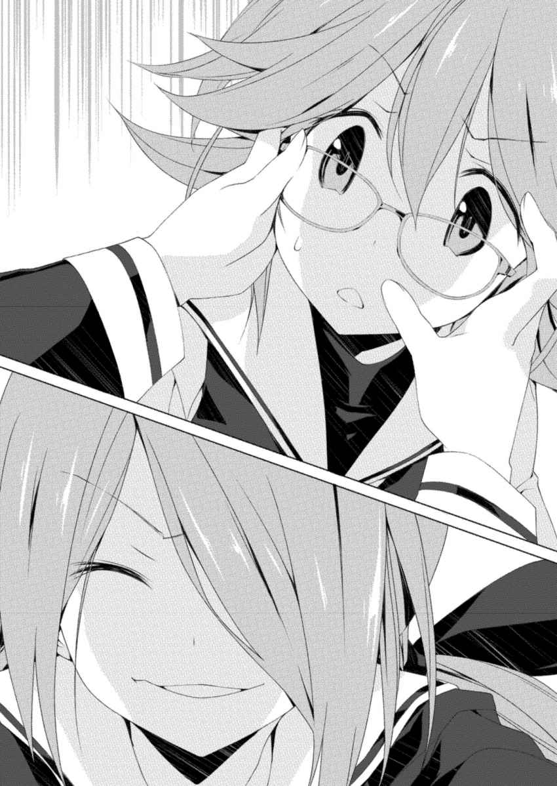
「......拓 留 先輩は、それで、良かったんでしょうか」
華と雛 絵 はもちろん、泉 理 たちが座ることを躊躇 っていた席に、今小 森 は座っている。うきが言い出したことだと泉理から聞いていた。そうしなければならない。理屈も感情すらも理解できた。
しかし、それでも。
「......それは」
泉理の躊躇うような小さな呟 きがはっきりと聞き取れた。華は目を逸らさずに言葉を待った。
「良かったに決まってんじゃん。かの偉人は言いました」
切り出したのは雛絵だった。いつもの飄 々 とした口調だった。
「『大切だからこそ、しかし我々は離れなければならない。大切なものに甘えて、その大切さをまさに自分たちの手で貶 めてしまう前に』。私たちを誰だと思ってやがる。私たちが共有している経験の強さをなめるなよ」
あっけにとられた華とは対照的に、泉理は薄く微笑んだ。
「......小 森 さんのときは、正直うきに助けられたの。それから、小森さん自身にも。あの人から、自分の壁を取り払ってくれたからね。私は弱いから、何もできなかった」
「弱いって、どの口が......」
ぽつりとこぼした雛 絵 に泉 理 は満面の笑みを浮かべた。雛絵は顔を引きつらせて後ずさった。
「あなたは強い子でしょう。初 山 さんがどんな子かは知らないし、あなたと何があったかも知らないけれど、少なくとも症候群に関することについては、あなたは初山さんより強い。本当に私が言えたことじゃないけど、であれば、わだかまっているものを取り払うのは......」
申し訳なさそうに言葉を濁した泉理に、華 は頷 いた。言われなくても十分にわかった。
華はスマホを取り出し、先ほどの画像を見た。
くだらない。その一言だった。まったくもって、本当にくだらなかった。
「......ひな」
「なに」
「さっきの、誰の言葉？」
雛絵はもったいぶるように胸を張った。
「有 村 雛絵」
へえ、と自然と声が出た。文芸部も馬鹿にしたもんじゃないなと、華は思った。
「すみません、ちょっと用事ができたので、ここで失礼します」
「え、今から？」
雛絵は驚いて劇場を指差した。上映が始まる寸前になっていた。もうロビーには華たちしか残っていなかった。
「大切だからこそ離れなきゃいけないんでしょ？」
華が言うと、雛絵はパンフレットをばたばたと振って慌てた。
「そ、それとこれとは話が違うじゃん。お金払っちゃったんだよ。てか私、ぶっちゃけ三人で観 るの久々だから楽しみにしてたんだけど。このあとのコースも決めてあるんだけど」
「何も違いません。行ってらっしゃい、香 月 」
「はい」
上映のブザーがロビーにまで響くと同時に、華は走り出した。「裏切り者！」とわめく雛絵の口を泉理が塞いだ。
握りしめたスマホの画像をスライドしながら、さてまずなにから取り掛かるか、と華は口元を興奮ぎみにつり上げた。
華 が初 山 の家にやってきたときには、夜の八時半を回っていた。
初山が電話に出なかったので事前の許可なく来てしまったが、応対してくれた初山の母親は遅い時間にもかかわらず快く中に通してくれた。先日訪れたばかりの華の顔を覚えてくれていた。
母親に確認したところ、初山は部屋に閉じこもってしまっていた。やはりネットの画像が原因ということだった。「気持ちを考えると、無理に引っ張り出すわけにもいかなくて......」とこぼした母親の顔には疲れがあった。部屋の前まで案内してくれたときに、「私が話しますから」と華が告げると、母親は深々と頭を下げた。
「瑞 希 、入るね」
華は返事を確認せずにドアを開けた。鍵はかかっていなかった。親との約束で、学校には行かなくてもいいし、部屋から出なくてもいいから鍵はかけないということになっているらしかった。
「......なんで」
呆 然 とした声を出した初山はベッドの上に座っていた。
華はその姿を見て驚いた。胸まであった髪が、肩まで届かないほどに短くなっていた。眼鏡もかけていなかった。
しかし、どこかで見覚えがあった。華はすぐに思い当たった。ネットの画像だった。リハビリ中の初山の姿が、老化現象を除けば今の初山の姿とそっくりだった。
「......なんで？」
先ほどより少しはっきりとした口調で初山は繰り返した。
「画像のこと、聞いたから」
華がテニス部の友達の名前を出すと、初山は「......そっか」とうな垂れ、膝を抱えて顔をうずめた。
「電話、出れなくてごめん」
「......ん。私も、ずっと瑞希のこと避けてたから」
「......やっぱり、そうだったんだ」
たいしてショックを受けた様子もなく、初山は言った。
「ウィッグだったんだね。眼鏡も伊 達 ？」
顔をうずめたまま、初山はわずかに頭を動かして肯定した。
「前にリハビリのときに撮られたことが原因なんでしょ？」
「なんで知ってるの」
初山は驚いて顔を上げた。
「それも友達から聞いたから。変装してたんだ」
「だって......嫌だから」
「テニス部に顔出さなくなったのも、それが原因？ 他の幽霊部員の人たちは、身体が前みたいに動かないって思っちゃうことが原因かもだけど、瑞 希 はテニスやってるところを絶対に撮られたくなかったんでしょ。テニスコート、外だもんね」
初 山 は諦めたように笑って、「さすが、宮 代 さんの後輩だね」と言った。
「それなんだけど」
華 はベッドの初山に近づき、ぐっと顔を寄せた。
「拓 留 先輩は、瑞希が思ってるような人じゃない。あの事件は、症候群の人たちへの警告なんかじゃなかった。自分の姿にだって、気づいてなんかなかった」
初山は気 圧 されたのか身体をのけ反らせていた。華はさらに顔を近づけた。
「......拓留先輩が何を考えていたか、どういうつもりであの事件を起こしたかなんてわからないけど」
噓 を並べたとき、気持ちが傷んだ。耐えるために華は唇を嚙 み、爪を掌に食い込ませた。
「結 衣 ちゃん......妹さんのことだって、本当は望んでなかった。伊 藤 先輩だってそう。先輩たちは、そんな人たちじゃなかった」
「......そんなわけないじゃん。だって、あんな、日本中を騒がす事件だったんだよ。そうだ、知ってる？ 日本だけじゃなくて、結構海外でも話題になっててね」
どん、と華はベッド脇の壁を叩 いた。
言葉を続けようとした初山が驚いて押し黙った。
「瑞希は、どうしたいの」
「......え？」
「拓留先輩や伊藤先輩を自分の都合の良いように持ち上げて、どうしたいの。症候群の中にも正気の人がいたかもって思い込みたいの。それともそのことに気づいたのは自分が最初っていうことにして、他の症候群の人たちとは違うと信じたいの」
新聞部として事件を追っていたときのことが思い出された。心地良さとは真逆の感情が心臓をうるさくした。華は耐えて喋 り続けた。
「そんなことしても、瑞希が元症候群者っていう状況は変わったりしない。画像の拡散や、拡散させてる人たちが減るわけじゃないんだよ」
「......そんなこと、思ってないよ」
否定する初山にはしかし力がなかった。目を逸らして顔を俯 け、冬の外に叩き出されたように震えていた。
「だ、だって、そうだ、ほら。宮代さんがいちばん早く病気から快復したじゃん。偶然にしてはでき過ぎじゃない？ やっぱり最初から自分の姿に気づいてたんだよ」
どかん、と華は再度壁を殴りつけた。初山が身をすくませた。
壁紙にひびが入り、わずかに凹んでいた。
「拓 留 先輩を、逃げ道にしないで」
初 山 は怯 えていた。華 は構わずにスマホを取り出して時間を確認した。二十一時前だった。付けっぱなしだった部屋のパソコンの前に、初山をベッドから引っ立てるように引きずりおろした。
「ちょっと、痛い！」
「見てて。時間だから」
ツイぽに入り、例の画像の拡散元のアカウントに飛んだ。
「やめてよ」
初山が目を逸らした。モニタにはあの四コマ漫画調の画像が表示されており、昼間映画館で見たときよりも拡散数が増えていた。
二十一時を回り、華は更新ボタンを押した。画面は拡散数がわずかに増えた以外変わらなかった。ベッドに戻ろうとした初山を、華は摑 んでその場に引き留めた。「なに、まじやめてよ」と訴えてくるのを無視し、それから華は数十秒おきに更新し続けた。
五分が過ぎたころ、唐突に画面が切り替わった。『このページは存在しません』という文言が表示されていた。
「え......？」
困惑する初山をよそに、華は念のためもう一、二回更新した。やはり『このページは存在しません』と表示された。華は「......ん」と頷 いた。
「画像貼った最初の奴が、アカウント消して逃亡したんだよ。まあ、逃げられないと思うけど」
「......なに、それ」
「画像に学生証が使われてたでしょ。あれ、漫画喫茶でコピー取られたときのだよ」
漫画喫茶のマシンやその他の設備は多くの人間が利用するため、不正行為に使用されたり破損したりしたときの措置として、顧客の身元を確認する目的で、身分証明証をコピーする場合がほとんどだ。華と初山が利用した漫画喫茶もそうだった。
初山もそれはわかっていたようで、「それは、そうだと思ってたけど」とこぼした。
「取得した個人情報を勝手に第三者に提供するのは違反だから。症候群者の権利とかを守る活動をしてる団体に連絡して、抗議してもらった」
熱心に対応してくれた団体だった。休日にすみませんと華が電話口で謝ると、むしろ活動にはっきりとした利益が見込めないこういった団体は、休日に活動しているほうが多いということだった。二十一時ごろに、店を通じて画像を拡散した本人と連絡がつくと言っていた。やはり従業員の一人が拡散元だった。泡を食って削除するだろうと思っていたが、案の定だった。
「瑞 希 が漫画喫茶で女の人に撮られたって言ったじゃん。そいつ、拡散した従業員と友達だったんだよ」
信じられないように初 山 はモニタを見つめていた。それから自分で何度も更新したが、表示は変わらなかった。
「でも......」
初山は祈るような表情でキーボードとマウスを操作し、ツイぽをさらった。そこに出てきたのは、初山の画像が加工してある、例の四コマ漫画調の画像だった。
「......だよね」
落胆した声が響いた。拡散元が消えたからと言って、すでに拡散してしまった画像のデータそのものが消えるわけではなかった。個人で保存して再度アップロードしたものなどに関しては、雨後の筍 のごとく延々とネットにはびこり続ける。
「......ん。だから、今回の人は逃がさないことにした」
華 は慣れた手つきで単語を打ち込み、ツイぽの表示を切り替えた。
「なにこれ」
そこにあったのは、やはり四コマ漫画調の画像だった。しかし写っているのは初山ではなかった。華だった。初山と同じような構図で、症候群にかかる前、リハビリ途中、学生証、そして現在の華が写っていた。
「昼間に作った画像。拡散した奴のアドレスに直接送ってやったの。すぐにそいつのツイぽで拡散された。それもいっしょに団体に抗議してもらって、ついでにそのことを含めて逆にそいつのＦＡＣＥＭＯＯＫとかを炎上させた。もうそいつの本名とか、学歴とか、あと瑞希の写真を撮った女の人のプロフィールとかもネットで晒 されてる。二人、付き合ってた」
華はブラウザを操作してこの件がまとめられているページに飛んだ。目に黒線が入っているが、受付にいたあの店員だった。隣に、女性が写っていた。「......あいつだ」と、初山が呆 然 と呟 いた。
「......どうやったの」
「......ん。......まあ、いろいろ」
協力を仰いだ、久 野 里 澪 の不機嫌そうな声を華は思い出した。
最初は「知るか。自分でやれ」と断られたが、泉 理 たちといっしょに月に一度、病院に代わる代わる泊まり込んで症候群の研究に協力していることを持ち出すと、舌打ちをしたあとに「お前の今の画像を送れ。一人笑いものにしたのと、連続して二人笑いものにしたのとでは、ネットの奴らの反応が顕著に違う」と言われて一方的に電話を切られた。
あとは状況を見つめるだけだった。あっという間に華の四コマ漫画調の画像が拡散され、何をどうやったのか、「あの病気の患者を次々と無断で晒している奴が話題に」というページが突然あちこちに立てられ、華 の予想を超える速さで、拡散した従業員の暴き立てが始まった。
澪 は気のない返事をしていたが、とてもそうは思えない手際の良さだった。夕方過ぎに再度連絡があり、「相手のＳＮＳに追い込みが始まった。そろそろ怯 え出すタイミングだ。あとでメールで概要を送る権利団体に連絡を取れ。女が出たら男に代わってもらうように言え。団体員のリストもあとで送る。異性の奴のほうが動き出しが違う。拡散されて困っているんですと弱々しさを装って、男が女を手助けする際の満足感を誘導しろ。学生証の件を念押しして個人情報を晒 されたと、団体として公式に動く口実を与えろ。もしその男に知識がないようだったら、個人情報保護法の第二十三条に違反していると言い添えろ。念のためお前も読んでおけ。お前が利用した漫画喫茶の規約の上から三番目にも明記してある。そのあとは団体の動きに合わせて好きにしろ。次のお前の泊まり込みは来週だからな」と不機嫌な声で一息に言われて、やはり返事をする前に電話を切られた。
この人は馬鹿なんじゃないか、と華は呆 れた。明らかに楽しんでいると思った。
「拡散した人が追い込まれたって知れば、この画像みたいなことは、減っていくかも......だから」
「でも......なんで華まで、自分の......」
「そうする必要があったから」
実際にそれを言い出したのは久 野 里 なのだが、華はむしろこれでいいと思っていた。
「それに、こんなの......なんでもない」
拓 留 が決断したことに比べれば、自分のくだらない画像がネットに出回ることくらい、ささいなことにすぎない。
モニタを見つめる華を、初 山 は呆 然 と見ていた。
「......これが新聞部の、拓留先輩のやりかたなの。漫画喫茶の店員も、瑞 希 の写真撮った女の人も、画像を拡散した奴らも......それから、店員の個人情報を晒した奴らだって。都合の良い情報に飛びついただけ」
華はモニタの電源を落とした。相変わらず拡散や炎上が続くのだろうが、もう追う意味はなかった。
「瑞希も、そんなことはしないで。何考えてるかわかんないけど、拓留先輩と伊 藤 先輩を、瑞希の都合に合わせないで」
向き直って言った華に、初山は追い詰められたように目を潤ませた。見られないようにするためなのか下を向いた。
「......私、どうすればいい？」
「............ん」
昔の友人に同じことを言われたことを華は思い出した。
剣道部の友人だ。姉妹のようだった。自分の声のせいで家族ごと壊してしまった友達だった。聞かれたとき、華 は何も言葉を返せなかった。
あのときとは状況が違っていた。しかし自分自身も違っていると、仲間といっしょに経験したことが華に自覚させていた。
「......踏ん張りなよ。拡散された規模は違うけど、私と瑞 希 は同じ立場だから。私は踏ん張る。ほとんどがおもしろいからっていうだけで、私たちを苦しめてる。そんな連中のために、私たちが苦しんでやる必要なんか、絶対にない」
パソコンの前を離れ、ドアに向かった。出ていく直前、華は顔だけで振り返った。
「......私の親友が言ってたんだけど。友達は出来るものじゃなくて作るものなんだって。私は今、作ろうとしてる。瑞希を友達にしようとしてる。でも瑞希が踏ん張れずに、まだ拓 留 先輩や伊 藤 先輩を逃げ道にするんなら、無理。友達にするのは諦める」
反応は返ってこなかった。初 山 は床を見続けていた。
「......瑞希の、好きにすればいい。できれば友達になりたいと思ってるけど。......壁、へこませてごめん」
華はドアを閉めた。
何か教えてほしそうにしている母親に会釈だけして、華は初山の家を辞した。
申し訳ないとは思いつつも、もう喉がからからだった。こんなに喋 ったのは、症候群にかかる前以来だなと華は思った。
翌日の学校の休み時間だった。
華が相変わらず携帯機のゲームに興じていると、その画面に影が落ちた。
顔を上げると、初山が立っていた。華はぽかんとした。
「......なんか言ってよ」
「......ん。......えっと、その」
髪が短かった。眼鏡もかけていなかった。
黙って見つめあっている二人の空気が異物に映ったのか、クラスメイトたちがちらちらと視線を向けていた。
「......視力、どれくらいなの」
ようやく聞いた華に、初山は「二・〇」と答えた。妙な間が流れたあと、どちらからともなく微笑んだ。
「テニス部、また行くの」
「うん。そうするつもり」
「......ん。瑞希、昼休み時間ある？ ちょっとお願いがあるんだけど」
了承した初山を伴って、華は昼休みにいつもの部屋に向かった。
ドアを開けると、すでに雛 絵 と泉 理 が来ており、お昼ご飯を広げていた。華 と瑞希を認めると、雛絵は背もたれに思いきり体重を預け、スカートを翻して両足を机に乗せた。
「おうおうよく顔が出せたもんだなあ裏切りもんが。連絡一つ貰 えなかった私と先輩の昨日の孤独を聞かせてやろうか。映画のあとのパスタは旨かったなあ。デザートのタルトもなかなかだったし。しかも安かったなあちゃんと苦労して調べたから。繰り返すぞリピートだ苦労して、調べたから。ああもったいない」
「有 村 、行儀悪い」
泉理がぴしゃりと足を叩 くと、雛絵はおとなしく机から足を下ろした。「初 山 さん？」と泉理が優しく訊 くと、雛絵の態度に面食らっていた初山が頷 いた。
「あの、部活のことなんですけど」
華はそう言って、以前雛絵から貰った入部及び入会届を鞄 から取り出した。
泉理が目を見開いた。
「決めたの？ どこ？」
「いえ、その前にちょっと聞きたいんですけど。部活とか委員会って、五人以上いないとだめなんでしたっけ」
「原則そうだけど......？」
疑問を浮かべながら泉理は答えた。
碧 朋 学園は泉理たちの世代が第一期生にあたる、歴史の浅い学校だ。開校時に部活や委員会を設立した際は特に人数の規定はなかったが、現在は五名以上の所属が原則となっていた。
華はそうですよね、と頷いた。
「じゃあ、新しく部活作りたいので、泉理先輩入ってくれませんか。ひなも」
珍しく泉理が「......は？」ととぼけた声を出した。不機嫌そうに窓の外を見ていた雛絵も、啞 然 として華を見てきた。
「名前はまだ決まってないんですけど。概要は書いておきましたから」
華は呆 けている泉理に書類を渡した。泉理は華の顔を見ていたが、華が書類に視線を落とすと、ようやく受け取ったことに気づいたように、書類に目を凝らした。
「『元カオスチャイルド症候群者を取り巻く環境について考える部活』......？」
はい、と華は頷いた。後ろの初山から驚きが伝わってきた。
「......ん。瑞希の件でいろいろ考えちゃって」
泉理はその概要だけが書いてある書類をじっくりと見たあと、華を見てきた。華がはにかむと、わずかに泉理は微笑んだ。
「......そう。いいでしょう、認めます。けど一つ約束して。昨日のことだけど、あれ、久 野 里 さんでしょう」
やっぱりわかるか、と華 は頷 いた。泉 理 たちに連絡するのを忘れていたため、心配してネットで追いかけてくれていたのだろう。
「あんなことはもうしないで。ああいったことをエスカレートさせるわけにはいかない。私は二度と間違えるつもりはありませんからね」
「......はい」
華はしっかりと頷いた。言われなくてもそうするつもりだった。
「あと、部活じゃなくて委員会にしなさい。活動内容がそのまま学校全体に関わってくることだから、そのほうがいい。生徒会の傘下扱いにすれば、私も掛け持ちしやすいし、有 村 も部活に二つ入るよりは許可が下りやすいから」
「わ、私はまだ入るとは決めておらんなあ」
突然今までの自分のキャラクターをなぞるように、雛 絵 がまた背もたれに体重を預けて椅子を揺らし始めた。華も泉理もそれを無視した。
「部長......じゃなくて会長はあなたね。副会長は私がやります。それで、初 山 さん？」
「は、はい？」
突然話を振られて初山は姿勢を正した。女帝の噂 は下級生にも健在のようだった。
「あなたも、入ってくれるのかしら」
「え......っと」
華が初山を見ると、「......お願いって、これ？」と訊 いてきた。華は頷いた。
「名義だけでいいから。テニス部との掛け持ちになっちゃうけど」
「......わかった」
初山は真剣な顔で頷いた。「でも、ときどき手伝うよ」と言った初山に、華も頷いた。
入会届の前に委員会の設立を申請する専用の書類を提出する必要があり、それぞれ直筆のサインが要るということで、華と泉理、初山はその書類に自分の名前を記入した。会長の欄がいちばん上だった。自分の名前が泉理より上に書かれていることに、華は妙なくすぐったさを感じた。
「有村も」と、泉理。
「さてどうしようかなあ。慰謝料的に何かを奢 ってもらわなければ気が済まんなあ」
「早く書きなさい」
雛絵はおとなしく自分の名前を書いた。なおもぶちぶちと「だってさあ、楽しみにしてたのにさあ」と不満を漏らしていた。
華が雛絵から書類を受け取ると雛絵はまたつんと視線を窓の外に向けた。不満は相当根深いようだった。これは今度本当に何か奢ってあげなくちゃいけないかなと華は思った。
「ね、もしかしてさ」
何か感じるところがあったのか、初山が華と雛絵を見比べて、華の肩をつついた。
「なに」
「華 の親友ってこの人？」
「まさか。そんなわけないじゃん」
「それ返せ！」
書類に伸びてきた雛 絵 の手を華はかわした。身まで乗り出そうとした雛絵を、泉 理 が片手で鷲 摑 みにして強引に座らせた。
「それで、もう一人のあてはあるの」
「はい。瑞 希 と同じでテニス部の人ですけど。名義は貸してくれるって言ってました」
それを聞いた初 山 は、思い当たったのか「......あ」と口を開けた。
泉理は少し驚いたような表情を見せたあと、満足げに頷 いた。
「じゃあ、その人のサインを貰 ってきて。できれば今日中に。明日の生徒会会議で議題に出して承認をとって、明後日には学校側に提出するから。部屋はここでいいでしょう？」
華は頷いた。
「言っておきますけど引きこもってゲームばっかりやってたらすぐに解散させますからね」
軽くかぶりを振ったあと、華は笑った。
「ん、大丈夫です。忙しくなるかもですし。それに、友達と出かけたりしたいですから」
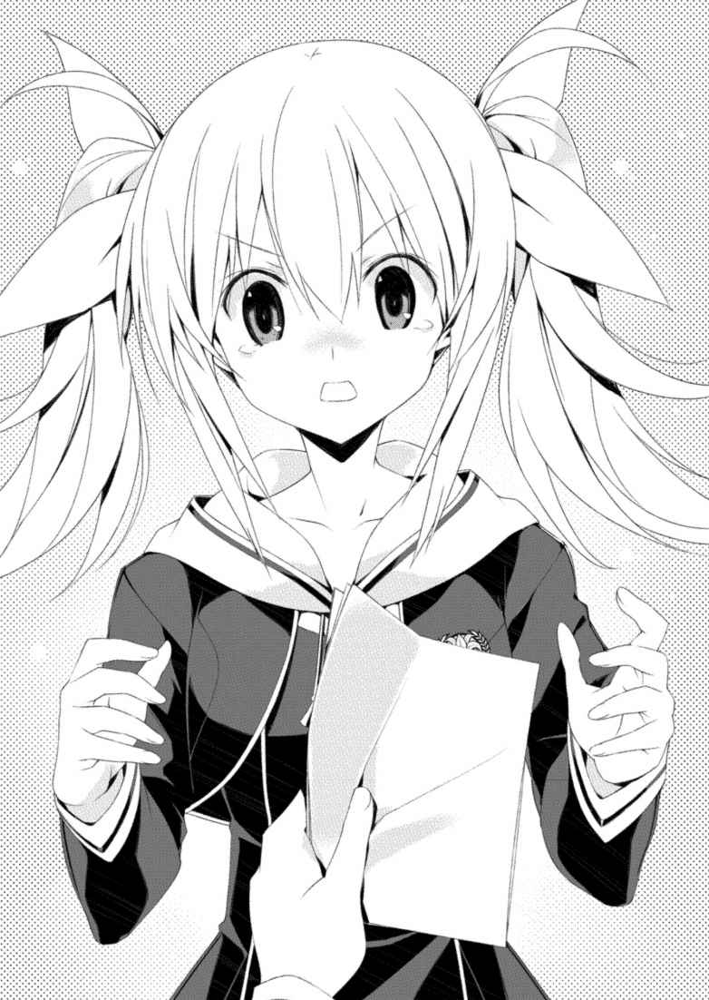
結局、名前は「学生自治研究会」に決まりました。
学校側としても、生徒側から積極的にこういった内容に取り組みたいという要望が出たのは、基本的には喜ばしいことのようでした。保護者からも好意的な問い合わせが来て、気の早い人は具体的な活動内容の提案までしてきました。香 月 はちょっと面 喰 らっているみたい。設立一日目にして「辞めたい」と言ってきたので、お尻を叩 いてあげました。確かにちょっといきなり忙しすぎたのね。
そう、設立に関して謝っておかなければいけないことが一つ。
学校側に設立願を提出した際に、設立に反対してきた一人の先生が、新聞部のことを持ち出したの。「元新聞部の部員が会長と副会長で舵 を取って、新聞部の二の舞にならないと言えますか」って。それでそれまで好感触だった場の流れが変わってしまって。学校側からすると再開して間もない今の時期、対外的に発展する可能性のある活動に関しては敏感になっていたのね。
どうしても、言わざるを得なかった。「宮 代 拓 留 が部長を務めていた部ではありません」って。大きな声で、はっきりと目を見て訴えるしかなかった。
本当に、ごめんなさい。
自治会の活動自体は、香 月 が頻繁に駄 々 をこねる以外は、今のところ順調に行っています。有 村 は文芸部とどちらが本業なのというくらい参加してくれているし、以前書いた香月のお友達二人も、テニス部の合間を縫って手伝ってくれています。
そう、そのお友達二人と有村が一時期おもしろかったの。最初は香月の横に堂々と有村が座っていたんだけどね。香月が有村を挟んで二人と楽しそうに話していると、なんだか手持ち無沙汰みたいにして私に話を振ってきて。気持ちはわからないでもなかったんだけど、本当に有村と二人が対立して空気が悪くなっても嫌だったから、適当に返事をして自分でどうにかしなさいって信号を送っていたの。
そしたらある日突然、有村が「もう限界だ。第一回学生自治研究会カラオケ大会を開催することに私が決めました」って宣言して。嫌がる香月と私（お小遣いがなかったの）をひっ捕まえて全員をカラオケボックスに軟禁してね。「一人十曲歌うまで帰ることは許しません」って言うの。
二人と仲良くなりたいんだろうなっていうのはわかっていたから、仕方なく付き合ってね。でも五人だから五十曲でしょう。結局五時間半かかりました。お財布事情としては泣きそうだったんだけど、まあ楽しかったです。嫌がってた香月が、声は小さかったんだけど意外と上手だったのが印象的でした。
そういえば、あなたとは行ったことがなかったね。あなた、どんな歌を歌うの？ 私は古い曲しか知らないの。十曲歌わされたときも、最初は四人に合わせてなんとかぼんやりと聴いたことがある新しい曲を歌っていたんだけど、途中で諦めてね。
私はよくわからないんだけれど、最近の曲の歌詞の浅さっていうのを有村が非難し始めて、それを香月のお友達二人が擁護して言い争いになって。結局それが良かったみたいね。翌日から四人で会話していました。
ああそれと、私事として変わったことというか、なんというか......。
今日、クラスの男の子から告白されました。
無言の応酬による教師との攻防が続いている最中、有 村 雛 絵 は鞄 に入っている小説の内容を思い出そうと頭を探っていた。
良くない傾向だった。自分で書いている小説の続きを考えるのではなく、読んでいる小説のことを考えているときは、気分が沈んでいる証拠だと雛絵はわかっていた。もっとも、事件以降は読むばかりでまったく書けてなどはいなかった。
職員室だった。担任の教師は椅子に座り、脇に雛絵を立たせたままこつこつとペンで机を叩 いていた。机には何も記入されていない進路希望調査票が載っていた。
今回はずいぶん粘るな、と雛絵は思った。
「......確かに、期限の終業式まではまだ間があるんだけどな」
職員室の大きな窓ガラスの反射に雛絵が顔をしかめたとき、担任が言った。
「お前以外は全員提出しているんだ。最悪、第三希望まで埋めなくてもいいんだが」
「まだ、進学と決めたわけじゃないんですけど」
「......うちのクラスは全員進学だぞ？」
知ってます、と雛絵は頷 いた。進路希望調査票には、進学と就職のどちらかに丸をつけ、進学の場合は第三希望まで大学や専門学校の名前で埋めることになっていた。雛絵のクラスメイトに、就職を希望している者は一人もいなかった。
変わらない雛絵の態度に、担任はペンを動かす手を止めた。明らかに仕方なさげな表情をして、進路希望調査票を雛 絵 に返した。
「週明けまでに決めておいてくれ」
終業式は週明けではなかったが、「わかりました」と雛絵は恭 しく進路希望調査票を鞄 にしまった。処世術処世術と頭で呟 きながら、一礼してその場を離れた。
「と、そうだ。研究会の発表、がんばってくれよ。親御さんたちも期待してるみたいだから」
「うーす」
去り際にかけられた声に、雛絵は顔だけ振り向いて答えた。
職員室のドアを静かに閉めてから、言われんでもがんばっとるわいと舌を出した。
雛絵がいつもの部屋、元は新聞部の部室であり、今は学生自治研究会の会室にやってくると、泉 理 がノートＰＣに向かって猛烈な勢いでキーボードを叩 いていた。横には書類が積まれており、雛絵が職員室に呼び出しを受けた前よりも、その厚さが増しているような気がした。
「ちゃおっすただいま帰りました......華 は？」
「聞き取りの書類を積み上げてからまた出ていった」
「瑞 希 たちは」
「書類を出してくれて、あとはテニス部。......帰りにも書類を持ってくるらしいけど」
珍しく泉理が疲れた様子でこぼしたのを見て、雛絵はうわおと驚いてみせた。書類の厚さが増しているのは気のせいではなかったらしい。雛絵はその束を適当に取って、会室に以前から据え置きのＰＣに向かい、いくら埋めても終わる気がしないエクセルを立ち上げ、書類の内容を打ち込み始めた。
「担任から終業式の発表、がんばれってプレッシャーかけられました。保護者が期待してるんですって」
「......どうせまた誰かの親から電話がかかってきたんでしょう」
学生自治研究会を設立してから数週間。当初の想定を遥 かに上回る作業量に、雛絵たちは忙殺されていた。
きっかけはささいなことだった。会長になった華が最初に言い出したことが、「学校の皆が症候群についてどう思っているか、どんな想いをしているのか聞きたい」というものだった。雛絵も泉理も賛成した。この研究会は、「元カオスチャイルド症候群者を取り巻く環境について考える」という題目の元に設立された研究会だ。華の言葉はその題目の第一歩として適切なものに思えた。
学校の許可を得て、全校生徒に研究会の設立を告知するとともに、アンケート用紙を配った。症候群に関することならなんでも書いてください、という漠然としたものだったが、これが想定外の回収量を見せた。提出は任意であったにもかかわらず、想像以上に症候群に関する想いが学生たちに蓄積していたのか、それとも「なるべく提出してください」と言った泉 理 の女帝としての迫力が強かったのか、初日から相当数が会室に届けられた。
以降は日を追うごとにその数が増えていった。メールで提出してくださいと言えばよかったと後悔しても手遅れだった。さすがに数週間が経った今ピークは過ぎているが、この期に及んでも「一枚じゃ裏面使っても書き切れなかったので、もう一枚用紙ください」と言ってくる生徒があとを絶たなかった。加えて真偽があいまいな内容や気になったことを書いてきた生徒に、直の聞き取りを行ったことも忙しさに拍車をかけた。いつの間にか「なんか研究会が症候群のことについて、いろいろ話を聞いたり質問に答えたりしてくれるらしい」との噂 が広まり、手当たり次第に雛 絵 たちは声をかけられるようになってしまった。それにより得られるものがあるのも事実なので、雛絵たちはあえてその噂の訂正はしなかった。
すると今度はその噂を学校側が聞きつけた。即座に「そこまで大がかりに活動しているのであれば、終業式にその結果を発表するように」との命令が下った。断れる状況ではなかった。
雛絵たちは役割分担を行い、華 と初 山 瑞 希 、それから同じく委員会に入った二 谷 麻 知 の一年生三人が聞き取りを担当し、雛絵と泉理がその聞き取りとアンケートの結果をデータ化することになった。入力の速さからすれば雛絵より華のほうが打ち込みに慣れており、また本人もそちらのほうがいいとかなり強硬に訴えたのだが、「会長はあなたなんだから、あなたが矢面に立ちなさい」という泉理の一声でその主張は取り下げられた。
学校側あるいは生徒自身から、保護者側にも終業式の発表のことは知らされているようで、詳細を求める電話などが連日かかってきているらしかった。
「......そういえば先輩、先輩方の学年の進路希望ってどんな感じなんですか」
雛絵は打ち込みの手を止めないまま訊 いた。
「どんな感じって？」
「進学か、就職か」
「今のところ、ほとんど進学ね。就職の人は学年で数えるくらいだったかしら。......まあ、卒業するころにどうなっているかはわからないけど」
二〇一六年十二月現在、雛絵は碧 朋 学園高等部の二年生、そして泉理は三年生に属していた。世間一般で言う通常の高校生活を送っているのであれば、すでに今年の三月段階で泉理は学校を卒業し、四月には雛絵が三年生に進級しているはずであった。だが症候群とそのリハビリの影響により、学校の再開後、全生徒はリハビリ前に属していた学年のまま復学する措置が取られた。そして泉理たち三年生に限っては、復学から卒業までが間もないという理由で、もう一年長く高校に通うことになっている。
「そのとき、私たちの代は二十歳になっているから。何か物思う人も出てくるんじゃないかしら」
「呼びかた決まってないって聞きましたぜ。四年生、でいいんすか？ 来年四月から」
さあ、と泉 理 は肩をすくめた。来年の四月には中等部の三年生が新たに高等部の一年生として入ってくることになっていた。一時的に高等部には四学年が所属することになる。
「......まさか先輩と同じタイミングで卒業することになるとは思いませんでした」
「それも今のところでしょう。法や社会がどうなるかわからないけれど、もしかしたらあなたも四年生になるかもしれない」
「先輩は五年生すか」
それはさすがに勘弁してほしいけど、と泉理がぼやくのを見て、雛 絵 は苦笑いを浮かべた。
このようなややこしい措置が取られているのは、結局のところ元症候群者たちの扱いを社会がどうするか決めあぐねているのが根本の原因だった。学生の多くが進学を希望しているのは、現状だと就職より進学のほうが、元症候群者に対する差別や偏見などが社会的に少ないと考えられているからだ。通常の大学や専門学校であれば、受験して入学する場合、過去の精神疾患罹 患 歴が入学資格に影響することは少ない。
だが就職となると話は違ってくるし、加えてカオスチャイルド症候群というものが、精神疾患の一種であるということ以外は明確に解明されていないこともあり、であればそもそも元症候群者たちが通う碧 朋 学園を、通常の私立高校として認めて良いのかどうかという疑問を呈する声もあった。
一向に減っていかない書類を見て、雛絵はため息をついた。
「どうしてくれますかねえ......」
「どうしましょうね」
しばらくして指と目が疲れたのか、泉理がコーヒーを淹 れに席を立った。雛絵が「あざす」と言って自分の分を受け取ると、泉理は目を泳がせるような仕草をして、席には戻らず雛絵の傍に立ったままコーヒーを飲んだ。
また珍しいな、と雛絵は泉理を見上げた。何かを切り出そうとして躊躇 っているようだった。こういったとき泉理はふだんの頼れる姉から、年相応のあるいはそれより若い妹のように見えるのが、雛絵はずるいと思っていた。
「どしたんですか？」
なおも泉理は落ち着かない様子をしていたが、ややあってコップを両手で包み込み、その中に視線を落としながら言った。
「その......告白、どうなってるの？」
「......え」
その突然に、雛 絵 は啞 然 とした。泉 理 は雛絵の反応にやはり驚いていた。
「なんで知ってるんすか」
「え、昨日、告白されたんじゃないの？」
「いや、されましたけど......」
同学年の男子だった。クラスは違ったが友達の友達という奴で、顔も名前も雛絵は以前から知っている相手だった。
「......私も、されたんだけど。昨日」
「はあ？」
訊 けば泉理に告白した男子は、「今ごろ俺の友達の後輩も、女帝の友達の有 村 さん呼び出して、告白してるはずだから」と言っていたそうだ。
男子二人は示し合わせて告白し、週末にダブルデートを計画していたという。
雛絵は呆 れた。
「なんですかそりゃ」
「断ったの？」
「もちろん。先輩もでしょ？」
泉理は気まずそうに視線を逸らした。まさか、と雛絵は表情を変えて身を乗り出した。
「......保留にしてるの」
まじか、と雛絵は言葉を失った。泉理がそんな決断をするとは思わなかった。
「え、どうするんですか」
「......デートは、してみようと思っていて」
「......好きなんですか？」
自分の声の調子が下がったことに雛絵は気づいていた。
が、どうしようもなかった。楽しい恋愛話、という括 りの会話には感情が入っていかなかった。
「......そういうわけじゃないんだけど」
「じゃあなんで」
はっきりと責める口調で追及した雛絵に、泉理は表情を濁した。
そうしなければ整理をつけられないとでもいうように、コーヒーをゆっくりと飲み、椅子に戻って慎重に腰を下ろし、自分の手をさすった。
「なんて言ったらいいか、難しいんだけどね」
ややあって話し出した泉理の声には、いつものような自信と強さはなかった。
「いろいろあったけど、今は私を受け入れてくれている人が学校にはいるわけでしょう」
「......その姿のことですか」
ええ、と泉 理 は頷 いた。
カオスチャイルド症候群に冒されていた長い期間、泉理は症候群の代表的な症状である身体の老化現象に加えて、かつての友人である来 栖 乃 々 の姿に変化するという特異な現象を発症していた。症候群から快復すると同時にその両方が改善されたのだが、それまで来栖乃々としてまわりから認識されていた自分が、南 沢 泉理として生きられるかどうか、快気した直後の泉理はわからなかったという。
無理もないと雛 絵 は思っていた。なぜ泉理が乃々の姿に成り代わったのか、なぜそんなことが起こったのかを事件の真実とともに知っている仲間たちはともかく、事情を知らない人からすれば、簡単に受け入れられることではないのは明らかだった。
泉理は地道に理解を求めていった。最初は同学年の友人から始め、次に他学年で交流のあった者、次に同じタイミングでリハビリを行っていた者と、真実を明かすことはできなかったが、とにかく症候群の影響で身体が変化していた、ということを説明して回った。雛絵たちもそれを手伝った。
退院するころには、少なくとも泉理と学園で距離の近かった人間は、泉理のことを乃々の名前で呼ばずにいることが多くなっていた。
「告白してくれた子は増 田 くんっていって、同じクラスの子で。増田くんは当然、今まで私のことを乃々ちゃんとして見ていたわけだけど、今は南沢泉理として見てくれているのね。まあ、呼びかたは何度言っても〝女帝〟から変えてくれないけど。......その、初めてだったから。南沢泉理として、男の子から好きだって言ってもらえたのは」
「......そうなんですか」
「だから、ちゃんと考えたうえで返事をしたくて。つい、デートくらいならって」
苦笑しながら「......自分のことは難しいね」と続ける泉理を見て、雛絵はバツ悪く顔を逸らした。
昨日、告白されたときのことを思い出し、雛絵は泉理との距離を遠く感じた。
強さを見せつけられた気がした。
「......泉理先輩は、拓 留 先輩のことどう思ってるんです？」
意地が悪い口調にならないように注意しながら、雛絵は訊 ねた。
泉理は即答した。
「好きだけど」
「......男としてですか。それとも、弟として？」
「さあ。どうかしらね」
「わからないんですか？」
「あなたは？」
う、と雛絵はたじろいだ。
「......好きか嫌いかで言ったら、好きですけど」
「それは、男性として？ それとも戦友として？」
唐突な単語だった。けれどそれは素直に雛 絵 の腑 に落ちた。雛絵はその単語を確認するように頷 いた。
「戦友としては、間違いなく好きです。大好きです。男性としては......よくわかりません」
そう、と泉 理 は笑みを深めた。
「姉として、鼻が高い評価ね。ありがとう」
下宿先の家に帰ると、叔父夫婦が夕食の支度をして待ってくれていた。
大根となめこの味 噌 汁 が食卓に並んでいるの見て、雛絵はばれないように苦笑して息を吐いた。これで三日連続だった。
「学校、忙しそうね」
「研究会の活動の知らせが来てたんだ。入ったんだって？」
会話を振ってくる叔母と叔父に、雛絵は笑顔を浮かべて当たり障りのない返事をし続けた。気を遣われているのがわかった。味噌汁にしても、雛絵が好物だと言ったからに違いなかった。そして雛絵はこの味噌汁が嫌いではないが好きでもなかった。三日前に味の感想を求められ、好物なんだとつい言ってしまっただけだった。
部屋に戻ると、雛絵はベッドに寝転んだ。
スマホを取り出し、石 綿 啓 介 の名前を表示させた。
告白してきた男子だった。いつ番号を交換したかは覚えていなかった。おそらくはまだ症候群の影響によって、自分が相手の言うことを噓 か本当かわかってしまっていたころだろうなと雛絵は思った。
放課後の校舎裏だった。
緊張でわずかに強張っている口をなんとか動かしながら、石綿は言った。
「前から、有 村 のことが好きだったんだ。付き合ってください」
「んおっと、ごめんよ。好きな人がいるんだ。許してくれい」
自分の言ったことを思い出し、雛絵は枕を自分の顔に押し付けた。息ができなくなるまで上から押しつぶし、足をばたつかせた。
噓だった。はっきりと恋愛対象として好きな男性の顔など、あのとき雛絵の頭の中には浮かんでいなかった。石綿はあっけにとられて、そのあと苦しそうに顔を歪 めた。
なにやってんだか、と雛絵は枕の下で呻 いた。
学校が再開して以来、雛絵はそれまでと変わらない社交的な人柄で友人たちと付き合っていた。しかしその付き合いかたは以前とは違うと、身に染みて感じていた。症候群から快気し、相手の言っていることが本当か噓 かわからなくなったことが大きいのだろう。何から何まで冗談を振りまいていたあのころとは違い、以前よりも地の性格を出す機会が多くなった。はっきりと本心で向き合えるのは、事件の経験を共有した華 たちだけだが、それでも他の友人たちとも前よりは深い付き合いかたをしていた。浅くて広かった付き合いが深くて狭いものにと言ってしまえばそれまでだが、その変化は雛 絵 にとって大きなものだった。
叔父夫婦との距離も変わった。いまだにお互いに気を遣いあっている微妙な間柄だが、それも症候群のただ中にいたころにはあり得ないことだった。叔父や叔母から距離を詰めようとしてくれていることも、そしてそのことを雛絵自身が反発せずに受け入れていることも、以前は想像すらできなかった。社交辞令的なやり取りや感情は、かつての雛絵が最も嫌っていたものだった。
あれだけ疎遠だった両親とも、時折だが電話で話すようになった。
前に進んだと思っていた。
しかし告白されたときに、雛絵がとっさに口に出した返事は、まるきり冗談と適当で固めたそれだった。
「......ちくしょうめ」
本当を鎧 わず、まわりの空気に調子を合わせながら、しかしその空気を心の中で疎外していたあのころのキャラクターそのものの姿だった。
石 綿 は顔を歪 めていた。自分の適当な態度で、傷つけてしまった。
好きだと言われたときに、どこかで戦友の彼と何かを比べてしまっていたのだろうかと、雛絵は思った。
泉 理 はきちんと向き合っていた。彼とあれだけ近かったにもかかわらず、告白されたときに今の自分としてそれを受け入れ、考えていた。うきが「姉さんには敵わない」とよくこぼしているのを雛絵は思い出した。
勢いよく身を起こし、雛絵はスマホを再び手に取った。
「もしもし、石綿くん？ 有 村 ですけど」
用件を告げ、電話を切った。
雛絵は習慣から、読みかけの本を鞄 から取り出して目で追った。皮肉にも女性の主人公が二人の男性の間で愛情を揺れ動かしていた。
中身はさっぱり頭に入ってこなかった。
「先輩......」
「......なに」
「どしたんですか、その格好とメイクは」
「小 森 さんが張り切っちゃって......。うきもそれに悪乗りしちゃって......」
待ち合わせ場所についた雛 絵 は、いつもどおり律儀に時間より早く来ていた泉 理 の姿を見て目を細めた。泉理は疲れ切ったように肩を落としていた。
ふだん前髪で少し隠れている泉理の顔がはっきりと出ていた。サイドに括 った髪を前に流し、シュシュでまとめていた。ふだんは下地とリップ程度の化粧も、アイメイクと薄いチークが足され、より大人びた印象が強調されていた。服装もコートはいつもどおりだが、首元から覗 いている服は泉理にしては明るめの色の高そうなものであり、挙げ句にヒールが高いブーツを履いていた。
「そんな服持ってたんですね」
「上着以外、服もメイクも全部小森さん。この靴なんて、あの人昨日わざわざ買ってきたの。何考えてるんだか......」
訊 けば昨日の夜と今日の朝は、ほとんど小森とうきの着せ替え人形だったという。たびたび強制的に感想を求められた結 人 が身の置き場に困っていたと言う泉理に、雛絵は苦笑した。
待ち合わせの時間ちょうどに、二人の相手はやってきた。
泉理に告白したという増 田 康 太 は、失礼にも啞 然 とした表情を浮かべた。
「......どしたん女帝、その格好と髪型。いや、嬉 しいけどさ」
身長は男子の平均ほどだが、ややがっちりとした体格に黒縁の眼鏡をかけていた。目が大きく、寝癖と見分けがつかない癖っ毛と相まって愛 嬌 のある顔立ちをしていた。
泉理はうんざりとした様子で答えた。
「放っておいて。家族にやられたの。あと女帝はやめて」
一方の石 綿 は一言で言って整った顔立ちをしていた。背もすらりと高く百八十センチを超えており、適当に流している髪がセットされているように似合っていた。
石綿は心なしか諦めたように微笑んで言った。
「......有 村 は、ふだんどおり？」
「そだよ。中身がいいから必要ないの」
訊けば二人は小学校からの友人だそうで、家も近く、家族ぐるみでの付き合いをしているということだった。
「あーてかごめん、俺たち他に場所あんまり知らなくってさ」
増田が言ったのに合わせて、石綿も頭を下げた。
待ち合わせたのは昼過ぎの、見慣れた渋谷駅前だった。今日の時間と場所は男性陣に一任していた。本当に申し訳なさそうにしている二人に、「気にしなくていいっすよ」と雛絵は笑顔を返した。
初めに連れていかれたのは、渋谷駅から歩いて五分程度のところにあるプラネタリウムだった。「星好きなの？」と雛 絵 が訊 ねると、「や、別に。ただ映画より短いし、混んでないし」と石 綿 は苦笑しながら答えた。へえ、と雛絵は思った。そういえばデートというのはそういったことを考えるものだった。入ってみるとなるほど悪くなかった。おそらくは小学校の何かのイベントで来て以来だったということもあるのだろうが、今夜の星空の解説という単純なプログラムでも、雛絵はわりと新鮮に楽しめた。
雑貨屋とＣＤショップを冷やかすというので、雛絵と泉 理 はそれに従った。ＣＤショップはともかく男子高校生が雑貨なんか興味あるのだろうかと雛絵は思ったが、気を遣ってコースを考えてくれたのだろうから、遠慮なく楽しむことにした。
道々の石綿との会話は、ほどよいものだった。もっとぐいぐいといろいろなことを訊 いてくるかと雛絵は思っていたが、案外とわきまえていた。雛絵はそれがありがたかった。一方の泉理と増 田 は、聞こえてくる限りどうやら増田が一方的に泉理に られたり怒られたりしているようだった。増田がお調子者のようで、泉理は「あのねえ......」とため息を繰り返していたが、本気で呆 れているわけではなさそうだった。学校でもああいったやり取りをしているのだろう、会話に慣れのようなものがあった。
雑貨屋はプラネタリウムから歩いて十分ほどの駅の反対側、井 の頭 通り近くのビルに入っていた。
エレベーターの扉が開いた瞬間、四人は同時に身を固めた。
原因ははっきりしていた。雛絵は自分たちの後ろに並んでいた他の利用客が訝 しんでいるのを感じ、先んじてエレベーターに乗った。他の三人も無言で後に続いてくれた。「雑貨とか興味あるの？」と雛絵は誤魔化しぎみに石綿に訊いた。「じつは雑貨屋自体初めて」と乗っかって答えてくれた石綿に、皆で軽く笑った。
雑貨屋で雛絵は泉理とともに卓上小物を冷やかした。泉理はウサギをあしらったメモホルダーに目を留めていた。「相変わらずうきたちがウサギ作戦実行中なんですか」と訊くと、「名前の候補まで出してるの。オスメス別にたくさん」とため息をついた。案の定、男性陣は手持ち無沙汰ぎみだった。
その困ったような顔に免じて、雛絵たちは早めに雑貨屋を出た。
帰りはもちろん階段を使った。
もう一度あのエレベーターに乗る気にはなれなかった。
雑貨屋からほど近くにある大手のＣＤショップを見たあと、さらに少し北上して公園通り沿いのエスニック料理屋に入った。数席あるカウンター以外は、不 揃 いに並べられた大小さまざまなソファが客席になっているお洒落 なところだった。店内の装飾や薄くかかっている音楽も雰囲気が良かった。石綿曰 く、よく利用しているとのことだった。
似合わないなあと雛 絵 は思ったが、メニューを見て納得した。値段は高校生が日頃飲み食いするにしては少し高めだが、主食のものほとんどすべてに「大盛り注意。量が多いです」と注意書きがされていた。泉 理 も同じことを思ったのか、苦笑いを向けてきた。時間はランチタイムを過ぎた十五時ごろだったが、休日は深夜の閉店時間まで通し営業しているらしく、数組の若者やカップルが先客として座っていた。
確かに一人ではとても食べきれないだろう大盛りのタコライスを、雛絵が泉理とシェアしていると、石 綿 が言った。
「有 村 と......南 沢 先輩は、どういう知り合いなんですか？」
「どういうって？」と、雛絵。
「や、今は研究会が一緒だけど、前は違ったんだろ？ 昔から知り合い？」
「いんや。高校入ってから」
「有村は文芸部の部長で、私は生徒会の会長だから。その関係で話すようになってね」
補足するように言った泉理に、雛絵はなるほどと思った。確かにそれは事実だった。
そうだったんですか、と石綿は頷 いた。
「有村、意外と今の研究会、がんばってるよな」
「意外ととはなんだい、意外ととは」
「や、まじな話。前はそういう活動みたいなの、そこまでちゃんとやるようなキャラじゃなかったじゃん？」
う、と言葉を詰まらせた雛絵に、泉理が「よく見てるのね」と楽しそうに返した。
石綿は照れ臭かったのか誤魔化すように頭を搔 いた。
「......まあ、キャラがまったく変わらなかった奴なんて、碧 朋 にはあんまいないですけど」
それとなく石綿が続けた言葉に、自然と沈黙が下りた。
しばらくして「ま、な」と継いだ増 田 の表情はどこか硬いものだった。たぶん自分も同じ顔をしているんだろうな、と雛絵は思った。
大きなコップに入ったラッシーを雛絵が啜 っていると、近くの席に座っているカップルの声が聞こえてきた。目をやると、おそらくは同年代の高校生と思われるカップルだった。
進学と就職の話をしていた。
聞こえてきた内容に、雛絵は気持ちがはっきりとささくれ立つのを感じた。顔に出ていたのか、つんと泉理から軽く眉間を突かれた。
さすりながら視線を戻すと、石綿と増田もどこか居心地が悪そうにしていた。
「......そういえば。研究会に俺らの親から、なんか要望みたいなの、いろいろ届いたりしてる？」
しばらくして、石 綿 が話題を変えるように言った。
雛 絵 はカップルの声を耳から追い出すように、大きめの声で答えた。
「あー、結構来てるよ。なんか学校側にも直接言ってる人がいるみたい」
「そっか。悪い」
「悪いって、なんで？」
「俺の母さんがそういうのにやたら熱心でさ。なんか他の親といっしょにグループみたいなの作っていろいろやってんだよね。この前も......」
と、石綿は言葉を濁して顔を歪 めた。誤魔化すように水を口に運んだ。
「どしたん？」と、雛絵。
「や、たいした話じゃないんだけど、せっかくデートしてんのにさ」
すると泉 理 が「気にすることない」と、口を挟んだ。
「何か、私たちの研究会とか症候群についての話なんでしょう？ 別に大丈夫」
それでも石綿は言いづらそうにしていたが、もう一度泉理が手で促すと、「......はい。すみません」と頷 いて話し始めた。
「ほんとたいした話じゃないんです。少し前、コウちゃんといっしょにバイトの面接に行ったんですけど。コンビニの」
コウちゃん？ と思わず雛絵が口に出すと、増 田 が自分を指差し、「俺おれ。増田康 太 」と言い添えた。
「なんか若い店長がやってる適当っていうかアットホームっぽいところで。バイト志望ですって言ったら、二人ともすぐに採用みたいな感じになって。人が足りないから助かった、みたいな。で、いちおう履歴書とか親の同意書見せてって言うから、持ってった書類見せたんですけど......」
そこまで聞いた段階で泉理は「......なるほどね」と頷いた。雛絵も内心そう思った。
「急に、あ、しまった、みたいな感じになって。どこかに電話とかかけ出したりして。それで、とりあえず今日はいったん帰ってくれ、採用するかどうかは改めて電話するからって言って」
「......それで、結局落とされた？」
泉理が後を引き取ると、石綿は「はい」と頷いた。
「まあ、碧 朋 の奴だってことがわかった時点で、絶対ごたごたするんだろうなとは思ってたんで、別に驚きはしなかったんですけど......。ただ、それを知った母さんがなんか怒っちゃって。コンビニに電話とかして、なんで落とされたんだってクレームつけ始めて。や、ほんとそれだけの話なんですけど」
雛絵は「......うわあ」と大きく呟 いた。
歯に物が挟まったような表情を浮かべて、泉理が言った。
「確かに、ずいぶんと熱心な親御さんね」
「まあこいつん家 、母ちゃんと二人きりだから」と、増 田 がフォローするように言った。
なるほど、と雛 絵 は思った。
雛絵自身、人の家庭事情を珍しがるような環境ではないが、直 截 に母親のことを話題に出す男子高校生は稀 だと感じていた。母子家庭だと、そういった意識は違ったりするのだろうか。
「てかどうなん女帝、こういうのって研究会に相談したほうがいいの？」
泉 理 は飽きた儀式のように「女帝はやめて」と増田に前置いてから、
「何とも言えないかしら。もちろん、とても参考にはなった。私の知ってる限りでは、現在進行形でバイトの面接に行った子は碧 朋 にはいないから。ただ、仮に研究会に持ち込まれたとしたら......」
考え込む泉理を見て、雛絵も頭の中でいろいろとシミュレーションをしてみた。
結果はすぐに出て、雛絵は泉理に訊 いた。
「......難しいですよね？ 正式に雇われたうえで理由なく不当に解雇された、とかならともかく」
「......そうね。私も有 村 も詳しいわけじゃないけれど、判をついてない段階の口約束で雇うってことを言われてるだけだと、どうにもならないと思う」
厳しい表情をする二人を見て、石 綿 は慌てた様子で手を振った。
「いやいや、わかってます、大丈夫です。別にどうこうしようって思ってないですから。ただ、なんていうか......なんだかなあって」
呟 かれた声をかき消すように、近くの席のカップルの声がまた大きくなった。
進学と就職の話は終わったのか、笑っていた。
なんだかなあ、と雛絵は石綿の言葉を無言で繰り返して頷 いた。そして、むしゃくしゃしてきた気持ちに逆らわず、自分の飲み物を掲げた。
「乾杯しましょう」
え、と他の三人が雛絵を見た。
「とにかく乾杯です。私たちのなんだかなあ、に。はい飲み物持ってー」
おずおずと飲み物を持つ三人の戸惑いには構わず、「かんぱーい」と雛絵はコップを打ち鳴らした。
その後はカラオケに行って解散となった。雛絵はまったく気にしなかったが、「まあ、無難なコースなんでしょうけど......」と泉理は若干食傷ぎみだった。先日雛絵が強行したカラオケでの、五時間半にわたる軟禁がまだ尾を引いているらしかった。
男性陣と別れたあと、泉理が訊いてきた。
「そういえば今日、石 綿 くんにはなんて言ってデートを了解したの？ 告白は断ったんでしょう？」
雛 絵 は多少ばつが悪そうに答えた。
「......ちょっと、もう一度ゆっくり考えさせてほしいって。だから、付き合うのがオッケーっていうわけじゃなくて、その......。とりあえずのデートというか」
「そう。あの子、いい子じゃない。格好良いし」
「そうっすか？ 増 田 先輩こそ、いいんじゃないですか、にぎやかで」
言ってから泉 理 を見ると、何やら微妙な表情を浮かべていた。雛絵はなんとなく気持ちがわかり、仕方なく笑った。
「なんか、合コンのあとの品評会みたいでイヤですなあ。女が下がってる気がぐいぐいしますよ」
「......そうね。慣れないことはするなってことかしら。というかあなた、合コンしたことあるの？」
「あるわけないじゃないですか。あれ何が楽しいんですかね」
家に帰ると、思っていた以上に気を張っていたのかどっと疲れが出て、雛絵は叔父夫婦との会話もそこそこに部屋に戻った。
ベッドに横になり今日のデートのことを思い返した。薄情にも浮かんできたのは石綿たち当人のことではなかった。
雑貨屋のエレベーターのこと。
居合わせたカップルのこと。
そして石綿が話したアルバイトのことだった。
なんだかなあ、と漏らした石綿の言葉が案外とてつもなく自分の気持ちに対して正 鵠 を射ていたのかもしれないな、と雛絵は思った。
ふと、進路希望調査票のことが頭に浮かんできた。
週明けである明日に提出することになっていた。雛絵はまた「なんだかなあ」と呟 き、疲れた身体を無理やり起こして、机に向かった。
翌日から、学生自治研究会は忙しさがさらに増した。
活動の発表の場である終業式が来週末に迫り、せめて今週中にはすべての質問や要望をデータ化しておかなければ間に合わないと判断されたためだ。雛絵と泉理は引き続きペースを上げてデータをまとめ、瑞 希 と麻 知 はテニス部をいったん完全に休んで聞き取り調査に専念してくれることとなり、華 は今のうちに発表の草案を作成して学校側に許可を得ることとなった。
「泉 理 先輩、ちょっとすみません」
研究会室でその草案を、持ち込んだノートＰＣで作成していた華 が言った。
「おおざっぱには出来たかも......なんですけど」
「どうしたの？」と、泉理。
「ん......それぞれの委員会の委員長とか部長からのコメントが、別枠にして書いてあったほうが、それっぽいかなって。委員会や部からの意見として見やすいかもだから。それで、そのコメントの聞き取りは私より生徒会で面識のある先輩のほうが......」
「......へえ」
泉理はデータを打ち込む手を止めて、華のほうを見た。
「私を使うなんて、頼もしいね」
「ご、ごめんなさい」
「違う違う、皮肉じゃなくて本当に感心してるの。良いアイデアだし、正しい判断だから」
じゃあさっそくと言って泉理は、華が「そんな、今すぐじゃなくても」と止めるのも聞かずに出ていった。
雛 絵 も内心感心していた。
思わず、華を目で追ってしまっていた。
「......華、なんか変わった？」
「なにが？」
「いや......なんとなく......なんとなくというか......その、なんとなく」
なにそれ、と華は笑うと「今のうちに瑞 希 たちから書類貰 ってくる。溜 まってるかもだから」と言って、せわしなく席を立った。
雛絵は変わらずそんな華を見ていた。視線に感情があったわけではないだろうが、何かを感じ取ったのか、出ていく前に華は振り返って言った。
「......んん。変わったなんて思ってないけど。ひな、前に言ったじゃん。『大切だからこそ、しかし我々は離れなければならない。大切なものに甘えて、その大切さをまさに自分たちの手で貶 めてしまう前に』。......合ってるよね？」
「え？ う、うん、たぶん」
雛絵はつらつらと出てきた言葉に、いささか気 圧 されながら頷 いた。先月だったか、華が瑞希のことで悩んでいたときに、確か劇場で言った言葉だ。その場で思いついて言ったため、正確には覚えていなかった。
「この考えかた、私結構好きかも、だから」
どこか照れたように華はそう言い、部屋を出ていった。
一人残された雛絵は言われた返事が響くままに黙らざるを得なかった。作業の手を止めたまま、しばらくそうしていた。
知らない場所で迷子になったような不安を雛 絵 は感じた。
「......よく言ったもんだ」
そう呟 いて、雛絵は鞄 から進路希望調査票を取り出した。
白紙だった。結局書くことができなかった。担任には「研究会の活動で忙しくて」と事実だが本心からは遠い言い訳をして誤魔化した。
泉 理 は看護師を目指すために、進学で提出したと聞いた。そして華 は理系の大学に進学を希望していた。具体的になりたい職業などは決めていないらしいが、少なくとも進学に迷いはないようだった。
全員が動いていた。
「そうして最後に私だけが残った......ってか」
以前であればたいした迷いもなく進学を希望して、自分の学力にあった適当な大学の名前を書いていただろうなと雛絵は思った。というより、取り立てて大事なこととは考えなかったかもしれなかった。たかが進路希望調査票、紙切れ一枚だ。仮に進学と書いたからといって絶対に進学しなければいけないわけではない。あとでいくらでも変わっていくことだ。
けれど今は、そう考えられなかった。そう捉えてはいけない気がした。
雛絵は今までに読んできた小説のことを漠然と思い返した。こういった状況の登場人物は何人もいたはずだ。そのとき、彼らや彼女らはどういった決断をしてきただろうか。決断を下したときに、何を思っていただろうか。
──そして、戦友の彼は。
と、出し抜けに携帯電話が鳴った。
表示された発信者を意外に思いながら、雛絵は電話を取った。物思いに沈んでいた自分を引き上げるために、ことさら明るい声で言った。
「ちゃおっす石 綿 くん。どったの？」
「......いきなり悪い。ちょっと相談したいことがあって」
代々木にあるＡＨ東京総合病院に雛絵が着くと、正面入り口のロビーで石綿が申し訳なさそうな顔をして待っていた。
「ほんとごめん。迷惑だって止めたんだけどさ......」
「いやいや、いいよ。そのこと自体はともかく、連絡してくれたのは助かった」
雛絵たち元カオスチャイルド症候群者にとっては馴 染 みの病院だった。症候群の治療と研究を一手に引き受けている病院であり、今も特に精神的に快復できていない症候群者たちが多く入院している。雛絵自身も、半年近く前はここのベッドに寝ていた。
つい先ほどのことだったという。
石 綿 が義務付けられている定期健診にやってきた際、おそらく週刊誌と思われるマスコミが取材に来ていた。それ自体は珍しくないことだったので、向けられたレコーダーを無視してやり過ごし、石綿はいつもどおり健診を受けた。
が、健診が終わって出てくると、いつも必ず付き添いで来ているという母親がマスコミの取材を受けていた。母親は浴びせられる質問に答えながら、元症候群者の保護者の有志たちで集まって、この病気の問題に対して取り組んでいる旨を話し、そこで学生自治研究会の名前を出したというのだ。
学校側も症候群の当事者である学生主体の研究会というものを作り、私たち保護者の集まりもそれと連携して問題の解決に取り組んで行く、という発言の流れだったらしい。マスコミ側はその研究会という単語に食いつき、母親はマスコミが食いついたことに食いついた。マスコミが研究会のことを知りたいのであれば、研究会側もマスコミに対して症候群の現状をいろいろと逆に取材したほうが今後の活動のためになるだろう、と考えた母親は学校側に電話で連絡しようとした。
思わず石綿はそれを止めた。しかし母親はこんな機会なかなかないんだからと聞き入れず、仕方なく石綿は研究会員である雛 絵 に連絡を入れたということだった。
「学校側はなんて？」と訊 いてきた石綿に、雛絵は悩ましく眉を寄せた。
「今は余計なことは言わないようにって。まあ今の研究会に言えることなんてほとんどないんだけど。そもそも出来てからまだ一ヵ月経ってないしね。とりあえずそれだけ直接伝えに来たんだ。で、お母さんとマスコミどもは......もしかして上？」
「ああ。五階の精神科。あの、いつも健診で待たされる小さなロビー」
うわお、と雛絵は大げさに呻 いた。病院に入り込むだけでもマスコミは結構な許可やら手続きやらがいるはずだが、そこまで行くとは見上げたものだった。
すっかり顔 馴 染 みになっている総合受付の看護師に軽く会釈し、雛絵と石綿は階段で五階へと向かった。
「ほんとごめんな、なんか巻き込んだ感じになって」
「全然。何度も謝んなくていいって。もし母君から学校側に直接連絡行ってたら、もうちょっと大騒ぎっていうか大事みたいになって、結局は研究会のほうに面倒な形で飛び火してたと思うから。助かった助かった」
入院中にリハビリも兼ねて何度も往復し、段数まで完全に覚えてしまっている階段を上がりきると、優しい配色のベンチが数脚置いてあるロビーに出た。その隅でスーツを着た女性と、二人組の中年の男たちが話し込んでいた。マスコミだろう。雛絵が目で問うと、石綿は頷 いた。
近づいて、まず雛絵は驚いた。
石 綿 の母親を、なんとなく勝手に口うるさくて厳 つい外見をしている女性だと雛絵は想像していたのだが、およそそれと真逆だった。セミロングの落ち着いた髪型が似合っている人当たりが良さそうな美人で、すらりとしたモデル体型だった。石綿の母親なのであれば、どんなに若くても四十歳に近いだろうに、とてもそうは見えなかった。三十代前半で十分通るだろう。
「母さん」
石綿が声をかけると、母親はすぐに振り向いて雛 絵 に目を留めてきた。
正面から見てもやはり美人だった。一瞬、気が引けそうになったが、先手先手だと雛絵は胸中で呟 いて自分から頭を下げた。
「はじめまして。石綿くんの友達の有 村 雛絵と言います。碧 朋 の学生自治研究会に所属してます。えっと、このたびは......」
どこから切り出すかと、躊 躇 したわずかな時間だった。いきなり母親が雛絵の腰に手を伸ばしてきた。そのまま抱かれるような形で雛絵は引き寄せられた。
「ほら。こんなかわいい子だっているんです。外見でどうこうなんて言えないでしょ？ 伝染する病気でもないんですから──見て、全然平気です」
次に手を恋人同士が繫 ぐように絡めてきた。そしてその手を、目の前にいるマスコミに見せつけるように掲げた。
「母さん！」
石綿が諫 めるように小さく怒鳴ると、母親はあっさりと手を離した。雛絵があっけにとられていると、どういう反応を求めているのかわからない笑顔を向けてきた。
うっ、とこみあげてきた感情が表に出ないように雛絵は必死で耐えた。
この距離の詰めかたはやっかいなタイプだ。以前の自分であれば先ほどの母親の言葉が噓 か本当かを判断し、それを元に母親が気に入るような行動を取るんだろうなと雛絵は思った。
あえて愛想笑いを雛絵は浮かべなかった。わずかに母親の表情が硬くなるのがわかったが、それは無視した。事務的な口調を強調するように雛絵は言った。
「先ほど、この件について学校側に確認を取りました。学校側──というか研究会側としては、今の時点でマスコミの皆さんにお伝えできることは特にありません。申し訳ないですが」
マスコミの二人組は怪 訝 な顔を浮かべた。が、声を上げたのは母親が先だった。
「どういうこと？」
「そのままの意味です。今、研究会は全校生徒の意見を訊 いてそれをまとめる作業をしている最中です。発足して間もないので」
「どういった意見が出ているの？」
「ですから、それをまとめている途中なんです」
すると、ごめんねとマスコミの一人が口を挟んだ。手にはレコーダーを持っており、それを無遠慮に近づけてきた。
「研究会を学生主体で設立した、というのは事実なんだね？」
「はい」
「君は、そこの責任者なの？」
「いえ、単なる会員の一人です。すみません、あまりいろいろ喋 るなと学校側から言われていますので、取材なら今度学校を通して改めてお願いできますか」
二人組は食い下がってなおもいろいろな質問とレコーダーを向けてきたが、雛 絵 はひたすら「今度改めて」と繰り返した。こういった取材を受けるのは初めてではなく、対応に雛絵は慣れていた。とにかくこちらの言葉やそれに込められた感情を、相手に渡してはだめなのだ。
「待って。じゃあ、あなたからマスコミに訊 きたいことやお願いしたいことはないの？」
母親が言った。場をとりなそうとしているのではなく、雛絵の態度が気に入らないといった様子だった。
雛絵は即答した。
「ありません」
「......あなたたちは症候群の問題に対応するための研究会なんでしょ？ 意見の聞き取りも大事だけど、もっとこういう機会を利用したらいいのよ。気兼ねすることないわ、この人たちはそれが仕事なんだから。そうですよね？」
母親が笑いかけると、二人組はもちろんそうですと頷 いた。笑顔だった。
「私たち保護者もね、ようやくいろいろと動き出したの。前から病院側といっしょに症候群への理解を求める講演会を定期的に開こうっていう提案をしていてね。その取材をさっきお願いしていたところなの。あなたたち研究会もいっしょに取り組んでくれるととても助かるのよ」
講演会。雛絵は初耳だった。
「すみませんが、また改めて」
「......有 村 さん、だったわよね。学校からいろいろ言われてるかもしれないけど、本当に良い機会なのよ。こういうときに──」
「母さん、もういいだろ。有村、行こう」
石 綿 が限界だというように割って入り、雛絵の腕を引いてきた。
素直に雛絵は従い、階段へと向かった。するとマスコミの二人組の一人が近寄ってきて、何かを差し出してきた。名刺だった。
雛絵が仕方なしに受け取ると、男が言った。
「君さ、それで大丈夫なの？ あの人の言うとおり、もっと積極的に動いたほうがいいと思うよ」
見下ろしてくる男の視線に、雛 絵 は動けなくなった。
何も返せないでいると、「じゃ、なにかあったらそこの番号によろしく」と言って男は戻っていった。
「有 村 ？」
隣にいる石 綿 の声が遠かった。
それで大丈夫なの、という問いが雛絵の頭の中で回った。
自分は大丈夫なのか。
大丈夫なはずがない。雛絵は唇をわずかに嚙 んで、階段を下った。
渋谷に戻ると、完全に日が落ちていた。
雛絵は学校に戻って研究会の作業を続けるつもりだったが、石綿がどうしてもお詫 びに何か奢 りたいというので、甘えることにした。
コンビニであんまんと熱いお茶を買い込み、駅近くで簡単に休める宮 下 公園に向かった。
「そんなんでよかったの？」と、石綿。
「十分。コンビニのあんまんは馬鹿にできんぜ」
適当なベンチに二人並んで腰掛けた。
雛絵にとっては見慣れた公園だった。相変わらず夜でも強い照明で明るく、ホームレスの人たちがたむろしていた。寒い外気に合わせてだろう、公園の奥で汁物の炊き出しの準備がボランティアの人間によって進められていた。
石綿が気まずそうにしていたので、雛絵は自分から切り出した。
「美人なお母さんじゃないですか」
「......ああいう人なんだよ」
困ったように石綿はため息をついた。
「自分に自信があるんだ。今は芸能事務所のマネージャーだけど、もともとはモデルだったらしくてさ。自分が綺 麗 だってわかってんだ」
「......まあ、そんな感じだったけど」
雛絵は頷 いた。マスコミの二人組と話しているときに、明らかに自分の容姿を武器にしている節があった。
若い外見と空気を持っているからだろう、自分の子どもに対して兄弟や友達のように付き合っていけるタイプだ。石綿が平然と母親のことを話題に出す理由が雛絵はわかった気がした。
「確かにあの人だと、バイト先に電話の一本くらいはしそうですな」
「......昔っから、言ってることとかやってることとか、いちいち正しいんだよ。でもなあ......」
続く言葉はなかったが、なんとなく訴えたい空気が雛 絵 にはわかった。
「なんだかなあ」
以前に石 綿 が言ったことを雛絵が呟 くと、石綿は笑った。
そして「ほんとだよ」と言って飲み物を呷 った。
雛絵も笑顔を返した。そのときに初めて、少し石綿に興味がわいた。
改めて隣にいる石綿の顔をじっくりと見ると、確かに泉 理 の言うように格好良い部類に入るのかもしれなかった。母親の血だろうか。
唐突に目が合った。雛絵は誤魔化すように訊 いた。
「えっと......あ、石綿くんは、進路希望調査票出した？」
「あー......いちおう。就職で」
「え、噓 」
雛絵は驚いた。一学年上の泉理の学年もそうだが、雛絵の学年も希望はほとんど進学だった。学年に数人だけいる就職希望者も、確か全員が自営業で家業を手伝うという形だったはずで、もちろん石綿はそうではないだろう。
「有 村 は？」
「......まだ出してないんだよね。せっつかれてるんだけど」
「迷ってんの？」
「うーと......うん。そうだね。迷ってる」
「......俺もだよ」
えっ、と雛絵がこぼすと、石綿は肩をすくめた。
「就職で希望は出したけどさ。......や、もう今さらだから言っちゃうけど、母さんの勧めなんだよ、就職って。別に勉強したいこともないし、まあ、今まで迷惑かけたから。就職で全然いいんだけど」
母子家庭だと増 田 が言っていたことを雛絵は思い出した。そして、症候群のことも。迷惑をかけられたと母親が思っているかどうかは知りようもないが、確かに女手一つで症候群の息子を育てるのは並大抵のことではないはずだった。
「本人も学のある人じゃなくて。大学とか専門学校の単位を一つ増やすより、バイトを一つ経験することのほうが絶対将来役に立つってのが口癖で。例のコンビニの件も、母さんが言い出したことなんだ」
「......そっか」
「でもまあ、これでいいのかなって。......有村は？ 勉強したいこととかないの？ 興味あることとか」
勉強したいこと。ぱっとは出てこなかった。小説を読むことが好きだから、出版や編集といった方面に興味があるといえばあった。しかし専門的に勉強して、将来の道としてどうこうというところまでは、雛 絵 は考えたことがなかった。
仮に進学で調査票を出すとしたら、希望する大学や学部を書かなくてはならない。素直に考えれば文学部なのだろう。就職で出すとすれば出版社とかなのだろうか。しかし高卒で入れるところとなると限られてくるはずだ。そもそも碧 朋 の卒業というものが、単純に高卒の資格として問題なく認められるかどうかも疑問だった。
「......難しいなあ」
何に対してそう呟 いたのか雛絵は自分でわからなかった。けれどそのままベンチを立った。そろそろ戻らないと本日分のデータをまとめきれるか怪しくなってしまう。石 綿 もそれ以上深くは訊 いてこなかった。
公園を出ようと入り口近くに差し掛かったとき、雛絵は足を止めた。
もともとは駐車場の入り口脇のスペースだったところだと聞いた。そこにぽっかりと何もない空間が広がっていた。
「............」
そこにはかつて、一台のキャンピングカーがとまっていた。今は警察に車両ごと持っていかれ、何も残っていなかった。立ち入り禁止のテープや間仕切りのコーンなども置いていない。
公園中に住 み処 を探しているはずのホームレスの人たちも立ち入っていないようだった。
「──りむら。有 村 ？」
はっと雛絵は我に返った。
「ん、なに？」
「や、どうかな？」
「......どうって？」
どうやら石綿は何かを訊いていたらしかった。雛絵は慌てて取り繕うように手を振った。
「ごめんごめん、ちょっとぼーっとしてた。どしたの？」
「......や、いいんだ。なんでもない。今日はほんとごめん。また学校で」
手を上げて歩いていく石綿を雛絵は見送った。
学校に戻ろうと足を向けかけたとき、何もないスペースに空き缶が一つ転がっているのが目に入った。雛絵はそれを拾い上げた。その拍子に、ポケットから何かが落ちた。
先ほど貰 った名刺だった。
それで大丈夫なのか。
雛 絵 はため息をつき、拾った空き缶を近くのごみ箱に捨てた。
そして通りがかった顔見知りのホームレスを見つけ、声をかけた。
ゲンさんという、日によって言い出す過去が変わる賑 やかな人だ。少し世間話をしたあとに、ライターを借りた。公園にある喫煙の区画まで案内してもらって、置いてある灰皿でその名刺を燃やした。
学校に戻って泉 理 と華 に病院での出来事を説明したころには、名刺に書かれていた記者の名前すら雛絵は忘れていた。
その週はひたすらデータのまとめに追われた。
日曜日にまで研究会の五人全員が学校にやってきてなんとか目 処 をつけたころ、雛絵は病院でのことを思い出して学校側に確認を取った。が、マスコミから取材の連絡などは来ていなかった。
しかし週明け、いよいよ週末に迫った終業式の発表に向けて準備を進めていたとき、唐突に連絡が入った。
「雑誌社が終業式の研究会の発表を取材に来るそうだ」
放課後、職員室で雛絵にそのことを知らせたのは担任の教師だった。やはり進路希望調査票を書くことができず、期限である終業式まで待ってくださいと伝えた矢先、そう切り出された。
雛絵が窓ガラスの反射に顔をしかめていたときだった。
「二年の親御さんから雑誌社に連絡が行ったらしくてな。きちんと頁 を割いて特集してくれると言っていたぞ」
「......二年の？」
嫌な予感がして雛絵は聞き返した。
「ほら、お前が先週病院に呼び出されたときの、あの親御さん」
やはりか。雛絵は感情を隠すことができず、つい顔をしかめた。
すると教師はわかってるというように苦笑して、机に置いてあった書類の束を持ち上げた。
「確かにずいぶん熱心な親御さんだな。この書類も、研究会と学校側に対しての提案書みたいなもんなんだ。さっき直接持ってこられた」
「......まじすか」
「ちょっと強引な気もするけど、保護者と学校が連携するのは悪いことじゃない。この提案もかなりしっかりしたものだぞ？ というか、いい提案だ。学校側も気に入ってるみたいでな、前向きに進めようかと思ってる」
「学校側も気に入っているって、校長先生とかってことですか？」
「ん？ ああ、まあそうだな」
動きが早いなあ、と雛 絵 は半ば呆 れぎみに感心した。
さっき直接届けに来て、もう校長の感想まで出ているというのはどういうことなのだろう。そういえばこの担任も校長も男だったか。
「ちょっと見せてもらっていいですか」
「ああ、もちろん。というか持っていってくれ。それ、研究会用のコピーだから」
雛絵はその場で書類に目を落とした。
確かに事細かにいろいろな要望や提案が書いてあった。ざっと目を通していると、大きなフォントで強調されているものがあった。研究会に対する二つの提案だった。
『症候群の悲惨さを訴える講演会を病院と共同で定期的に催してはどうか』
『症候群に関する正しい情報を発信する媒体の作成や、症候群に対する研究協力などを通じて、将来的に元症候群者のみで運営、経営できる団体を目指してはどうか』
「......なるほど」
なるほど、と雛絵は思った。学校側はこれを気に入っている。前向きに進めようと思っている。
なるほどな。
「遅かったじゃない」
雛絵が研究会室に行くと、泉 理 がやはりキーボードを叩 いていた。
終業式で発表する際のスピーチ原稿の作成だ。華 たち一年生トリオは、発表で取り上げる具体的な相談や所感が決まったので、実際にそれらを書いてきた生徒のところに行って、発表しても良いかどうか、本当に訴えたいニュアンスは間違っていないかなどの確認作業に行っているはずだ。
「すみません、これでまた絞られておりまして」
手近な椅子に座りながら、雛絵は進路希望調査票を机に置いた。未練たらしく自分の名前だけは書いてあるが、肝心の希望欄は空白のままだ。
泉理はその空白を見ると、どこか納得するように優しく「......そう」と頷 いた。
「何を言われてもいいから、期限ぎりぎりまで使いなさい。終業式まででいいって言ったのは向こうなんだから」
さすが女帝、と雛絵は思った。本当にありがたかった。
少し気持ちが軽くなった雛絵は、多少冗談めかした口調で続けた。
「で、そこでこんなん受け取りました」
「なにこれ」
「すごいですよ、石 綿 くんのお母さんは」
雛 絵 は先ほど職員室で聞いた話を泉 理 に伝え、受け取った書類を手渡した。
『症候群の悲惨さを訴える講演会を病院と共同で定期的に催してはどうか』
『症候群に関する正しい情報を発信する媒体の作成や、症候群に対する研究協力などを通じて、将来的に元症候群者のみで運営、経営できる団体を目指してはどうか』
泉理はざっと一読すると呟 いた。
「......なるほどね」
雛絵は苦笑した。自分もこんな顔をしていたのだろうか。
「どう思います？」
「どうって言われてもね......」
泉理はもう一度書類を読み直しながら、ぽつぽつと言いづらそうに言葉を選びながらだが、はっきりとした感想を言った。
それを聞いた雛絵は頷 いた。まったく同感だった。
「私も、そう思います」
「さて。どうしようかしら。無視するわけにもいかないでしょうし......」
言いながら泉理はそれまで書いていた原稿を一気に削除した。書き直すらしい。
「それにしても......コンビニに電話を入れるのも納得ね、こういう人なら」
「あ、それ私も思いました。ていうか言いました、石綿くんに」
「そういえば、どうなってるの？ 石綿くんと」
どうって、と雛絵は困った。別にどうもなってはいない。あれ以来学校ですれ違ったら挨拶くらいはするが、それだけだった。告白に対してもう一度考えさせてほしいとは言ってしまったものの、正直考える暇も心の隙間もなかった。
そのままに泉理に伝えると、「確かにちょっとばたついてるものね」と忙しなくキーボードを叩 いた。
「先輩こそ、どうなってるんですか？ えっと......そう、増 田 さんと」
「同じ。どうもなってない」
「そうなんですか？ 最近、昼ご飯いっしょに食べたらしいじゃないですか」
泉理のキーボードを打つ手が止まった。
「どうして知ってるの」
「先週廊下かどっかで増田さんとすれ違ったときに、女帝とこれから食事だばいばい、ってなんか通り魔みたいに報告してきましたけど」
「何考えてるのあの子は......」
泉理は呆 れたようにため息をついた。気持ちはわからないでもなかった。
「別に、本当にどうもなってないの。ただ──」
そのとき、会室のドアがノックされた。
はい、と雛 絵 が返事をすると、ドアが開いた。
「失礼します。学生自治研究会はここですか？」
入ってきた女性を見て、あっと雛絵は腰を上げた。
石 綿 の母親だった。先日と同じスーツ姿だった。手にはずいぶんと高そうな菓子折りをぶら下げていた。
目が合うと、微笑みかけてきた。
「職員室に用があってね。校内をいろいろと見せてもらったついでに、差し入れに寄らせてもらったのよ」
「あ、ありがとうございます」
雛絵は礼を言ってそれを受け取ると、両者を知っている者として泉 理 と母親の間に立ち、挨拶を済ませた。
「コーヒーでよろしいですか？」と、泉理。
「大丈夫よ、ありがとう。本当に差し入れに来ただけなの。忙しいでしょ」
手を振って固辞した母親は、なにか規模を確認するように部屋中を見回した。そして机の上に目を留めた。先ほどの提案書が広げられていた。
「あ、もう来てるの。読んでくれた？」
問いかけられた雛絵は頷 いた。
「どう？」
「ええと......」
「悪い提案じゃないと思うんだけど」
「え、ええ、先生方はそう言ってたんですが......」
とたんに、母親の顔が曇った。
「じゃあ、有 村 さんはそう思ってない？」
う、と言葉を濁した雛絵は助けを求めて泉理へ視線を泳がせた。すぐに意図を察してくれたようで、泉理は「そうですね......」と場を繫 ぐように口を開いた。
「まだじっくり読みこめていないので、研究会としての意見は終業式の発表の際にお伝えできればと思うのですが......一つお聞きしてもよろしいですか？」
「......なに？」
不満そうに母親は言った。
いいから今答えなさいよ、という本音がわかりやすく顔に書いてあった。泉理はそれに気づいていたようだったが、あえて目を合わせたりはせず、提案書に目を落としたまま続けた。
「この、病院での講演会という提案なのですが。ここに、今も入院している症候群者にも協力を募ってと書いてありますが......これの、当人たちの許可は？」
「取ってあるわよ。全員じゃないけど、少なくとも私といっしょに活動してくれている保護者の子たちのは、みんな」
「ちょ、ちょっとそれは......！」
つい雛 絵 は叫んでいた。思ったより声が大きくなってしまった。
泉 理 も母親も驚いていたが、すぐに怪 訝 な表情を母親は浮かべた。
「なに、有 村 さん」
「いえ、その......。少し、厳しいかなって。精神的に不安定だから、まだ退院できないんであって」
「気持ちはわかるけどね」
ぴく、と雛絵と泉理の表情が同時に固まった。しかし母親は気づいていないようだった。
「なんとかそれを乗り越えなくちゃいけないの。もちろん私たち保護者もいっしょにね。啓 介 は──私の息子は、乗り越えたから退院したの。あなたたちもそうでしょ」
自然と雛絵は母親を睨 むような目つきになっていた。せめて声だけは荒らげないように雛絵は応じた。
「......石 綿 くんもそうですが、私たち症候群者は自分たちの病状のことを少なからず後ろめたく思ってます。迷惑をかけたと思ってます。許可を取ったっていうのは、それぞれの親御さんから当人に『協力してくれる？』ってお願いしたってことですよね？」
「......そうよ？」
「それは結果的にですが、その後ろめたさにつけ込んでいるということにはなりませんか。ただでさえ症候群に関することはいろいろわからなくて、みんな不安なんです。頼れるのは保護者しかいないっていう人がほとんどなんですから」
母親の顔がはっきりと苛 立 ちに変わった。口元が歪 み、雛絵を睨み付けてきた。
雛絵は視線を逸らさずに耐えた。先に力を抜いたのは母親だった。鬱 陶 しい、という感じで自分の首元をさすり、「......まあ、すぐにわかるわよ」と吐き捨てるように言った。
出ていくためだろう、母親が踵 を返そうとしたとき、ふとその動きを止めた。そして唐突に言った。
「......有村さん、まだ決めてないの？」
母親は机の上を見ていた。
そこには雛絵の名前だけ書いてある進路希望調査票が載っていた。しまった、となぜか雛絵は反射的に思った。
「......別にあなたと言い争うつもりはないんだけど。あなた、私たち保護者の気持ちがわかる？」
雛 絵 は答えなかった。わかるはずがなかった。
「いきなり自分たちの子どもがあんなことになっちゃって。まわりもなんだか頼りなくて。どれだけいろんなことに耐えてきたかわからないでしょ。私たちは一刻も早く、この問題を解決したいの。......自分の足下もおぼつかない子には理解できないかもしれないけど」
そう言い捨てると、石 綿 の母親は会室から去っていった。
巨大なものが崩れたあとのような沈黙があった。その重さに耐えかねた雛絵が倒れるように椅子に座りこむと、椅子がきしんで悲鳴を上げた。
切り出したのは泉 理 だった。
「......コーヒー飲む？」
「......うーい。貰 います」
なんだか痺 れたような感覚が頭にあり、雛絵は淹 れてもらったコーヒーに砂糖を多めにぶち込むと、一気にそれを呷 った。
「大丈夫？」と、泉理。
「なにがですか」
「......なにがだろうね」
自嘲ぎみに泉理は肩をすくめた。
雛絵はそれを見てふっと力を抜くと、自分で白 湯 を入れた。今度はそれを、気持ちを腹に落とし込むようにゆっくりと飲んだ。
「......まあ、足下がおぼつかないっていうのは事実なんですけど」
雛絵は机の上の進路希望調査票の端をつまんで持ち上げた。息を吹きかけ、ひらひらとたわむれに揺らした。
しばらくして、いつもどおり甘めのコーヒーを飲んでいる泉理が言った。
「そう？ そうは思わないけど」
「何がですか？」
「足下が、って話。さっき、あなたいきなり怒鳴ったでしょう。入院している子たちのことで」
「ああ......いや、お恥ずかしい」
あれは雛絵自身も驚いた。まさに口をついて出た、という感じだった。
「......入院している子はまだたくさんいるからね。退院の目 処 がまったく立っていない子も」
泉理は何かを堪えるように目を伏せていた。
ふと雛絵は思い出して訊 いた。
「そういえば、川 原 先輩はまだ......？」
「......ええ。お見舞いには行ってるんだけど」
「......そうですか」
川 原 雅 司 は泉 理 と同学年の幼 馴 染 みだった。一連の出来事があって入院する前までは、生徒会の副会長を務めていた。──そのときは来 栖 乃 々 の姿をしていた、泉理の右腕として。
南 沢 泉理、来栖乃々にまつわる真実を川原に対して泉理がどう説明し、そして川原がどう理解したか雛 絵 は訊 いていなかった。簡単には踏み込めなかった。けれど退院することができていないことから、ある程度事情は透けて見えてしまっていた。
時間が必要なのだ。真実をどう受け止めるにしても。
「......ん？ それで、どう繫 がるんですか？」と、雛絵。
「なにが？」
「私の怒鳴り声とおぼつかないステータスが」
ああ、と泉理は頷 いて切り替えるようにコーヒーを飲み干した。そして作業に戻りながら言った。
「あそこでつい怒鳴っちゃうような気持ちがあるのなら、足下はしっかりしてるんじゃないかしらって思ったの」
「......そうですかねえ」
気休めでもその言葉は嬉 しかった。雛絵はついはにかんでしまった顔を誤魔化すために机に頰 をくっつけて突っ伏し、また息を調査票に吹きかけてひらひらと遊んだ。
自分の作業に戻らない雛絵を、泉理は咎 めなかった。
母親が置いていった差し入れの菓子折りが机にあった。ぼーっとそれを眺めていると、なぜか石 綿 のことが雛絵の頭に浮かんできた。
同時に母親の言い分を思い返した。
はっきりと悔しかった。
けれどいちばん苦しんでいるのは石綿くんかもしれないな、と雛絵は思った。
二〇一六年十二月二十二日木曜日。終業式当日。
今年の夏ごろから断続的に復学してきた在校生たちにとっては、学校が再開して初めての長期休暇である冬休み前の、最後の登校日だった。
体育館に集められた生徒たちの数は再開前の七割にも満たなかったが、休み前特有の解放感のためか珍しく浮かれた雰囲気に包まれていた。もっぱら話題は終業式後にどこに遊びに行くかということと、体育館の後ろに大勢陣取っている保護者たちのことだった。
保護者用に用意された椅子はすべて埋まっており、立ち見が出ていた。学校再開後、出席可能な全生徒が一堂に集まった最初の集会ということもあるのだろうが、口々に研究会に関して噂 しており、その発表を楽しみにしていることが嫌でも伝わってきた。
「やっぱやだ。帰る」
そして当の研究会員である雛 絵 は、壇上に上がって発表する予定の華 の悪あがきをなんとか押 し留 めていた。
「帰れるんだったら私だって帰りたいよ。しかしそれは無理だ。腹を括 らんかい」
「こんなにたくさん来るなんて聞いてない。倒れるかも。帰る」
発表のある雛絵たち研究会員は、あらかじめ生徒たちの列から外れてステージ脇の用具置き部屋で待機を言い渡されていた。ここで自分たちの出番まで待つことになっていたのだが、軽く体育館の様子を窺 った華が、保護者の数が増えていくにつれて顔色を悪くし、とうとう立ち見まで出たところで限界に達したらしかった。
「まあ確かに、引きこもりゲーマーだったあんたに、いきなりこれだけの人数の前で喋 れっていうのは酷かもしれないけど──」
「帰る。トリだなんて聞いてない。帰る」
「あーもー聞いてない聞いてない帰る帰るって」
研究会の発表は終業式の最後に予定されていた。教師に問い合わせた泉 理 曰 く「保護者の皆さんが期待しているから、ですって」ということだった。初めに学校側からの挨拶があり、その後これからのカリキュラムの説明や学校経営の展望紹介などを挟んでから、満を持してという体 で研究会の発表となっていた。
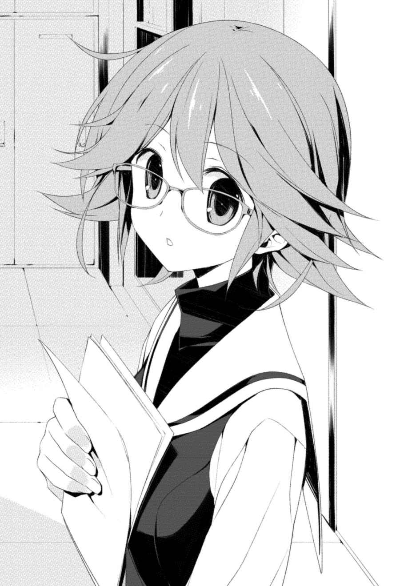
「ちょっと、何してるの。外まで声が響いてる」
発表で使う機材の確認に行っていた泉 理 が戻ってきた。同じくそれを手伝っていた瑞 希 と麻 知 は、雛 絵 たちの様子を見て状況を察したのか、苦笑いを浮かべた。
華 が懇願する口調で言った。
「瑞希、代わって。私帰る」
「だめ。会長は華でしょ？」
「じゃあ、麻知」
「え、本気で代われるって思ってんの？」
「じゃ、じゃあ二人で。あ、それいいかも。私帰るから二人で発表してくれれば──」
「香 月 」
いきなり泉理の右手が伸びて華の顔面を鷲 摑 みにした。どういう握力をしているのか、そのまま一歩も動かずに泉理は華の顔を自分の眼前まで引き寄せた。
笑顔を浮かべていた。はっきりと強調するように泉理は続けた。
「もう一度言うけど。外まで、声が、響いてるの。静かにしてくれる？」
はい、と華の口が動いた。が、頰 を摑まれているために声が出ないようだった。
「会長はあなたなの。あなたが発表しなくてはだめ。確かに順番は最後になっちゃったけど、あなたの発表のあとに、私が生徒会長として全体を総括したものを発表することになってるから、大トリは私。何かあってもフォローするから。わかる？」
わかるしかないだろう。雛絵はものすごい速度で首を小刻みに動かして同意を示す華を見て微笑んだ。瑞希と麻知はまだ慣れていないのか泉理から数歩後ずさっていた。
泉理が手を離すと華は無言で部屋の隅に行き、壁を殴り始めた。音が響いた。「香月？」と泉理が言うとすぐに止め、「死にたい......」と肩を落としてまったく動かなくなった。
「機材は大丈夫そうですか」と、雛絵は泉理に訊 ねた。
「ええ。それは大丈夫なんだけど......」
泉理は言いよどんで、雛絵を手招きした。ドアのところまで連れていかれると、泉理はわずかに隙間を開けて、体育館を視線で示した。
「あそこ」
なんですか、と雛絵は泉理の目を追った。
生徒たちの後ろ、保護者用の席が並んでいる最前列に石 綿 の母親の姿が見えた。足と腕を組み、まだ誰も登っていない壇上を見つめていた。
「臨戦態勢って感じでしょう」
泉理の言葉に雛絵は頷 いた。
そして気づいた。母親の隣にいつかの雑誌社の二人組が腰掛けていた。こちらもいつでも来いというように、手にはメモとペンが握られていた。
雛 絵 は肩をすくめた。
完全に母親が二人を取り込んでいるように見えた。たいしたもんだな、と雛絵は思った。
スピーカーが鳴り、司会の教師の声が響いた。
「それでは時間になりましたので始めたいと思います。ご着席できる方はご着席ください。まず開会の挨拶を、教頭から──」
華 の発表は開始直後から冷や冷やしたものとなった。
名前を呼ばれ、ステージ脇から登場した華の顔色は青白さを通り越してなんだか緑がかっていた。持っている原稿は緊張した手で握り潰されて、足は震え、おまけに手足が同じ側から出ており、あろうことかマイクが置いてある演台を一度通り過ぎた。
思わず雛絵が「なんかああいうおもちゃ見たことありません？」と泉 理 に言うと、軽く頭を小突かれた。
「学生自治研究会会長をやっています香 月 華といいますよろしくお願い致しますまずはこちらをご覧ください」
今まで華の口からは聞いたことのない速度の第一声から、発表は始まった。
「これは事前にお配りして皆さんに書いていただいたプリントの内容をまとめた円グラフになります日常生活における不安の訴えが最も多く次に進路に関する──」
突然、ボン！ という大きな音がして華の口上を遮った。
ステージ下の脇に陣取っている泉理だった。置いてあるマイクを叩 いたのだ。
一瞬あっけにとられた華は、「あ......」と、ようやく背後のプロジェクターに何も映っていないことに気がついたようだった。泉理は華に頷 きかけると、ゆっくりとした動作であらかじめ用意してあったタブレットを叩いた。
プロジェクターに円グラフが表示された。
くすくすと会場が笑う声が雛絵の耳に聞こえてきた。腹が立ったがまさか怒鳴るわけにはいかなかった。雛絵は壇上で固まっている華に向けて「だいじょうぶ」と大きく口を動かした。
華はなんとか頷き、プロジェクターの内容を確かめてから、もう一度ゆっくりと喋 り出した。
「こ、これは事前にお配りして皆さんに書いていただいたプリントの内容をまとめた円グラフになります。ん......と、日常生活における不安の訴えが最も多く、次に進路に関する悩み、それから、け、健康上の問題、と続きます」
華 の声は震えっ放しだったが、基本的に言わなければいけないことはすべて手元の原稿に書いてあったので、小さく間違えることはあっても大きくつっかえることはなかった。映像の表示も間が欲しいところや、華の口上を先行させたほうが効果的なところなど、さすがに泉 理 は生徒会の活動で慣れているのか、如才なく指示を出した。
最初にあったざわつきや失笑めいた声も、次第に静まっていった。
途中から私語はいっさいなくなり、全員がプロジェクターを注視していた。
「お、多かった質問に対して、この場でいくつか回答します。まず、マスコミや記者の人に症候群に関して何か聞かれた際、それに答える義務は私たちにはありません。病院に勤めている方に聞かれたとしてもそれは同様です。必要であれば、『学校側に問い合わせてください』と言ってくださって結構です。ん......と......次に......あ、頭痛やその他の身体の痛みに関することについては、病院側から症候群が原因だとしている症状はないとのことです。実際に頭痛などを訴えて病院に行かれた方が何人かいらっしゃいましたが、そのすべてが精神的なものと診断されています。まだまだ不明なことが多いのは事実ですが、どうか慌てず──」
真剣に発表を聞く生徒たちの様子に、雛 絵 は大きな手応えを感じていた。「人に話を聞かせるときに必要なのは、物語と具体例なの」とは、華の原稿を作成した泉理の弁だ。
他ならない自分たちの声が反映されている発表に、生徒たちはどこか緊張すらしているようだった。むしろ保護者たちのほうが、話し声などはないものの、注意が散漫なような気さえ雛絵はした。
途中、華が前後を軽く間違えたり、そんな華のために泉理が映像を多めに出したり繰り返し表示したりした結果、大幅に発表時間は延びてしまったものの、とりあえず無事に発表は終わった。
「以上に......なります。......どうも......ありがとう、ございました......」
体力が尽きかけて息も絶え絶えになった華が最後の一言を言うと、拍手が起こった。
壇上で華が礼をすると同時に、雛絵たち四人も頭を下げた。
幽鬼のようにふらふらと足を引きずってステージ脇にはけていく華を見送ると、泉理が咳 払 いを一つした。
大トリの出番だった。
ばっちりシメてきてください、と雛絵が言おうとしたときに、司会が言った。
「以上、学生自治研究会会長からの発表でした。えー次が最後の発表なのですが、その前に少し休憩を入れたいと思います」
は？ と雛絵は思い司会を見た。休憩など挟む予定はなかったはずだ。
司会は体育館後方の保護者たちを見ていた。立ち見の保護者たちの中に壁に寄りかかっている者がおり、顔に疲れが浮かんでいた。
「十分後に再開いたします。保護者の方、もし席をお譲りできる方がいらっしゃいましたらよろしくお願いいたします」
なるほど、と雛 絵 は頷 いた。時間が大幅に押してしまったためだろう。
「......仕方ないか。有 村 、香 月 に飲み物でも買ってきてあげて」と、泉 理 。
「飲み物ですか？」
「ええ。出てこないからたぶんステージ脇でへばってるんでしょう。飲食は本当はいけないから、こっそり隠してね」
確かに華 は用具置き部屋から出てきていなかった。鈍い音が聞こえないので壁を殴っているわけではないだろうが。
了解しやした、と雛絵は頷いて体育館の入り口に向かった。
そのとき、席に座っていた石 綿 の母親と目が合い、雛絵は足を止めた。
「............っ」
雛絵は息を吞 んだ。
母親は、笑っていた。雛絵はそれを嘲笑に感じた。
──このくらいのことなの？
そう言われている気がした。席を譲る気はないのだろう、相変わらずどっかりと足を組んでいた。
雛絵は手を握り込み、目を伏せた。
親友の飲み物を買いに行かなくてはならない。床の板目を数えるように顔を下に向けたまま、雛絵は体育館を出た。
「有村」
購買脇の自販機でペットボトルのお茶を買ったとき、不意に雛絵は声をかけられた。
振り返ると石綿が立っていた。雛絵を見て「......どうした？」と眉をひそめていた。
雛絵は一つ大きく息をつき、応じた。
「うんにゃ、なんでも。どしたの？」
「......発表、良かったよ。めちゃくちゃためになった」
「おお、まじかい。華が聞いたら喜ぶよ」
「ああ、がんばってたもんな、あの子」
石綿が笑うのに合わせて雛絵も微笑んだ。確かにがんばってはいた。
雛絵が足を体育館のほうへ向けようとしたが、石綿は動かなかった。何か言いづらそうに上目で雛絵を見ていた。
「どしたの？」
「や、その......あのさ、もしかして母さん、有村に何か言った？」
「え？」
「ほんとはすぐに訊 くべきだったんだろうけど、有 村 忙しそうにしてたからさ。......何日か前だったかな。帰ってくるなり、あの研究会はまだまだダメだわっていきなり言い出して」
「ああ......それ。月曜日じゃないかな」
母親が菓子折りを持ってやってきた日だろう。
「有村と、なんか話したんだろ？ 詳しく教えてくれなかったけど、そんなようなこと匂わせてたから」
「......まあ、いろいろ。研究会のこととか、私の進路のこととか」
「......っ。まじかよ」
石 綿 はくしゃくしゃと頭をかき、悪い、と呟 いた。そして、突然何か思い当たったように顔を上げた。
「そっか......それでかもな」
「何が？」
「......俺さ、就職で希望出したろ」
うん、と雛 絵 は頷 いた。
「卒業したら、母さんのところで働くことになりそうなんだ」
は、と喉の奥から息が漏れた。
「え、どういうこと」
「母さんが働いてるとこの事務。話は通したんだって。......研究会の活動は待ってられないっつって」
「............」
めき、という音が雛絵の耳に届いた。買ったペットボトルを握りしめていた。
自然と訊いていた。
「──石綿くんは、それでいいわけ」
「いいっていうか......。......そうだな、あれだよ、なんだかなあってやつ」
石綿は笑っていた。めきめき、と音が続いた。
「......そうだね、なんだかなあ、だね」
繰り返して、今さらながらその滑稽さに雛絵は腹を立てた。
なんだかなあ。
自分の将来が、なんだかなあ、だ？
「──石綿くん。それは、ダメだ」
え、という石綿の顔と声は雛絵に届かなかった。
雛絵は走り出していた。
「代わってください」
泉 理 たちが待っていた用具置き部屋に突入すると、雛 絵 はそう切り出した。
「......どうしたの」
やはり部屋でうなだれていたらしい華 の介抱をしていた泉 理 は、雛絵の様子に顔をしかめた。瑞 希 と麻 知 、そして華もただならない様子を感じ取ったようだった。
「先輩の発表、私にやらせてください」
「待ちなさい。どうしたの。何かあったの？」
「......石 綿 くんの母親です」
「何か言われたの」
雛絵は先ほどのことを説明しようとした。けれど上手くその理由を言葉にできなかった。
気持ちが昂 っていた。そちらを表す言葉はすぐにわかった。
怒りだった。
その大きな原因の一つはすぐに思い当たり、雛絵は言った。
「先輩、覚えてますか。今週の月曜日、石綿くんの母親が研究会に来たときのこと」
泉理は頷 いた。
「そのとき、どういう会話の流れかは忘れちゃいましたけど、こう言われたんです。『気持ちはわかるけどね』って」
先ほどの石綿の諦めたような笑顔を雛絵は思い出した。母親は石綿のためを思って行動したのだろう。
そして石綿はそれを受け入れようとしていた。
勝手に決まっていく将来を認めようとしていた。
「いいですか、あの人は『気持ちはわかるけどね』って言ったんです。私に対して」
今は近くにいない大切な戦友の彼も、かつていちばん大事な人のためを想って行動した。
その大事な人のための将来と、やりたいことを何よりも優先して。
雛絵は思うままに言葉を荒らげた。
「あいつはそう言ったんです。私たちがこうやって正しく苦しむことができてる のが誰のおかげか知ってる私に、それを見せつけられたこの私に、症候群者でもないあいつが言ったんです。こんなのは揚げ足取りです、けどねえ、あいつは全部わかってるみたいな顔して言いやがったんですよ、はっきりと、『気持ちはわかるけどね』って！」
狭い室内に自分の怒鳴り声が反響するのを雛絵は聞いた。視界がいつの間にかわずかに滲 んでいた。瑞希と麻知は怯 えた表情をしていた。
泉 理 と華 は違った。その顔は優しかった。
雛 絵 の目の前に、泉理が原稿を差し出してきた。
「やりなさい」
一瞬、雛絵はなんのことかわからなかった。感情が沸騰していた。
「やってきなさい。生徒会長としての総括も入っちゃってる原稿だから、そこは無視していい。都合のいいところだけ使いなさい。時間がないからほとんど即興になっちゃうでしょうけど、あなたはそういうの得意でしょう。ふだんあれだけ喋 ってるんだし、文芸部の部長なんだから」
「あ......」
言われて、初めて思い当たった。大トリである泉理は、生徒会長として発言しなくてはならなかったのだった。
泉理はわかってる、というようにかぶりを振った。
「気にしなくていい、なんとでもなるから。というより、次の発表が最後って言ってしまってるんだから、どうもできないでしょう。いいから、言いたいことを言ってきなさい」
「............」
女帝は格好良いなあ、と雛絵は泉理を見て思った。
手に持っていたペットボトルのことをようやく思い出し、雛絵は華にそれを差し出した。
が、華はそれを断った。
「いい。飲んでいいよ。がんばって」
「......さんきゅ。愛してるぜ」
休憩時間が終わる旨を告げるアナウンスがドアの向こうから聞こえてきた。
雛絵は泉理の原稿に目を落とした。
そしてそこに書いてあった内容に少なからず驚き、部屋から出ていこうとしている泉理を呼び止めた。
「先輩、これ......」
雛絵は原稿を指差した。泉理は微笑んで答えた。
「少しはあなたの言いたいことと重なっていた？」
こくん、と雛絵は頷 いた。まさか泉理が生徒会長としてこんなことを言うつもりだったとは思わなかった。
「言ってなかったけどね。私も気持ちはわかるって言われたことは、正直言って腹に据えかねていたの。というか、むかつく」
むかつく。
泉理にしては珍しいその単語と言いかたがかわいく聞こえ、雛絵は笑った。
「最後の発表になります。学生自治研究会副会長であり、生徒会会長の南 沢 泉 理 さん、よろしくお願いします」
司会の声が響くと同時に、雛 絵 はステージ脇から演台に向かった。
すぐにざわつく声が生徒たちから聞こえてきた。雛絵と泉理の顔と名前が一致していない保護者たちも、生徒たちを見て不審がる様子だった。
ステージ下の脇に華 たちといっしょにいる泉理に、司会の教師が慌てて何事か囁 いていた。しかし泉理は動かなかった。雛絵のほうを見て目で合図を送ってきた。
雛絵は頷 いて一礼し、マイクに近づいた。
「学生自治研究会会員の有 村 雛絵です。南沢さんに代わりまして、わずか一ヵ月の活動しかしておりませんが、会員としての所感を述べさせていただきます」
ざわめきが大きくなり、泉理の元に別の教師たちが駆け寄ってきた。
泉理は慌てず応対しながら、やはり「早くしなさい」という感じに手をひらひらと振ってきた。止められるわけにはいかなかった。
どこから切り出すかと思ったとき、生徒の列の中で啞 然 としている石 綿 の姿が雛絵の目に飛び込んできた。
そうだ、そこから始めるか、と雛絵は胸中で頷いた。
どうあれ、今自分の中でくすぶっている感情は、彼と彼の母親が原因の一端だった。保護者席の母親と、その隣にいる二人組の記者に目を移すと、不穏な目で雛絵を見据えていた。
上等、と思いながら雛絵は泉理の言葉を思い出した。「人に話を聞かせるときに必要なのは、物語と具体例」。
一席ぶとう。口火を切った。
「先日、私は友人三人といっしょに出かけました。正直に言ってしまいますと、デートでした。ダブルデートです」
ネタにしてごめんと、石綿と、列の中のどこかにいるだろう増 田 に雛絵は頭の中で詫 びた。横目で泉理を見ると、ぽかんとしていた。
さらに会場のあちこちで不審がる声が上がった。雛絵は構わず続けた。
「女性の友人は同じ研究会の会員で、何度もいっしょに出かけていましたが、男性の友人二人とはそのとき初めていっしょに出かけました。行き先は渋谷。決めてくれたのは男性陣で、駅前に集合したときにまずこう言われました。『ごめん、俺たち他に場所あんまり知らなくて』。とても申し訳なさそうでした。学生の皆さんはそのときの気持ちがわかると思います。ここにいらっしゃる保護者の方、先生方は気持ちがわかりますか？」
不意に生徒の一部が静まり返った。
「現在、碧 朋 の学生が遊びに出かけるときに、積極的に渋谷を選ぶ人はほとんどいないと思います。症候群にまつわる影響があちこちにあり、否応なく自分たちの症状のことを思い出すからです。場所そのものの風景は当然として、関連書籍はいまだに渋谷の書店では平積みされていますし、あの事件の現場を見物にやってくる人たちもいます。私は彼らに気にしなくていいと言いました。それがデートの始まりでした」
石 綿 に目をやった。
啞 然 とした表情はなくなり、ただ雛 絵 の言うことに耳を傾けていた。
「ビルに入っている雑貨屋さんへ行くために、エレベーターに乗ろうとしたときでした。全員が乗り込む瞬間に、わずかに身を竦 めました。誰も何も言いませんでしたが、感じていることは一緒だと思いました。理由はわかりますか？ 鏡です。エレベーターの中の大きな鏡に映った自分に、私たちは一瞬ですが確かに緊張しました。病院で鏡を見たときのことは絶対に忘れられません。ここにいる学生全員がそうです。そのときのことが原因で、鏡に対する恐怖症を患ってしまった人もおり、退院できずに病院で治療を続けている人もいます。症状が重たい人はガラスや磨かれた金属など、わずかに姿を反射するものすら見ることができません。先生方は、以前より教室のブラインドやカーテンが閉まっているのが多いことに気がついていますか」
雛絵ははっきりと教師たちのほうへ顔を振った。
倣うように生徒たちの一部が同じ方向へ視線を投げた。泉理のそばにいた教師たちは急に気まずそうにして、問い詰めていた泉 理 から少し距離を取るように下がった。
「男性陣の行きつけだという、少しお洒落 な店で食事をしました。近くの席に、同じ年頃のカップルが座っていました。聞こえてきた会話の内容から、違う学校に通っている高校生だということがわかりました。二人は進路の話をしていて、女の子は進学するつもりのようでしたが、男の子は迷っているようでした。男の子がこう言いました。『別に就職でも進学でもどっちでもいいんだよな。良い大学出て良い会社入っても社畜だろうし、いきなり就職したってどこもブラックだろ』。自分のことを棚に上げてしまいますが、ガキだなと私は思いました。そして、私たちとは違うなと思いました」
「先日、三学年全体に進路希望調査が行われて、ほぼ全員が進学を希望しているという結果が出ました。理由はおわかりかと思いますが、元症候群者が社会に出て働くうえでの準備が、法の面でも正しい認識の面でもできていないからです。私はカップルに腹を立てました。私たちはそれどころじゃないんだ、幸せそうにしやがってと思いました。嫉妬も少なからずあったと思います。断っておきますが、これらのことは特別なことではありません。私たちの日常です。デートは楽しいものでした。けれどデートの最中にそういうことを思ってしまうのが、私たちの日常なんです」
生徒たちはいつの間にか静まり返っていた。
雛 絵 は泉 理 の原稿に目を落とした。その場で自分の言葉に変換しながら続けた。
「先ほど会長である香 月 華 からも簡単に説明がありましたが、学生自治研究会設立の際に、多くの保護者の方からご意見をいただき、活動内容に関して具体的な提案もいくつかいただきました。その中に、次のような提案がありました。『症候群の悲惨さを訴える講演会を病院と共同で定期的に催してはどうか』。『症候群に関する正しい情報を発信する媒体の作成や、症候群に対する研究協力などを通じて、将来的に元症候群者のみで運営、経営できる団体を目指してはどうか』。なるほど、と私は思いました。先生方に確認すると、学校としてもこの提案は気に入っており、前向きに進めようと思っているとのことでした。私はまた、なるほどと思いました」
雛絵は原稿から顔を上げた。
保護者席にいる石 綿 の母親をはっきりと見据えた。こちらを見ていた。まわりの保護者たちはその提案に関して納得するように頷 いていた。
「──あくまで個人的な見解なのですが。失礼ながら私はこう思いました。なるほど、この人たちは今の私たちをまるで、何一つ、わかっていないと」
とたんに保護者席と教師たちがざわついた。
母親の表情が怒りのそれに変わり、組んでいた足が解けて一瞬腰が浮かび上がるのを雛絵は見た。
泉理を確認すると、こっそりと司会のスタンドマイクの前に陣取っているのがわかった。やめさせないためだろう。
今の言葉は、以前雛絵が母親の提案に対して、感想を求めたときの泉理の言葉だ。
まったく同感だった。
「繰り返しますが、私の個人的な見解です。リハビリで入院していたとき、私たちは看護師さんからこう言われました。『がんばれば全部元通りになるからね』。それは噓 だと、言われた全員がわかっていたはずです。あえて侮 蔑 的 な言葉を使いますが、元症候群者であるというレッテル、碧 朋 学園に通っているというレッテルが貼られている以上、元通りになどなりません。お洒落 な店にいたあのカップルの立ち位置に、私たちは戻ることなど一生できません。そして先ほどの提案の中の、『症候群の悲惨さを訴える』、『元症候群者のみで運営、経営できる』という部分。これは病院で言われたことと真逆です。元症候群者であることを自覚し、利用して、私たち以外とは線を引いて付き合っていけということです。ですが私たち以外に同じ症状の人がいないこの症候群の悲惨さを訴え、まるで自分たちから檻 に閉じこもるように同族でまわりを固めてそれ以外を相手取ることに、私は意義を見出せません。もっと直接的に言います。そんなことを、心の底から本気で取り組む気に、今の私はなれません」
どこかから、「ちょっと！」という女性の声が聞こえた。
石 綿 の母親かと思ったが、そうではなかった。母親は厳しい形相で、ただ雛 絵 を睨 みつけてきていた。もしかすると、母親といっしょに活動をしているという保護者の声かもしれなかった。
後を追うように「なにそれ」「どういうこと」という声が聞こえてきた。しかし雛絵の見る限り、生徒たちは誰一人喋 っていなかった。
「静粛に願います」
突然、きわめて硬い泉 理 の声が響いた。陣取った司会のマイクを使っていた。
雛絵は目礼して泉理に応じ、わずかに静まった隙間に続きを置いた。
「もう一度言います。私の個人的な見解です。もし先ほどの提案に心から賛同し、取り組んでみたいと思う学生の方がいたら、会のほうにお越しください。歓迎します。会として手伝うことを約束します。ですが、当事者である私たちの誰かが心底からやりたいと言わない限り、私は拒否します。保護者の方や先生方の提案のみで会を動かすことは、断固として拒否します。何様だと思われるでしょうが、私たちは守られ養われていますが、生きていくのは私たち自身です。一般人と同じに生きろと言われ、一般人とは異なって生きろと言われ、一般人の中で生活しながらも一般人とは違う自分を、他ならない自分から見せつけられている今の私には、先ほどの提案に心から賛同することはできません」
雛絵は再度石綿を見た。
相変わらずまっすぐに見てくれていた。
「デートのお相手の男の子が、コンビニのアルバイトの面接に落ちたことを教えてくれました。コンビニ側は不採用にした理由をはっきりとは言わなかったそうですが、元症候群者だからということを匂わせていたそうです。私はその場で、会員の女の子と会として動けることはないか相談しました。結論はすぐに出ました。ありませんでした。雇われたうえでの不当解雇ならともかく、その時点で私たちができることはありませんでした。こう思われていると思います。ではいったい、私たち学生自治研究会は何をする会なのか」
一拍おき、今度は母親を見た。
怒りの表情が混乱とない交ぜになっているようなそれになっていた。石綿とのデートのことは知らなかったようだった。
「設立の際の概要に明記しました。元カオスチャイルド症候群者を取り巻く環境について考える会であると。これは考えるだけで何もしないという意味ではありません。けれど私たち碧 朋 学園の学生は、まず第一に考えることが必要だと思っています。私はカップルに嫉妬しました。羨みました。おそらく今見てもそうでしょう。幸せそうにしやがってと絶対に思います。ではなんで私は嫉妬して羨むのか。相手が元症候群者ではないから。その苦しみを知らないから。私たちと違って自由に進学か就職かを選べるから。おそらく全部です。けれど私はあの二人の名前も年齢も知りません。幸せかどうかも知りようがありません。もし二人が私の知らない難病を乗り越えて結ばれたカップルだったと聞いたら、嫉妬もしなかったかもしれない。もちろんそんなことは思っていませんが、相手の状況一つを聞いただけで印象が変わるなら、私はそもそも羨む必要があったのか」
「私たちは考えなければいけません。鏡やガラスを怖がり、同じ年頃の一般人を見て気持ちがざわつくのが嫌なら、そういった自分を変えたいなら、考えなければいけません。根本には、私たちが一般人と比べて不利な立場にあるということがあるのでしょう。けれど私たちが『あなたたちより不幸な、今日食べるものにも困っている人たちが世界には大勢いる』と言われても、だからなんだと身勝手にも思ってしまうように、私たちがこんなに不幸なんだということを並べ立てても、まわりは何も変わりません」
泉 理 の原稿の主旨はここで終わっていた。
会場は静まり返っていた。
雛 絵 は原稿から顔を上げ、自分の気持ちを表す言葉を探し、手前の学生たちに語りかけた。
「......生徒の皆さん。症候群の原因はよくわかっていません。これからもわからないかもしれない。けれど事実として、私たちは自分たちの症状に気づかなかった。見て見ぬふりをしていました。たとえそれが症候群のせいだったとしても、あのときと同じ自分ではいけないと思いませんか。都合の良い声だけを受け入れていた結果が、あのときの自分だとは思いませんか。考えなければいけません。私たちはこれからどう将来と向き合って、どうしていきたいのか。私たちは真剣に、考えなければいけません」
最後に雛絵は会場全体を見渡した。
全員が壇上を見つめていた。
受けて雛絵は、頭を下げつつ告げた。
「保護者の皆さん、教師の皆さん、いろいろ失礼なことを言いました。けれどどうか、私たち元症候群者自身が、一人残らずしっかりと考え、悩むことができるよう、力を貸してください。これで発表を終わります。ご清聴ありがとうございました」
ほう、と息をつき雛絵は頭を上げた。
緊張と沈黙が残っていた。
そのままはけようとしたときだった。
小さく拍手が響いた。
驚いて雛絵は足を止め、拍手が聞こえてきたほうを見やった。
石 綿 だった。手を叩 いてくれていた。
数秒遅れて、明らかに場違いな囃 す口笛と拍手が続いた。見ると、増 田 だった。端のほうに並んでおり、気づかなかった。
仕方なく苦笑して、雛絵は手を振った。するといきなり生徒たち全体が拍手をした。それまででいちばん大きな拍手だった。響いた増 田 の口笛に触発されたのか、クラスメイトの連中が口々にふざけて「ひなー！」「有 村 ー！」と黄色く叫ぶのが聞こえた。
我に返った教師たちは慌てて、泉 理 が陣取っていたマイクを奪って「静かに！」と叫んだが拍手と囃 し立てる声は止まなかった。
雛 絵 はステージ脇ではなく、壇上からそのままぴょんと飛び降りて泉理たちの元へ向かった。
泉理は呆 れたように笑っていた。
「言ったった。言ったりました」
雛絵は手を上げた。軽く振りかぶると、泉理は「まったく......」とため息をつきながらも手を上げてくれた。
ばちんとハイタッチぎみに打ち鳴らすと、後ろにいた華 たちも手を上げてきた。そのままばちんばちんと雛絵は手を合わせた。
保護者たちは会場の様子にあっけにとられていた。
教師たちは「静かにしなさい！」と繰り返したが、生徒たちは雛絵を含めて誰一人聞いていなかった。
「......結局、進学か」
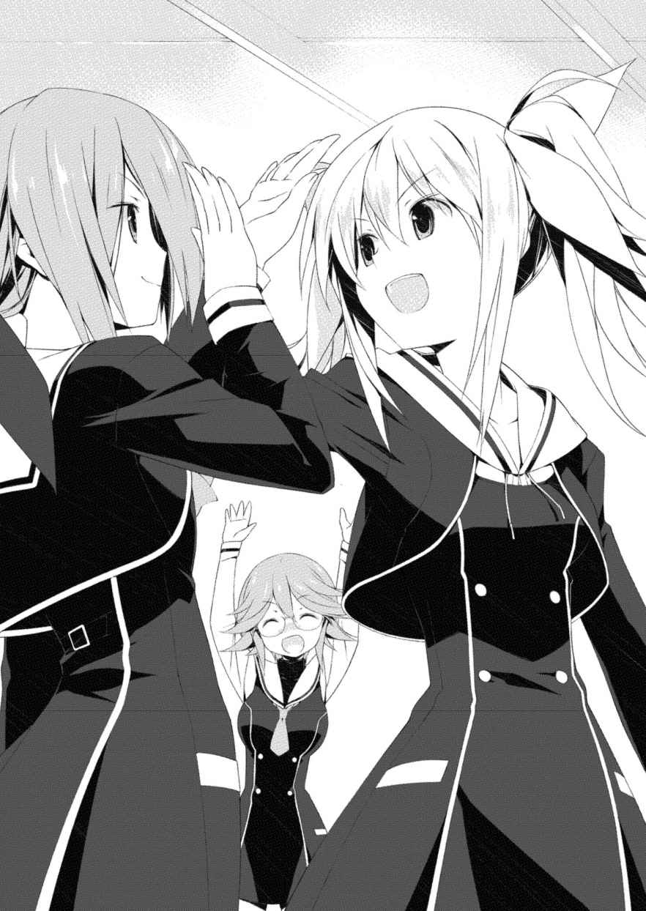
終業式終了後。
雛 絵 は職員室に呼び出されていた。泉 理 や華 たちもそれぞれの担任に呼び出され、研究会の発表に対して説教を食らっているようだった。
ひとしきり小言を言われたあとに、雛絵は進路希望調査票を取り出して担任に手渡した。
進学に印をつけていた。
つい先ほど書いたものだった。
「すみません、どこの学校を志望するかはまだ決めてません」
終業式が始まる前までは進学か就職か結局決めきれておらず、担任に頭を下げてもう少し待ってもらうつもりだった。しかし自分で大演説をやらかしたあと、不思議と雛絵は自分の気持ちが定まっていることに気がついた。
自分で言ったとおり、考えなければいけなかった。
そのためにはもう少しの時間と、正しく学べる環境が必要だ。
「先生方は年内、もう少し出勤しますよね？ それまでには決めてきますから」
すると担任は、いや、とかぶりを振った。
「年明けでいい。というか、冬休み明けでいい。それまでじっくり考えてくれ」
「......え」
雛絵がきょとんとした表情を浮かべると、担任は歯切れが悪い様子で頭をがりがりと搔 いた。そしてふと思い当たったように立ち上がり、窓際に向かった。
振り返らないまま担任は言った。
「......終業式のあとな。何人か生徒が訊 いてきたんだ。提出した進路希望調査票、返してもらうことってできますかってな」
「......まじですか」
「面倒だと思ったが、返したよ。そいつらは冬休み明けに再度提出してもらうことになってる。だからお前もそれでいい」
担任はカーテンを閉めた。
窓の反射が遮られた。
「ありがとうございます」
雛絵は頭を下げ、自分の進路希望調査票を持って職員室を辞した。
歩きながらひらひらと調査票を振ると、そういえば何かの小説でこういう書類で紙飛行機を作って飛ばす描写があったなあ、と雛絵は思い当たった。
それほどの自由はないとわかっていた。
けれど担任はカーテンを閉めてくれた。
こういうところから始めていきますか、と雛絵は思った。
翌日、冬休み初日。
雛 絵 は石 綿 を呼び出した。
ダブルデートで使ったあの小 洒落 た店だった。渋谷以外にしようと雛絵は思ったのだが、このあと用事があるという石綿が近くのこの店を提案してきた。
「告白のことだけど。あなたとは付き合えません。ごめんなさい」
雛絵はまっすぐに石綿を見てそう告げ、頭を下げた。
苦く気まずい感情があったが、以前のように適当な空気をまとうわけにはいかなかった。
「......そっか」
雛絵が頭を上げると、石綿は薄く微笑んでいた。
「いいんだ。わかってたから」
「え」
失礼ながら意外に思った雛絵は驚いた。
石綿の母親のことでいろいろありはしたが、はたから見ればそれがきっかけでそれなりに距離は縮まったように思っていた。
「前さ、有 村 を病院に呼び出したことあったじゃん。その帰りに、公園に寄ったときにそう思ったんだ」
「......私、なんかすげなくしたっけ」
「宮 代 先輩だろ？」
あ、と雛絵は思い出した。そういえば別れ際、かつて宮代のキャンピングカーがあった場所を眺めていたとき、石綿はなにかを言おうとしていた気がした。
「あのとき、病院に呼び出したお詫 びを口実にして、週末デートに誘うつもりだったんだ。『週末予定ある？』って訊 いたんだよ」
「ご、ごめん、無視したわけじゃなくって──」
「や、わかってる。だから、宮代先輩だろ？ あそこに住んでいたことくらい誰でも知ってる。そんときの有村の顔見たら、なんとなくわかったから」
「いやいやいや、それは早とちりで」
「そうなの？」
訊かれて、雛絵は言いよどんだ。
確かにそれは早とちりだ。しかし、宮代が理由の一つであることは間違いなかった。
自分とは違う場所にいる戦友の彼と、石綿ではなく自分自身を比べたときに、今の自分で誰かと付き合うということが、雛絵はどうしても上手く腑 に落ちなかった。
「いや......まあ、宮代先輩なのかもね」
ほんのわずかに諦めぎみに笑った雛 絵 が言うと、石 綿 は頷 いた。
「じゃあ、俺行くわ」
突然席を立った石綿に、「え、もう？」と言いかけて雛絵は口をつぐんだ。そう言うのはあまりに気が利いていない。
微妙な表情をしていた雛絵に、石綿は慌てて手を振った。
「違う違う、その、怒ってるとかじゃなくて。これから母さんの職場に行くんだ。勉強のためにさ」
「......勉強？」
ああ、と頷いた石綿は笑っていた。
「昨日母さんに言ったんだ。将来、母さんのところで働くかどうかはもう少し考えさせてほしいって。久しぶりに喧 嘩 したよ。それで結局、実際に職場を見せてもらうことになって。他にもいろいろ見れるところがあれば見てみようと思ってんだ。もしかしたら、就職じゃなくて進学することになるかもしれない」
「......そっか」
「有 村 の発表、良かったよ。母さんはずいぶん腹立ててたけど、なんか思うところはあるみたいだった。昨日家で記者の人に、有村の発表は一言一句そのまま載せろとか電話で怒鳴ってたから」
「......まじで？」
聞いていなかった。穏やかな内容ではなかったはずだ。またやっかいなことになりそうだな、と雛絵は思った。
石綿が手を振った。
「んじゃ、また学校で」
「うん。あ、そうだ石綿くん。発表のとき、ありがとね」
「......なにが？」
「最初に拍手してくれたじゃん」
ああ、と石綿は思い出したようだった。照れくさそうにしていた。
「別に、たいしたことじゃ」
「──いいや。それは違うぞ、石綿少年」
怪 訝 そうにした石綿に、雛絵は言った。
「いつだって、最初の人がいちばんしんどいんだ」
雛絵はそれを知っていた。
戦友に告げられなかったことだ。直接言えなかったことだ。
「君はたいしたことをしたんだよ」
少しの心地良い沈黙があり、石綿は「そっかな」と呟 いた。雛絵は「そうだよ」と頷いた。
「んじゃ」
「うん。あでぃおすぐらっしあ」
改めて手を上げた石 綿 に、雛 絵 は手を振って応えた。
店を出ると、雛絵は駅に向かって歩きながら携帯を取り出した。
泉 理 に石綿の告白を断った旨をメールし、ふと思い出して「そっちはどうなってます？ 増 田 さん」と付け足した。
気温は容赦ない寒さを叩 き出 していたが、冬休み初日にふさわしい晴れ間が広がっていた。
今年は明日のクリスマスイブが週末に重なっていた。雑踏は心なしかいつもより浮かれており、赤と白の飾りつけがそれを助長していた。
突然、身体を動かしたいような、大声を上げたいようなうずうずとした気持ちが雛絵の中に膨れ上がってきた。
懐かしい気持ちに雛絵は微笑んだ。
今なら久しぶりに何かを書けるかもしれなかった。
結果的に見れば終業式での私たちの発表は、研究会にとって良いものになったと思います。正確に言えば、私たちの発表というより有 村 の発表かしら。方々から怒られはしたけど、会のこれからの方向性の指針になったし、少なくとも私はけっして小さくない力を貰 えた。それは香 月 も同じだったと思います。
私たちと同じ気持ちを学生の皆が持っているとは思いません。けれどそれに近い気持ちを抱えている、もしくは近い気持ちを持とうとしてくれている動きはあると思っています。まあそのせいというかそのおかげというかで、取材や相談事が増えていて、会の忙しさに拍車がかかりそうなんだけれど。香月の愚痴が増えて逃げ出そうとするのは目に見えているので、なんとかしなくちゃとは考えているんだけどね。
そうそう、有村と例の石 綿 くんなんだけれど、ダメだったみたい。お似合いだとは思っていたんだけど......正直、そうなるだろうなともどこかでわかってはいたの。あの子ああいう性格だから、わりとなんでも器用にかわしたりこなしたりできるんでしょうけれど、最近いろいろ悩んでいたみたいだから。でも、後ろ向きに決めたわけではないみたい。昨日うちにご飯を食べに来たとき、「イケメンの誘いを断ってしまいました。私は女としてランクが上がりました」ってよくわからないこと言いながら、すっきりした顔で笑っていたから。
そういえば、有村が何か私と増 田 くんのことを勘違いしている節があるの。増田くんは想像どおりというかひょうきんなキャラクターどおりというか顔が広い人だったから、ご飯を食べながら学生の皆の意見や考えていることを、研究会の活動としていろいろ訊 いていただけだったんだけれど。それとも、あれはわかっていてからかっているのかしら。
......さて、大切な報告が一つ。
日取りが決まりました。
十二月三十日に、伊 藤 くんが医療少年院に移送されます。
移されること自体はすでに知っていたと思うけれど、症候群の研究に協力している私たち関係者にも、本日正式に連絡がありました。
本当に、ごめんなさい。警察への証言で可能な限りのことはしましたが、決定は覆りませんでした。伊藤くん自身が決定を受け入れていることは知っています。けれど私たちは動かずにはいられなかった。けれど、覆らなかった。
ごめんなさい。私なんかより、あなたのほうがよほど心を痛めているのはわかっています。けれどこのことを知らせないのは、してはいけないことだと思うから。
どうかご自愛を。
その光景が目の前に広がった瞬間、これは夢だと澪 は判断した。
見慣れた場所だった。以前アメリカにいたときに所属していた認知科学研究所だ。清潔に保たれている室内に並べられたいくつかのベッド。注射器や喉頭鏡、採血のときに使うチューブなどが銀色のトレイに並べられていた。実験区画。澪はそこに立っていた。
夢だとわかっているのに激しくなる動 悸 に澪は顔をしかめた。汗がふき出しどうしようもなく焦り、何かを叫んだ。おそらくやめろという意味合いに類する何かだ。取り乱してベッドに取り付いた。同時に自分の頰 に涙の感触があった。この夢では飽きた感触だった。
ベッドに寝ているのは小さな女の子と男の子だった。二人とも知っていた。笑い合った仲だ。一緒の時間を過ごした友人だった。日帰りだったが旅をしたこともあった。ご飯をいっしょに食べた。友人と呼べる知り合いがほとんどいない澪にとって、彼女たちは心の貴重な部分を占有している存在だった。
澪は女の子の手を取った。顔を覗 き込んだ。瞳孔が振動し散大していた。涙で目がにじんでいる自分より視界があいまいだろうとわかった。あるいはすでに見えていないのかもしれない。心拍と血圧を示す機器から異音が響いていた。
震える声で、おい、と澪は呼びかけた。同時に覚めるなと自分に叫んだ。
しかし叫びは届かず、いつものように世界が白み始めた。
女の子の口が開いた。
「────」
おそらくはたった一つの言葉。
しかしやはりそれがなんだったのかわからないまま、白が飛び、夢が終わった。
Ｃ：あなたは何者なんですか。
Ｋ：お前と同じだ。
Ｃ：どういう意味です。
Ｋ：宮 代 拓 留 と伊 藤 真 二 の信奉者だ。そうなんだろ？
Ｃ：調べたんですか。
Ｋ：お前は潜るのに慣れているようだが、潜られる側としての対応はかなりお粗末だな。調べたと言い切る手間もかからなかった。
Ｃ：通報する気ですか。
Ｋ：何を聞いてたんだ。協力すると言っただろう。
Ｃ：信じられません。
Ｋ：それでいい。ここで信じるような馬鹿なら協力する価値もない。
Ｋ：お前の調べた情報。それは合っている。
Ｃ：情報？
Ｋ：二〇一六年十二月三十日。時間はまだわからないが、その日に伊藤真二は関東医療少年院に移送される。
Ｃ：なぜあなたは知っているんです。
Ｋ：理由を言ったところでそれの正当性をお前はどう証明する気だ。こちらに潜るか？ 言っておくがこちらはお前が今までに相手をしてきたような阿 呆 じゃないぞ。
Ｋ：お前の計画は現状では確実に失敗する。というか、実現まで至らない。
Ｃ：そんなことない。
Ｋ：脅迫電話と素人の爆弾程度ではどうにもならないんだよ。第一その後の決め手はこれというものを考えついていないんだろう。手伝ってやる。
Ｋ：伊藤真二の身柄を警察が移送中、それを襲い、こちらの手に奪還する。
澪 が布団で目を覚ますと、胸元に違和感があった。
「......お前な。勝手に入るなと言ってるだろ」
正体に気がついて呆 れた声を出すと、布団の中から吞 気 に「にゃあ」という返事が返ってきた。一匹の黒猫だった。以前電気ストーブが壊れてしまったときに、寒さに耐えきれず湯たんぽ代わりに部屋に招き入れた野良猫だ。とうにストーブは直っていたが、それ以来部屋に入れるまで窓を引 っ搔 き続けるようになってしまった。
渋谷のアパートの一室だった。家賃は間違いなく渋谷で最安値の部類に入る金額で、その安さに見合った狭さと古さのワンルームだった。清潔に使えば少しはみすぼらしさがましになるのだろうが、生憎澪 は部屋が散らかっていても自分の生活の邪魔にならなければ気にならない性 質 だ。あちこちに脱ぎ散らかした衣類やデータ化を後回しにしている書類などが散乱していた。
寒さを十分に遮ってくれない煎 餅 布団を跳ね除け、抗議の声を上げてきた猫の首根っこをつかんで部屋の隅に放り投げると、澪は風呂場に向かった。
ふだんより頭が重かった。数時間前までチャットをしていたせいか、おもしろくない夢を見たせいか。両方だろうなと澪は毒づくと、シャワーの温度を高めに捻った。湯煙で曇る鏡の中で肩口の古傷が目に入った。しっかりと目を凝らさないともうほとんどわからなくなっているが、それはかつて歯型だった。
大切だった女の子につけられた傷だ。
「............っ」
夢の内容を思い返そうとし、澪は頭を振った。どうせ思い返すことなどできないに決まっていた。もう何度も試したことだ。
風呂場から出てメールや澪自身が管理しているいくつかのサイト、大手マスコミのサイトなどを巡っていると、家を出る時間になっていた。
「今日はイブだ。チキンを食い溜 めるなら、浮かれた連中が集まってる公園や繁華街に行くんだな」
そう言って澪が猫を窓から放り投げると、慣れた様子で猫は向かいの塀の上に着地し、まるで了承するように一声鳴いて姿を消した。
クリスマスイブ。
くだんの十二月三十日まで一週間を切っていた。
「......問題ないな。これから移送の前日までもう一度精密検査らしいが、おそらく形だけのものだ。何も出ないだろ」
モニタに表示されたデータを見ながら澪が言うと、神 成 は安心したように頷 いた。
代々木にあるＡＨ東京総合病院の一室。
カオスチャイルド症候群に関する研究という名目で、警察経由で澪個人に貸し与えられた部屋だ。定期的に看護師が清掃に入るため、澪が資料やデータを広げている机回りを除けばアパートと違って清潔が保たれていた。病院全体でそうする方針なのか、窓際に先日まではなかった小さな作り物のクリスマスツリーの鉢が置いてあった。
モニタのデータは澪にとって見慣れた人間のものだった。
伊 藤 真 二 。
一連の事件において宮 代 拓 留 とともに実行犯の一人とされており、特に橘 結 衣 の命を奪った犯人とされた人物だ。犯行そのものは残虐を極めたが宮代に教 唆 されたこと及びカオスチャイルド症候群者であることが鑑みられ、医療少年院送致の決定が下された。
データはこれまでＡＨ東京総合病院も含めてさまざまな専門機関をたらい回しにされて出てきたものだった。中にはバウムテストやロールシャッハテストのような投影法と呼ばれる心理テストの結果までもが含まれていた。
澪 はため息まじりに言った。
「この分だと、医療少年院に移送されてもすぐに研究機関に引っ張り出されるだろうな」
すると神 成 は怪 訝 な表情を浮かべた。そしてモニタを覗 き込むようにして言った。
「データが芳 しくないのか？」
「正直なところ、頭打ちだ。各機関もそうだろうな。心理テストなんぞをやっているのがいい証拠だ。こんな観察者の主観によって結果が変わってくるものを成果として出してきている時点で行き詰まっている。何々と思われる、なんて語尾で終わってる報告書をいくつ読んだと思う」
「彼自身の体調はどうだ。大丈夫そうか？」
「会ってないのか？」
神成からの問いに、澪は問いを返した。すると神成は表情を暗く落とした。
「もうずいぶんな。ご両親ですら面会謝絶の措置がとられてる。せめて移送される前に声をかけてやりたいんだが......」
「......あんたはもう少し上手く立ち回れると踏んでたんだがな」
「無茶言うな。いろいろと綱渡りなんだよ、これでもな」
神成が警察の上層部から圧力をかけられていることを、澪は前々から聞いて知っていた。一連の事件に関して、刑事の中で最も踏み込んでいたのは神成だ。だが事件が一 先 ずの収束を見たそのあとの管理は、警察という機構そのものに預けられた。神成は事件の真相すべてを警察に話したわけではなかった。話したところでどうにもならないどころか、余計な騒ぎを起こして、真相の裏に潜む蛇をつつくことにもなりかねないからだ。
そういった態度や動きを感じ取られたのだろう、神成は徐々にだが事件に関連する物事から意図的に遠ざけられていた。
その影響は神成が協力を仰いでいる澪にも及んでいた。澪自身も、伊藤とはしばらく直接顔を合わせていなかった。研究にかこつけてというお題目も、成果を上げられずに効かなくなっている。
今日からの精密検査も澪は担当から外されていた。
「やはり移送は担当しないのか」と、澪。
「ああ。その件自体の連絡はあったが、ほとんど事後承諾だった。当日の移送そのものも別部署の人間がやる。......まあ、こっちに断りを入れてくるだけまだましだけどな」
自嘲ぎみに笑って言う神 成 だったが、忸 怩 たるものがあるのか声は沈んでいた。
やはり神成は移送を担当しない。
仕方ない、と澪 は小さく呟 いてから言った。
「神成さん。あんた今日は何 時 まで仕事だ」
「ん？ なんで」
「今日はイブだ。相手はいないんだろ。何か奢 ってくれ」
「......どういう気まぐれだ。というか、そこは相手がいるのかどうか確認するのがマナーだろ」
「いるのか」
神成はしばらく黙ったあと、高いものは期待するなよとばつが悪そうに言った。
「あとハラミとギアラとハツ刺しを二つずつ。それから野菜の三種盛りとチャンジャと冷麵」
「はい。ただいまクリスマス限定で生親子丼がお安くなっていますが......」
「じゃあそれも。あと私にウーロン茶のお代わりを」
かしこまりましたと告げて去る店員を澪が見送ると、差し向かいに座っている神成と目が合った。
「なんだ」
「少しは遠慮を......いや、なんでもない......」
代々木にある焼き肉屋に入ってすでに一時間が経過していた。学生がふだんから通うほどではなく、かといって本当の味を求める人間が行きつけにするほどでもないといった店だった。週末のイブにもかかわらずカップルはおらず、殊勝にも仕事帰りのサラリーマンで店内はごった返していた。
追加で運ばれてきたものを手当たり次第に澪がぱくついていると、先ほどから酒ばかり飲んで箸がまったく進んでいない神成が呆 れたように言った。
「......で？」
「なんだ？ 食べないのか」
「何の用なんだ」
ぴたりと澪は箸を止めた。
「用とは？」
「あんたが何の理由もなく飯に連れてけなんて言うわけないからな」
「そう見えるか？」
聞きながらも澪 は笑った。確かに今まで神 成 と飯を食べに出たことなど一度もなかった。
神成は馬鹿馬鹿しい、という感じにビールをあおった。結構飲んでいるはずだったが、存外に強いのかまったく顔色は変わっていなかった。
「当たり前だろ」と、神成。
「じつはな」
澪は食事を再開し、律儀に神成が育ててくれていた肉を遠慮なく数枚搔 っ攫 いながら言った。
「──今月はピンチなんだ」
「......は？」
「百 瀬 さんのところの仕事は基本的に出来高で波があるからな。そこに来ていろいろ物入りが重なった。つまり金がない」
「もう食べるな」
網の上で箸がぶつかった。澪は舌打ちして冷麵に手を伸ばした。
神成は呆 れたようにため息をついた。
「......飯の見返りに勝手にあんたが何か動いてるんだと思っていたんだがな」
ふん、と澪は鼻を鳴らした。
「それは私に期待しすぎだな。ああ、上ミノとカシラと長ネギ二つ。あとウーロン茶」
「頼むんじゃない！ どこにそんな入る余裕があるんだ」
「奢 りは別腹なんだ。アメリカにいたときからな」
「......そんなんだからイブに相手がいないんだぞ」
「あんたに言われたくない」
運ばれてきたウーロン茶を澪が一息に飲むと、神成は「......好きにしてくれ」とうなだれて席を立った。
その姿がトイレの中に消えた瞬間、澪は動いた。
見慣れた神成の鞄 を開け、中に入っていたタブレットを立ち上げると同時に外部メモリを差し込んだ。把握しているパスワードを打ち込むとあっけなく開き、データのコピーが始まった。
「......悪いな」
届くはずのない断りを入れ、澪はキーを叩 いた。
Ｋ：時刻は午前十時過ぎだ。ＡＨ東京総合病院を出て、府中の関東医療少年院に到着予定が高速を使って午前十一時。おそらく通勤ラッシュ後の時間帯に合わせてということだろう。
Ｃ：どうやって調べたんですか。まさか警察のデータベースに潜ったわけじゃないでしょ。
Ｋ：さてな。使われる車両の画像とナンバーはあとで送る。移送に当たる警官は運転手を入れて四人。車両自体は一台だが、はっきり言って一年以上前に終わった事件の犯人を医療少年院送致するだけにしては異常な厳重さだ。
Ｃ：それだけ伊 藤 さんがたいした方だってことです。絶対に助けなきゃ。
Ｋ：明日にでもそちらに爆弾の材料が届く。中に入っている資料どおりに組み上げろ。
Ｃ：噓 だ。ちょっと待ってどうやってこちらの住所を。
Ｋ：潜られる方はお粗末だと言ったはずだがな。
十二月二十五日。クリスマス。
澪 が病院での作業を終え、陽が落ちたころに本来の仕事場である信用調査会社フリージアに出向くと、そこには意外な客人があった。
「お邪魔しています」
南 沢 泉 理 だった。フリージアの社長である百 瀬 と談笑でもしていたのか、ソファの前のテーブルにはコーヒーが二つ並んでいた。
苦手な相手の姿に、澪は表情を硬くして言った。
「......何をしに来た」
「クリスマスってことで立派なお菓子を持ってきてくれたのよ。ほら、座って」
答えたのは百瀬だった。澪が泉理を苦手としていることを感づいているのか、どこかからかうような笑みを浮かべていた。
テーブルの上に置かれた箱には少々値が張っていそうなケーキが並んでいた。百瀬がコーヒーを淹 れに席を立った。自分の分だろう、と思った澪は諦めてソファに座った。
「泉理ちゃん、あなたのこと待ってたのよ」
遠くからの百瀬の声に泉理が肯定するように会釈した。澪はとたんに凝ったような気がした首を鳴らして促した。
「何の用だ」
「クリスマスのお祝いも兼ねて年末のご挨拶に。それと結 人 がたまにここで勉強の面倒を見てもらっているから、そのお礼を百瀬さんと久 野 里 さんに」
「......別に面倒など見ていない」
泉理は苦笑した。
「結人はそう思っていないみたいだけれど」
ち、と澪は舌打ちした。
結人がたまにフリージアに顔を出すようになったのは、結人たちがＡＨ東京総合病院でのリハビリを終えて退院した直後からだった。
そもそものこれというきっかけに、澪 は心当たりがなかった。事件のときに面識自体はあったが、深く話したことはなかった。その後も特に密な会話をした記憶はない。ただ病院でのリハビリの際に、カオスチャイルド症候群の研究を通して、結 人 を含めた宮 代 の関係者と澪は共に過ごす時間が多かった。
確かにそのときに結人が将来弁護士を希望しているという話は聞いていた。結人たち入院患者が看護師に希望する個人的な品の中に、弁護士に関する本を見つけそれがあまりにためにならない参考書だったので、もう少しましな本を薦めてやったりはした。しかし交流と言えばその程度だった。
だが退院以来、結人はフリージアに顔を出すようになった。ふだんは友人たちとよく図書館に行っているようだが、わからない部分や疑問点があると澪に訊 きに来るようになったのだ。
「澪ちゃんは小さい子には弱いからねえ」
「そうなんですか？」
コーヒーを持ってきた百 瀬 がおもしろそうに言うと、泉 理 は意外だ、というふうに目を丸くした。
「ちょっと、百瀬さん」
余計なことは言うなとはっきりと咎 める口調で澪は言った。が、百瀬は「いいじゃないの」と明らかに楽しんでいる様子で受け流し、続けた。
「アメリカにいたときにね。澪ちゃんは子どもたちの面倒を見ていたの。保育士的なことじゃなくて、あくまで研究者としてだけど。それでも結人くんより小さい子たちを、何人もね」
「なるほど。......それでですか」
と、泉理は何かに納得したように頷 いた。澪はそっぽを向いてコーヒーを啜 った。
「結人がたまに言うんです。久 野 里 さんはなんだか担任の先生みたいだって」
とたんに百瀬は軽く吹き出した。
「先生にしては口が悪いけどねえ」
「ほっといてください」
澪が口を尖 らせると、泉理は薄く微笑んだようだった。そしてわずかに身を乗り出すようにして言った。
「数日前、結人がここにお邪魔したときだと思うんだけれど。......伊 藤 くんの移送の件を、結人に教えてくれたでしょう？」
わずかに澪の肩が跳ねた。視線を泉理に戻すと、澪は目を伏せる程度に頷いた。
「ああ」
「そのことも、お礼が言いたくて。私がすぐに言うつもりだったんだけれど、正直......思い切りがいることだったから」
皮肉か、と澪 は思い泉 理 を凝視した。私に何の断りもなく、という透けた気持ちを見てやろうと睨 み続けたが、そこから感じ取れたのは確かに申し訳なさそうなそれだった。
澪はまた居心地の悪さを感じて身じろぎした。
「......結 人 は、何か言っていました？」
心底心配している声。泉理のこういったところが澪は苦手だった。
何を心配しているのか。考えるまでもない、結人本人のことだ。家族のことだ。それを見せつけられるたびに澪の感情はざわついていた。そして、それがはっきりと不快だった。
澪が答えずに黙っていると、その沈黙をどう捉えたのか泉理は語気を強めた。
「どうなんですか？」
数日前の結人の表情を澪は思い返した。経過はどうあれ結果として自分の姉を殺した人間が遠くに行く。そう告げられたときの結人のあの顔。
溢 れた何かをこぼすように言った一言。
「......いや。あいつは何も言わなかった」
「............」
しばらくの間、泉理は耐えるように黙っていた。そして、そう、とだけ言ってほどなくフリージアを辞した。
澪はそれを見送ると仕事に戻ったが、あまりはかどらなかった。泉理と結人の顔がちらつき、手が止まっていると自覚するたびに舌打ちし、作業を再開しなければならなかった。
家に帰って部屋の電気をつけると、それを待っていたかのように猫が窓を引 っ搔 き出した。
ここ最近は流れ作業で窓を開けていた澪だが、なぜだかそうする気になれずに、かりかりと響いてくる音を聞いたまま部屋の真ん中で佇 んでいた。
別段、泉理に噓 をつく必要はなかった。あのとき結人は小さな声で返事をした。澪はそのことが原因で、ここ数日寝不足だった。やっかいごとを抱え込もうとしていた。だがそのやっかいごとが何か泉理にわかるはずはなかった。結人がなんと言ったかくらい、伝えても良いはずだった。
泉理の心配している姿がまたちらついた。
「......面倒くさい」
あれはおそらく母親の目なんだろうなと、澪は思った。それも、映画や小説で言うところの、理想の母親のものだ。
澪 はああいった目を親から向けられた記憶はなかった。親とは絶縁状態になって数年になる。極端ではなく、今生きているのか死んでいるのかすら知らなかった。もともとそうなる前から、お互いのことに興味を持っていない関係だった。
はっきりと絶縁の言葉を叩 きつけたのは確かアメリカにいるときだった。電話越しだった。研究所の女の子の故郷へ行ったときだ。日帰りの旅行だった。
かりかりと引 っ搔 く音が大きくなった。
物思いに沈んでいた自分に気がつき、澪はため息をついた。やはり泉 理 と話すと調子が狂った。
窓を開けると猫は遅いと言わんばかりに部屋に飛び込んできて、図 々 しくも餌を求めて鳴いた。夕食に買ってきていたツナサンドの包みを開けて、中身のツナを放り投げるとたいしてありがたくもなさそうに猫はそれを食べた。
「............」
澪は服の上から肩口の傷を触った。
「──」
女の子が言った一言。
相変わらずそれがなんだったか、澪は思い出すことができなかった。
Ｋ：明日だな。仕込みは済ませたか。
Ｃ：もちろん。それで、どうするんですか。電話の内容は決まりましたか。
Ｋ：仕込みが作動したあと、前に送った携帯から以下の番号に電話をかけろ。090-XXXX-XXXX。
Ｃ：これは？
Ｋ：運転を担当する奴の携帯番号だ。まずいたずらだと思われないように、伊 藤 の移送を中止しろとすぐに伝えろ。爆弾を車に仕掛けたとな。そして仕込みのことを教えてやれ。それで本気だと思うだろう。
Ｃ：そのあとは。
Ｋ：神 成 という刑事をその場に呼び出せと伝えろ。
Ｃ：誰ですかそれ。
Ｋ：すべての元凶だ。こいつのせいで宮 代 も伊藤も捕まった。警察の内部で、実質的に事件の捜査の陣頭指揮を執っていたのはこいつなんだ。
Ｃ：本当ですか。
Ｋ：間違いない。私はこいつが許せないんだ。
Ｃ：僕もですよ。本当にその人が？
Ｋ：ああ。だから伊藤を奪還すると同時に、こいつに復 讐 する。
Ｃ：殺す気ですか。
Ｋ：当然だ。お前はこいつを殺したくないのか。
Ｃ：殺したいですよ。当たり前じゃないですか。
Ｋ：神 成 がその場に来るまで、電話を繫 いでいろ。ついでに、いかに神成が愚かなことをしたのか伝えてやれ。あとはこっちでやる。
Ｃ：待ってください。一つだけ教えてください。
Ｋ：なんだ。
Ｃ：あなたは、なぜここまでするんですか？
Ｃ：どうなんです？
Ｃ：ちょっと。見えてますか？
Ｋ：最初に言っただろう。宮 代 拓 留 と伊 藤 真 二 の信奉者だと。
十二月三十日。
「おはようございます」
澪 が指定した午前九時過ぎに、結 人 はフリージアにやってきた。律儀なことに筆記用具を入れた鞄 を肩からかけていた。
「......なんだそれは」
澪が鞄を指差すと、結人はぽかんとした表情を浮かべた。
「勉強道具、ですけど......」
「誰が持ってこいと言った」
「勉強するんじゃないんですか？」
素直な物言いに、澪は言葉に詰まった。すると見ていた百 瀬 が笑った。
「そうよねえ、結人くんが澪ちゃんに呼び出されたらそう思うわよねえ」
ばつが悪そうに澪は頭を搔 いた。
「......まあいい。確かに少し時間はあるからな」
いつも使うテーブルで結人に勉強道具を広げさせ、澪は自分の仕事を続けた。
時折結人がしてくる質問に、澪は適当に答えてやった。今は基本的な学力を身につける時期で、理系と英語に特化した澪と結人の相性は良かった。そうでなくとも所詮は中学生の勉強範囲だ。澪が片手間に答えられる程度の内容だった。
そう、結局結人とは片手間で適当な関係なのだ。仮に結人が死んだとしても泉 理 のような顔はできない。けれど自分は馬鹿なことをしようとしている、と澪は面倒くさそうに顔をしかめながら時間を待った。
午前十時。
澪は仕事の手を止め、集中しているらしい結人の邪魔をしないようにフリージアを出た。
入り口の脇で数分待ち、電話をかけた。
出るまで何度でもかけるつもりだったが、意外なことに相手はワンコールで出て、間を置かずに言った。
『悪いが今立て込んでいる。あとでかけ直す』
「移送係の奴からあんたに連絡はあったか」
神 成 の息を吞 む声が携帯越しに伝わってきた。
『......どういうことだ』
苛 立 った声だった。澪 はそれに構わず続けた。
「あったんだな？」
『......ああ』
「あんたへの怨恨を匂わせていた──いや、今も電話口で移送係に匂わせているはずだ。あんたに犯人の心当たりがあるか確認が取れるまで、一時的だがあんたの指示待ちになってるだろう」
『ふざけるなよ。こんなことして──』
「伊 藤 の安全確保が最優先だ。フリージアに回すように指示してくれ」
『説明しろ。どういうことだ』
「時間がないんだよ。とにかく──」
がん、という激しい音が澪の耳に届いた。神成が向こうで何かを殴ったらしい。
『説明しろって言ってるんだ！』
澪は口元を吊 り上 げた。誰かに怒声を浴びせられるのは久しぶりで、それが心地良かった。
「移送に使う車に爆弾がないことはすぐにわかる。警察署とＡＨ近くの自販機の裏から上がってる煙が、爆弾のものではなく単なる煙だということもな。犯人は一時間もしないうちに逆探で捕まる。そうなって指揮系統が落ち着いたら終わりだ。時間がない。あんたが口出しできる状況のうちに、フリージアに伊藤を回してくれ」
返事を聞かずに澪は通話を打ち切り、電源そのものも切った。
室内に戻り、結 人 の手が止まる切れ間を待って、澪は声をかけた。
「そこまでだ」
結人はぽかんとした顔を見せた。
「え」
「これからお前に客が来る」
「......お客さん？」
そうだ、と澪は頷 いた。
泉 理 の顔がちらついた。らしくない、と自分に呟 いてから澪 は続けた。
「何日か前、お前に伊 藤 が移送されることを伝えたとき、お前は言っただろう。会いたいと」
突然に結 人 の顔から表情がなくなった。
「会って、どうする気だ」
「............」
「言いたいことがあるんだろ。もしくは殺したいか？」
「そんなこと......！」
結人は立ち上がって声を荒らげた。最近年齢のわりには急に大人びてきたと澪は思っていたが、そのときの結人の目と身体の震えはまるで幼かった。
「まあなんでもいい。好きにしろ」
狙ったように来客を告げるベルが鳴った。結人は撃たれたように入り口のドアを見た。
「澪ちゃん、あなたねえ......」
百 瀬 が呆 れた声を出した。澪がすみません、と会釈程度に頭を下げると、百瀬は「まったくもう」と諦めたように言って、インターホンの受話器を取らずに、直接応対に向かった。
「はい。どちら様？」
「警察です。開けてください」
百瀬が確認するように澪に視線を投げかけた。澪は頷 いた。
「はいはい」
百瀬がドアを開けると、二人のスーツ姿の男が立っていた。手帳すら取り出さずに中に入ってきて言った。
「突然失礼します。私たちは──」
「神 成 ちゃんの同僚でしょ。何のご用？」
機先を制され、うっと言葉を詰まらせた男を見て、澪は苦笑した。どこにでもいる中年女性に見える百瀬だが、その実とことん狸 なのだ。外見とのギャップもあいまって、あっという間に相手より優位に立つ。
男は何と言おうか迷っていたようだったが、やがてやけくそぎみな感じで言った。
「しばらく、ここに我々を滞在させてください。変な話なのですが、少年を移送中でして、それで──」
「いいわよ。どうぞ」
と、百瀬はあっけなく身体を脇にどけて道を開けた。男が呆 然 とした。
「え、いいんですか」
「そっちが言ったんじゃない。早く、寒いのよ」
「あ、ありがとうございます。あの、それと申し上げにくいのですが──」
「洗浄ね。散らかさないでよ」
洗浄とは安全確保のことだ。先に言い出されて男はまたもあっけにとられていたが、百 瀬 にもう一度促されると、「は、はい」とまるで部下のように頭を下げて、もう一人とともに室内に入ってきた。
男たちがトイレまで含めて、簡単に室内を確認する間、澪 は手持ち無沙汰ぎみに壁に寄りかかっていた。隣にはいつの間にか結 人 がいた。下を向いていた。
数分もしないで確認が終わると、男は無線で連絡を入れた。ドアの向こうから、ほんのわずかに車のドアが閉まる音が聞こえた。
結人は動かなかった。
フリージアのドアが開いた。新しい男が二人、伊 藤 を挟むようにして入ってきた。
伊藤はスウェットにパーカーという休日の私服のような格好だった。おそらく警察から与えられたものだろう。少しやつれているが、一時期と比べると回復しているほうだ。移送される前に病院で体を拭いたばかりなのか、小 綺 麗 に見えた。
「............え」
中に入った伊藤は立ち止まり、目を丸くした。
「久しぶりだな」
澪は声をかけ、伊藤の前に立った。不審な目を向けてきた男たちに、百瀬が「カオスチャイルド症候群の研究協力をしてる、神 成 ちゃんの知り合いの子がいるっていうのは知ってるでしょ。この子よ」と言い添えた。
何も言わない伊藤を澪は検分するように見た。
「その後、変わりないか」
澪の問いかけに、伊藤は返事をせずにわずかに頷 いた。無視をしているというわけではなさそうだった。伊藤の目は壁際の結人に注がれたまま動かなかった。
澪は伊藤の視線を追った。結人が顔を伏せたまま立っていた。
結人と伊藤が顔を合わせるのは事件以来だった。というより真相を知っている人間の中で、事件以降に伊藤と顔を合わせていたのは研究に協力していた澪と、捜査をしていた神成以外誰もいなかった。
伊藤の様子に、男たちが結人に目を投げて不審な顔を浮かべた。
しかし結人は動かなかった。
おい、と声をかけて促すのは簡単だった。しかし澪はそうする気になれず、結人の元へ向かった。
正面に立ち、結人の左肩に手を置いた。返事をするように、結人の鼻をすする音が聞こえてきた。肩に置いた澪の手に結人の手が重なった。震えていた。落ちた涙が結人の服に染みを作るのを澪 は見た。
恨みはあるはずだった。悲しいはずだった。そして何より怒っているのかもしれなかった。
結果として伊 藤 が手をかけてしまった橘 結 衣 は、結 人 にとってどうしようもないほど大切な存在だった。たった一人の血を分けた姉。澪が泉 理 から漏れ聞いた話では、青 葉 寮 に入り立てのころ、結人は寝るときですらけっして結衣の手を離さず、いつもそばにいたという。地震のあと異性には近づくことすらできなかった結衣も、唯一結人だけは受け入れていた。
二人はお互いを支え合っていた。本当に、家族だったのだ。
澪に踏み込む余地はなかった。
しかし引き合わせたのは自分だ、と澪は結人の手の温度を感じながら思った。らしくない。本当にらしくなかった。
澪はハンカチを持ち歩かない自分の性格に舌打ちした。仕方なく、指で結人の目を拭ってやった。
「言いたいことがあるんだろ」
やがて結人は頷 いた。やんわりと澪の手を払うと、自分の服の袖で涙を拭った。
顔を上げて言った。
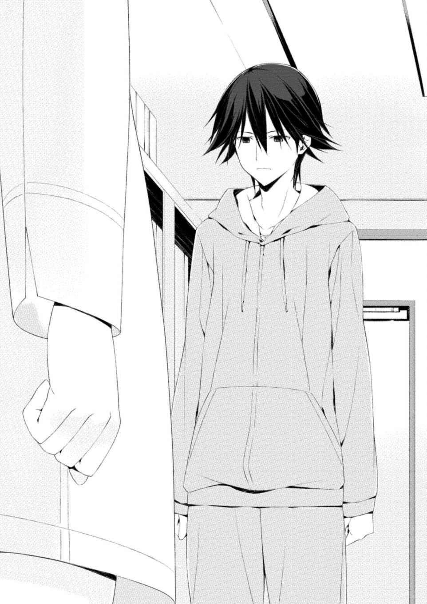
「......大丈夫、です。拓 留 兄ちゃんも、きっと同じ気持ちだと思うから」
「────」
結 人 の表情に、澪 は動けなかった。はっきりと、目を奪われた。まるでこの場にいる誰よりも大人のような、そんな顔をしている気がした。
結人はもう一度顔を拭うと、当然のように自分の足で歩いた。
そして伊 藤 の前に立った。
「伊藤さん」
「......結人」
呻 くように伊藤が言った。そしてすぐに、見ていられないというように顔を伏せた。
瞬間、澪は目を見張った。
結人が伊藤の胸に抱きついていた。背中に手を回し、自分の身体を押し付けるように。
結人の嗚 咽 をこらえる声が聞こえた。
「......っ」
伊藤の顔がくしゃくしゃに歪 み、膝をついた。抱き返しながら、伊藤は泣いていた。
「......ごめんな。ごめんなぁ......」
結人は伊藤の肩に顔を押し付けながら、何度も横に振った。背中が震えていた。
澪からは結人の顔は見えなかった。しかしそれは泣いている姿だった。
結人のくぐもった声が響いた。
「いろいろ、本当に......。......本当に、ごめんなさい」
結人を搔 き抱 く伊藤の手にありったけの力がこもった。伊藤は顔を擦りつけるように激しくかぶりを振った。
抱き合っている二人に、その場の誰もが動けずにいた。
そして澪はやはり結人から目が離せなかった。
やがて結人が絞り出すような大きさで言った。
涙が混じった声だった。
「......ありがとう。ありがとう、ございます......」
その瞬間、澪の視界が明滅した。
泣き叫ぶ伊藤の声が聞こえてきていた。しかしそれはどこか遠くから響いてくるようだった。
白くなっていく目の前の光景に澪は逆らえなかった。
夢の光景だった。
アメリカ時代。実験区画。女の子が口を開いた。
「──ありがとう」
結人と伊藤のむせぶ声がかき消され、女の子の声が響いた。
澪 は声もなく涙を流していた。
それは澪自身が気づかないほど、自然な涙だった。
ドアを開けた瞬間、澪は胸倉を摑 まれた。
「なんで俺に何も言わなかった」
夜だった。
澪が自宅に帰ってからほどなく、ドアベルがけたたましく連打された。相手はわかっていたので、誰だと問うことなく澪はドアを開けていた。
神 成 は初めて見るくらいに怒っていた。振り払う気力がなく、澪はされるがままだった。
「今さらだけどな。お前は何をしてもいいと──」
追及する神成の言葉が止まった。澪は無理やり下を向いたが、胸倉を摑まれたままでは満足にそれもできなかった。
「......どうしたんだ」
「......別に何も」
無駄だと知りながら澪はそう返したが、声に力は入らなかった。泣き腫らした目とそのまわりがひどいことになっているのはわかっていた。
神成は手を離し、玄関の中に入ってドアを閉めた。女の家に入るのに許可も得ないのかと軽口を叩 きたかった。けれど気持ちが重く澱 んでいた。
澪は無言で部屋の中に戻ると、神成も黙ってついてきた。猫が初めて見る闖 入 者 に警戒したのか落ち着きなく走り回った。
「......猫、飼ってたのか」
その気遣いに澪はようやく苦笑できた。切り替えるように頰 を軽く叩くと、開き直るようにひどいことになっている顔を正面から神成に向けた。
「飼ってるわけじゃない。そんなことを聞きに来たのか」
神成は啞 然 とした表情を浮かべると、複雑な気持ちにいちいち表情をつき合わせて顔の色を変えたあと、諦めたようにため息をついた。
「......脅迫まがいの電話と、出来損ないの爆弾を仕掛けた犯人は逮捕されたよ」
そうか、と澪は頷 いた。
そのまま沈黙が流れると、神成は腑 に落ちないような表情を浮かべた。そしてなおも黙っていたが、やがて言った。
「......何も聞かないのか」
「興味ない。というか、あんたが何か聞きに来たんじゃないのか」
神成は大きなため息を一つついてから、言った。
「捕まったのは横浜に住んでる未成年の男子でな。犯行そのものは認めているが、共犯者がいたというんだ。チャットのみのやり取りだったらしく、ハンドルネームはＫ。だが、押収したそいつのマシンを調べてみても、そんなログは残っていなかった」
さすがだな、と澪 は心中で感心した。いっさいの足跡の消去を頼んだのは知り合いのスーパーハッカーだったが、相変わらずどうやっているのか見当がつかなかった。警察の捜査からも逃げおおせるやりかたを、澪は知らない。
「男子曰 く、すべてはそのＫに扇動されてやったということらしい。なぜ、俺に何も言わなかった」
「私がＫだという証拠はないんだろ？」
「俺に直接電話しただろうが」
「言い直す。私がＫだという、公に使える証拠はないんだろ？」
「......言うつもりはないってか」
「犯人は捕まった。何か問題あるか」
Ｃと名乗る馬鹿男子が、伊 藤 の移送に合わせて物騒なことを企んでいるという情報を澪がネット上で摑 んだのは、伊藤の移送の日取りが決まった翌日だった。不出来な爆弾を車両に仕掛けて伊藤を救い出すという、失敗が目に見えている計画だ。Ｃがアクセスしているサイトの内容から、素人なりに自力で爆弾を仕掛けることができるだろうと踏んだ澪は、そのことを最初に神 成 に報告しようとした。伊藤は大切な研究対象だ。失うわけにはいかなかった。
しかし結 人 の件があった。
無理やりでも神成に、移送に公式な立場から介入してもらう必要があった。爆弾を殺傷能力のないものに変更させるための材料を澪が送ったのだが、かなりの出費だった。言ったら反対するに決まっている神成には、何も言うわけにはいかなかった。
「......結人くんのためか」
「......さあな。ああ、そうだ一つだけ。伊藤は無事に移送されたんだろうな」
「滞りなくな。Ｋとやらがなにもしなかったんでな」
嫌味に澪は肩をすくめた。しっしっと手を振ると、神成はもはや呆 れた様子すら見せず、肩を怒らせてドアへ向かった。
出ていく直前、振り返らないまま神成が言った。
「......確かに伊藤くんの立場を考えると、今後結人くんが自由に面会できるようになるかはわからない。だが、時間が経てば穏便に会えたはずだ。こんなことをしなくてもな。......あんたはもう少し、人に頼ることを覚えるべきだ」
ドアが閉まった。
鬱 陶 しい沈黙と寒さが部屋に残り、澪は力尽きたように寝転がった。
「わかってんだよ、そんなことは」
伊 藤 が医療少年院に送致され、研究機関をたらい回しにされ続けるとしても、時間が経てばどこかで結 人 は正式な手続きを踏んで伊藤と面会できたはずだ。
無理やりな計画を実行したのは勇み足だと澪 は理解していた。しかしどうしても、できる限り早く、結人の願いを叶 えてやりたかった。
アメリカにいた子どもたちと結人は違う。それもわかっていた。年齢はもちろん、背格好すら似ても似つかない。
強いて理由をあげるとすれば。大事な人間を奪われた結人が、奪った対象を前にして何と言うのか。どんな想いを抱えて、どんな行動を取るのか。
それを、澪は知りたかった。
「......ありがとう、か」
油断するとまた涙が出そうになるのを、澪は堪えた。
結人は事件の真相を知っている。伊藤は自らの意思で結 衣 を手にかけたわけではない。しかしそれでも結人はまだ子どもだ。すべてを割り切れるわけがない。
だが澪が目を奪われたあの表情は。
そしてアメリカにいたとき、あの女の子は──ベスという名前の、あのこまっしゃくれて生意気で、澪と同じく両親から疎まれ、流れ着いた研究所で研究の材料にされ、他ならない澪が加担していた実験によって命を奪われたあの女の子は、絶命する瞬間、ありがとうと言ったのだ。
加害者である、澪に対して。
ありがとうと。
「くそ......！」
流れ落ちてしまった涙を八つ当たりぎみに澪は拭った。
時刻を見ると、日が変わっていた。
三十一日。大 晦 日 。
一年の最後の日。不意に自分はこれからどうすべきか、澪は思いついてしまった。
「......そう。いいわよ。澪ちゃんがそう決めたのならね」
「......あまり驚いてませんね」
「まあ、遅かれ早かれそうなるだろうなとは思っていたから」
寝耳に水であろう決断を澪が告げると、百 瀬 はあっけらかんと言った。何事にも百瀬が動じないのはいつものことだが、どうもきな臭いものを澪は感じた。
「何か、知ってるんですか？ アメリカ時代の私のことを」
「そりゃ一通りはね。そう言ったから、澪ちゃんはウチに来てくれたんでしょ？」
「............」
どうも誤魔化されている気がしたが、澪 はまあいいかとすぐに思い直した。これから直接確認すれば済むことだ。
「とりあえず着の身着のままで向かいます。必要なものがあったら連絡しますから、あとで送ってもらえますか」
「いいわよ。料金は持ってあげる。優秀な情報屋をこのまま手放すのは惜しいからね」
助かります、と澪は言ってしっかりと頭を下げた。なんだかんだ言って世話になった場所だ。比較的自由に動けたのは百 瀬 の性格と力に依 るところが大きかった。
「ああそうだ、澪ちゃん。一つだけアドバイス」
出ようとしたところで百瀬が言った。澪が振り向くと、にやりという言葉以外がまったく似合わない表情で百瀬が笑っていた。
「あなたね、澄ましているときもすてきだけれど、たぶんいちばんかわいく見えるのは泣き顔よ。昨日初めて見て、そう思ったわ」
かっと頰 が赤くなるのを感じ、澪は慌てて向き直ってドアを開けた。
「うるさいですよ」
およそ別れにはふさわしくない言葉を叩 きつけて、澪は乱暴にドアを閉めた。
フリージアから成田空港まではおよそ一時間半だった。
大 晦 日 の昼の空港は新年を海外で過ごすであろう客でうるさく、徹夜明けの澪の頭にはがんがんと響いた。昨夜というか今日の日付変更とほぼ同時に思い立ったにしてはなかなかの行動力だよな、と澪は自分を褒めつつ、とにかく座れるベンチを探した。
キャンセル待ちで粘った便が飛び立つまではまだ間があった。手続きを済ませてから出発ロビーで休んだほうが静かだろうが、手続きの列に並ぶ人はおびただしいことになっており、挙げ句に先頭の人間が係員と揉 めていた。あそこに並ぶ体力は澪には見当たらなかった。
しかしベンチはどこも埋まっていた。家族連れの嬌 声 があちこちで耳についた。澪はうんざりとして、いっそのことそこらに座り込んでしまおうかと思い、手頃な場所を探して視線をさ迷わせていると、いきなり肩を摑 まれた。
振り向き、澪はまず呆 れた。そしてそれを隠さない声色で言った。
「......なにしてるんだ？」
神 成 だった。走ってきたのか、肩で息をしていた。昨日の事件処理で同じく寝ていないのか、顔に疲れが出ていた。
「それはこっちの台詞だ。アメリカに戻るだと？」
「ああ。確認したいことができた」
「あのな......ＡＨでのあんたの研究と部屋はどうなる」
息を弾ませながら神 成 が言った。澪 が持っていた飲みさしのペットボトルを掲げると、ひったくるようにして神成はそれを受け取り、乱暴に呷 った。
「いい加減頭打ちだと言っただろう。離れたところで誰も極端には困らない。落ち着く先が決まったら連絡するから、ネット上でのやり取りで十分だろ」
「手続きとか、いろいろあるんだよ。昨日の今日でいきなり言われてもな」
「そこらへんは好きにやってくれ」
「あのなあ......」
人の流れを遮っていたのか、行きかう人からうるさそうな視線が飛んできた。澪と神成は壁際に寄った。
神成の携帯が鳴った。呼び出し画面を見て神成は顔をしかめたが、結局出ずにポケットに戻した。
「現場からだろ。いいのか」
「あんたが言うな。......すっぽかしてきてるんだ。理由くらい教えてくれてもいいだろ」
上手く説明する自信が澪にはなく、黙った。神成は追及を重ねなかったが、それでもじっと待っていた。
感情がまとまらないまま、澪は言った。
「昨日の犯人だけどな」
「......うん？」
「ハンドルネームをＣと言ったんだが」
神成が「認めてるんじゃないか」と小さく怒鳴ったが、澪は無視した。
「カオスチャイルドの頭文字から取ったそうだ。本人は症候群者じゃないから、それにあやかったんだと。宮 代 と伊 藤 の信奉者らしい」
「信奉者？」
「そのままの意味だと思うがな。殺人鬼を神だと崇める手合いと一緒だ。話を合わせるために私も信奉者だと名乗ったよ。だが、案外正しいんじゃないかと思ってな」
計画の前日の二十九日、なぜここまでするのかとＣに問われて、澪は思わずキーボードを打つ手を止めた。答えに詰まったからだ。少し悩んで、宮代と伊藤の信奉者だと打ち込んだ。
「......アメリカに居たとき、委員会は私から大切なものを奪った。その復 讐 は必ずやり遂げる。だが、私が何を恨んでいるのか、大切なものが奪われたまさにその瞬間、私は何をしていたのか。正直......あいまいな部分がある」
「............」
「今さらの話だ。だが、昨日の結 人 を見ていて、わずかに思い出したことがある。私はそれの全容が知りたい。今もまだ、何かを忘れている気がするんだ」
神 成 は黙って聞いていた。澪 はいつの間にか消えていた眠気に気づかないまま続けた。
「何が起こるかはわからない。が、どうせろくなことじゃないだろう。私が泣いたんだぞ？ 一大事だろ」
ふっ、という神成が吹き出す声が聞こえた。
「だが、宮 代 も伊 藤 も、知りたくもなかったことを受け入れている」
おそらくは結 人 も。そして、事件の真相に関わった他の連中たちも。
「──私の番だ。今度は、私の番なんだよ」
見れば、手続きの列で揉 めていた者が消えており、少しずつだが列が動き始めていた。
相変わらずベンチは空いていなかった。出発ロビーに移動したほうがいいだろうと、澪は神成からペットボトルを奪い返した。
「じゃあな。いい加減座りたい」
ああ、と神成が手を振った。
列に並ぼうとして、澪はふと思い出した。
「ああ、そうだ。一つ頼まれてくれ」
言って、澪は財布から安アパートの鍵を取り出し、神成へ放り投げた。
「これは？」
「家の鍵だ。夜に帰れば猫が窓を引 っ搔 くはずだから、捕まえて誰か里親を探してやってくれ」
「......いいのか。あんたの猫だろ」
「飼ってるわけじゃないと言ったろ。たまに餌をやっていただけだ」
「珍しいな、あんたにしては」
何気なく言われて、澪は言葉に詰まった。
珍しいことだろうか。そうなのかもしれなかった。
不意に、結人が言ったことを泉 理 に内緒にしていたことを澪は思い返した。伊藤に会いたいと結人が漏らしたことを泉理に黙っている理由はなかった。そもそも泉理には結人との生活の中で伝わっていることだと改めて思った。
なぜ泉理に黙っていたのか。
ある考えが浮かぶと同時に、馬鹿馬鹿しいと澪は苦笑した。
「いや、そうだな。もし大丈夫ならあんたのところで飼えないか？」
「......別に構わないけどな。実家でも猫を飼っていたから」
「一人暮らしでペットを飼うと婚期が遠のくらしいぞ」
「やかましい。......で、名前は？」
え、と澪は意表を突かれた。
「......名前？」
「そう、名前。どうあれ、あんたが拾って面倒を見ていた猫だろう。なんて呼んでたんだ」
「別に決めてなかった。おい、とか、猫、とか」
あのなあ、と神 成 は呆 れた。
「じゃあ、今決めてくれ。あんたの猫なんだから」
「だから、飼ってたわけじゃない」
しかし神成は引き下がらなかった。
澪 はため息をついて、しばらく悩み、言った。
「......じゃあ、クロで」
「クロ？」
神成が目を丸くした。
そして、爆笑し始めた。澪は憮 然 として言った。
「なんだ。黒猫なんだからそれでいいだろう」
「いや、すまない。クロ。クロね。いいんじゃないか？」
にやにやとする神成に腹を立て、澪は背を向けた。
「やっぱりあんたが決めろ」
「や、悪かった。クロにしよう。ただ......」
「なんだ」
「意外とセンスないんだな」
うるさい、と澪は言って手続きの列に向かった。
出立する便への搭乗案内が響き、順に機内への誘導が始まった。
同時に、澪は電話をかけた。
するとすぐに留守番電話に繫 がった。
時差を考えると向こうは夜だが、真夜中というわけではない。おそらくは研究で手が離せないんだろうと澪は思い、わずかに微笑んだ。
反論できない留守番電話は好都合だった。
「紅 莉 栖 。突然ですまないんだが、しばらく泊めてくれ。あと、金貸してくれ。そっちに行く飛行機代で文無しなんだ。よろしく頼む」
おそらくは聞いた瞬間に激怒するだろう友人の顔を思い浮かべながら、澪はそう告げた。そして予定の到着時間を教えたあと、電話を切ろうとして、ふとその手を止めた。
自分らしくなさが続いている。そう思いながら澪は続けた。
「......なあ、紅莉栖。そっちに着いたらいろいろと話したいことがあるんだ。いろいろあったよ。結局目的は何一つ果たせなかったけどな。それでも本当にいろいろあった。あんたが日本でいろんな連中と知り合ったように、私もそれなりに知り合った。そいつらの話をしよう。今まであえてあんたの知り合いの話は深く聞いてこなかったけど、よかったらそれも聞かせてくれ」
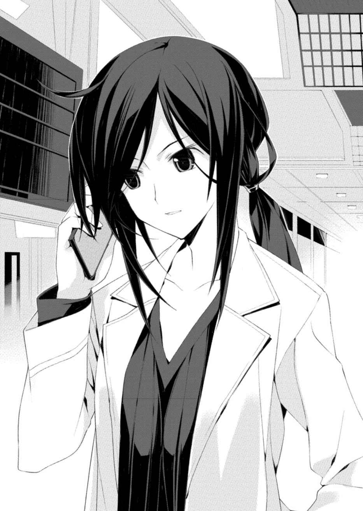
澪 は自分の物言いに苦笑して電話を切った。
泉 理 に隠していた理由。
もしかすると、どこかで結 人 と秘密を共有することで真似事をしたかったのかもしれない。
おそらくは家族やそれに近い何かの。
搭乗を促すアナウンスが聞こえてきた。
時差の関係で、新年を迎えるのは向こうでのことになる。
悔いのない一年を。
そう呟 いて、澪はゲートを通った。
前略
お元気ですか。
年が明けてからは初めての手紙になります。変わりなくいるでしょうか。
返事、ありがとう。
言われるまで気づきませんでした。私、毎回手紙であなたに謝っていたかしら。メールとかだったら、自分が書いたものはいつでも読み返せるんだけれど。何枚も書いていたからしっかりと思い返すことができません。でも、手紙が手元にあるあなたが言うのならそうなんでしょうね。
上手く言葉にできないけれど、それはとてもショックでした。
確かに私はあなたに負い目がある。すべてを背負ったあなたに対して、姉として、友人として、女として何もできなかった。いちばん近くにいたのは私なのに。けれどその事実に対して立ち止まってはいけないと、決断を通して伝えてくれたのはあなた。今も全身で訴え続けてくれているのはあなた。だから、そんなことじゃいけないのにね。
思えばあなたが去っていった十月から今まで、たった数ヵ月しか経っていないのに、リハビリで病院にいたときとは比べ物にならないほどいろいろなことがありました。それも私だけではなく、おそらく私たち全員にとって。
私と結 人 、うきは小 森 さんという人を家の一員として受け入れました。香 月 は初 山 さん、二 谷 さんといっしょに自分の委員会を立ち上げた。有 村 は石 綿 くんとの出来事を通して何かを吹っ切った。そして聞いているかもしれませんが、久 野 里 さんは一度アメリカに戻るそうです。
おそらく他の人から見ればなんでもない日常の一部なのでしょう。けれど私たちにとってはなんでもないことなんかじゃなかった。あなたが勝ち取り、残していってくれた日常はけっしてそんなものじゃない。......まあ、久野里さんはどうかわからないけれど。でも、彼女もどこかで私たちと同じ部分があるんじゃないかと思っています。ここには書けませんが、そう思った出来事があったから。
私たちの日常は広がって、そして変わっていっています。
そうじゃなければいけませんよね。
少し不思議な話をしていいですか。
大 晦 日 から元旦にかけて、みんなで明治神宮に初詣に行きました。すごい人ごみで、私たちははぐれないように手を繫 いでいたんだけれど、いつの間にか私が携帯電話を落としてしまっていたみたいなの。
届けてくれたのは、友達とやっぱり初詣に来ていたという同い年くらいの女の子でした。私が落としたことに気がついて、わざわざ人ごみをかき分けて届けてくれて。幸い私の携帯はちょっと傷がついた程度で壊れてはいなかった。けど、少し血がついていたの。その女の子が言うには、いっしょに来ていた友達が携帯を拾ってくれたときに怪我をしてしまったみたいで。ちゃんとその友達にもお礼が言いたかったんだけど、結局そのまま別れてしまって......。
なぜかしらね。そのときに私は、ふとあの子のことを思い出したの。
あの子のことを。
何の根拠もないけれど、あの子も私たちと同じように日常を過ごすことができている。そんなふうに、はっきりと感じたの。
私たちはきっとそうやって、過ごしています。
大切なあなたのおかげで。
ごめんねとは書きません。
ありがとう。
また、手紙書きます。
最後になりましたが、新年、あけましておめでとうございます。
今年もよろしくお願い致します。
草々
南 沢 泉 理
どこかから聞こえていた除夜の鐘が響き終わり、年もとっくに明けてから一時間ほど。明治神宮は参拝客でごった返していた。
列というより波になった人ごみの集団が、進んでいるのか下がっているのかわからないくらいの速度で蠢 いていた。例年、日本で最も初詣に訪れる参拝客が多いのが、ここ明治神宮だった。その人数は三が日だけで三百万人を超える。
「う～......気持ち悪い」
その波に飲まれて、もはや歩いているのか勝手に運ばれているのか判断ができないほど足下がおぼつかなくなっている尾上 世 莉 架 が呻 くと、挟むように陣取ってくれている友人二人が顔を覗 き込んできた。
「ちょ、ちょっと世莉架大丈夫？」
「いつかみたいに吐かないでよ～......ってきっついこれ！」
葵 と彩 花 の二人だった。二人とも、世莉架が通っている横浜の高校の同級生だ。
そもそもの失敗は、「元旦とか二日に行くより、大 晦 日 から元旦にかけてのカウントダウン参拝をしたほうが意外とすいてるらしい」という、どこから出た情報かわからないものを信じたのがいけなかった。事実、元旦や二日に比べるとすいているのかもしれないが、そもそもの比べる対象が間違っていた。
人ごみの苦手な世莉架が足を踏み入れて良い時間と場所ではないことは明らかだった。
「ホットドッグ食べたときに帰れば良かった......」
恨めしそうに言って世莉架は屋台が立ち並んでいた広場のほうに視線を投げたが、たいして上背があるわけではなかった。すぐにどうやら酔っているらしい大柄な男性に阻まれて視界が遮られる。香ってくる酒気にもう一度世莉架は「う～......」と呻いた。
「言っとくけど、何がなんでも参拝っていったのは彩花だからね」
世莉架の意見に賛同しているらしい葵が、横を睨 みつけて言った。
「け、結局はあんたたちも賛成したじゃん！ 彼氏欲しくないの？」
ざわめきに負けないように彩花が怒鳴ると、葵も怒鳴り返した。
「それはあんたのお願いごとでしょ！ いや、それもお願いするけど！」
「う～......」
要は明治神宮に参拝に来ているのは彩花のそれが原因だった。ここのところまわりの友人たちが、駆け込むように彼氏を作ったのを見て焦ったらしかった。
世莉架といえば相変わらず浮いた話はなく、彼氏云 々 も別にどうでも良かったのだが、初詣という行事には少し興味があった。一年の初めに願い事をする。すてきなことのような気がした。
だが、明治神宮という場所には少々難色を示した。聞いていた人ごみももちろんなのだが、ここは最寄り駅こそ渋谷駅ではないが、住所的には渋谷区だ。気軽に来て良い場所ではなかった。できれば他の神社に、と世 莉 架 は訴えたのだが、結果的には彩 花 に押し切られた。
「まあ、一年に一度のことだっていうのはわかるけど......」
世莉架はぼやいて思い切り背伸びして前を見た。すでに列に並んで二時間ほどになる。着実に本殿に近づいており、もうそろそろというところまで来ているのだが、数分前と比べて進んだかどうかはわからなかった。
吐き気がひどくなってきた。自分だけ諦めて先に帰ろうか、と世莉架が思ったときだった。
先にお参りを済ませて帰路に着く参拝客の一団が近くを通り過ぎた。人ごみにもまれながら、よろよろと歩いていた。
そのときに世莉架は気がついた。
反射的に動いていた。
「世莉架？」
葵 の言葉に答えないまま、世莉架は並んでいた集団から飛び出た。転がるように地面に飛びついた。
「......っ！」
手を踏まれ、激痛が走った。世莉架は歯を喰 いしばってそれを堪 えた。顔を上げると、誰が踏んだのかわからないほどの人垣があった。
手の甲と指がひどく擦りむけて皮が破れ、血が流れていた。が、そんなことはどうでも良かった。世莉架は拾ったものを慌てて確認した。
携帯電話だった。大丈夫だった。ケースに傷はついてしまっていたが、液晶は割れていなかった。
「世莉架、どうしたの？ 大丈夫、吐きそう？」
そばに来た葵が声をかけてきた。しゃがみ込んでいるのを見てそう気遣ってくれたらしい。世莉架は大丈夫、と立ち上がった。
すると葵が目を見開いた。
「ちょっと、血が出てる！」
「え、ああ、うん。痛いけど、平気。それより葵、これ」
世莉架は拾った携帯電話を差し出した。
「......スマホ？」と、葵。
「うん。これ、あの人たちが落としたみたい。踏まれそうだったから」
世莉架はそう言って、すでに遠くの人ごみに飲まれつつある集団を指差した。帰りの客はこれから参拝する客に比べて混んでいるわけではない。距離が開きつつあった。
「え、どれ？」
葵 は世 莉 架 の指を追った。
「あの、女の子同士で手ぇ繫 いでる人たち。同い年くらいの」
「あーあの男の子も連れてる？」
そう、と世莉架は頷 いた。
「え、よくわかったね。この人ごみで」
「たまたま見てたから。ね、届けてあげてくれない？」
「え、私？」
「お願い。私、気分悪くって」
いつになく強く言う世莉架に葵はおかしなものを感じた。が、世莉架がおかしいのはいつものことだ。いいよ、と葵は頷いた。
「あ、彩 花 が列の中で待ってる！ もう一度入れてもらえるかどうかわからんけど、戻ってみて！」
そう言って、葵は走り出し、すぐに人に紛れて見えなくなった。
「う～痛ったい......！ ちくしょうめ」
世莉架は指を舐 めてからハンカチを傷口に当て、列に戻った。
彩花は集団の端で待ってくれていた。世莉架が前後に気を遣って、「あのぉ......」と頭を下げると、二時間ほど苦楽をともにした近くの人の顔を覚えてくれていたのか、あっさりと横から入れてくれた。
怪我に驚く彩花に世莉架が事情を説明すると、「ほんとよくわからんよね、あんたって......」と、感心するように半ば呆 れていた。
五分ほどすると、先ほどの世莉架と同じように葵が戻ってきた。
「届けられた？」
世莉架が訊 くと、葵は頷いた。
「うん、あんたにお礼言ってたよ。お大事にしてくださいって」
「え？」
「や、なんかあんたの血が少しついちゃってたみたい。で、事情説明したら、お大事にしてくださいって、お医者さんみたいに」
「そっか」
「喜んでたよ」
「......そっか。良かった」
それから世莉架は指の痛みに耐えながら参拝の順番を待った。ずきずきと痛んだが、代わりに吐き気は消えてくれていた。
午前二時過ぎに、ようやく世莉架たちの順番が来た。賽 銭 箱 ではなく、大きな白い敷物が本殿前に敷かれており、そこに賽銭を投げ入れるようになっていた。そして投げ入れた人間がその場で二礼二拍手一礼をして去っていく。
参拝客の人数を考えればしょうがないことだが、情緒もへったくれもないなあと世 莉 架 が思った瞬間、彩 花 が言った。
「情緒もへったくれもないじゃん、これ。こんなんで彼氏できんの？」
世莉架は苦笑して、葵 といっしょにまあまあと彩花を宥 めた。
金欠生活につき、世莉架は五円玉を取り出した。
投げ入れて、作法どおりに二回深くお辞儀。そして拍手二回。
「う～......と......」
そういえば肝心の願い事をまったく考えていなかった。どうしようかと悩んでいたとき、まさに世莉架の目の前にある、自分の血で少し汚れた手が意識に入ってきた。
「......うん、よし」
──みんなにとって、良い一年でありますように。
胸中でそうはっきりと告げ、世莉架は一礼した。
「じゃあもーとっとと行こう？」
葵の言葉に世莉架は頷 いた。彩花にどんな具体的な彼氏をお願いしたのかふざけあいながら訊 ねつつ、出口へと向かう人の波に入り込んだ。
階段に差しかかったとき、ふと世莉架は足を止めた。
「............」
そのときのなんでもない光景に、世莉架は確かに動けなくなった。
地面が見えないほどの人がそこにはいた。その多くは微笑んでいた。新年を祝い合っているのだろう、笑みをお互いに向けていた。
「世莉架？」
葵の声が聞こえてきた。
なぜかにじんでいた目を拭って、世莉架はかぶりを振った。
「大丈夫、なんでもない。行こ」
元旦だ。
新しい年と時間の始まりだ。
世莉架は振り返らずに歩き出した。
了
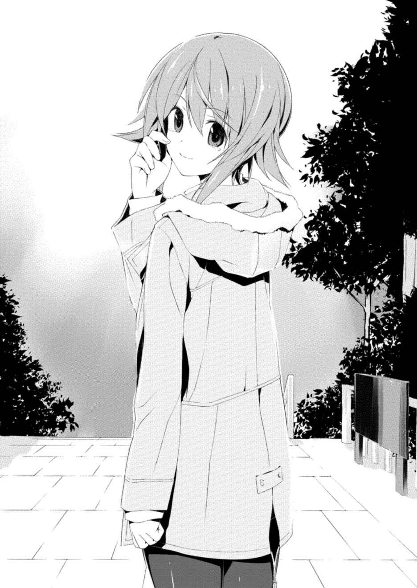
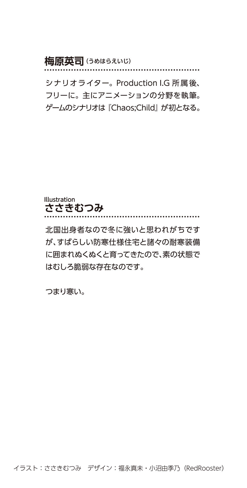
本作品は、二〇一七年三月、小社より講談社ラノベ文庫として刊行されたものを電子書籍化したものです。
◎本電子書籍内の外部リンクに関して
ご利用の端末によっては、リンク機能が制限され正しく動作しない場合があります。また、リンク先のｗｅｂサイト、メールアドレス、電話番号は、事前のご連絡なく削除あるいは変更されることもございます。ご了承ください。
Chaos ;Child
－Children's Revive －
二〇一七年五月一日発行
原作：MAGES. /Chiyo st. inc
著：梅 原 英 司
© MAGES./Chiyo st. inc
Eiji Umehara 2017
発行者 森田浩章
発行所 株式会社講談社
東京都文京区音羽二‐一二‐二一
〒112-8001
◎本電子書籍は、購入者個人の閲覧の目的のためにのみ、ファイルの閲覧が許諾されています。私的利用の範囲をこえる行為は著作権法上、禁じられています。
17M0321E
01